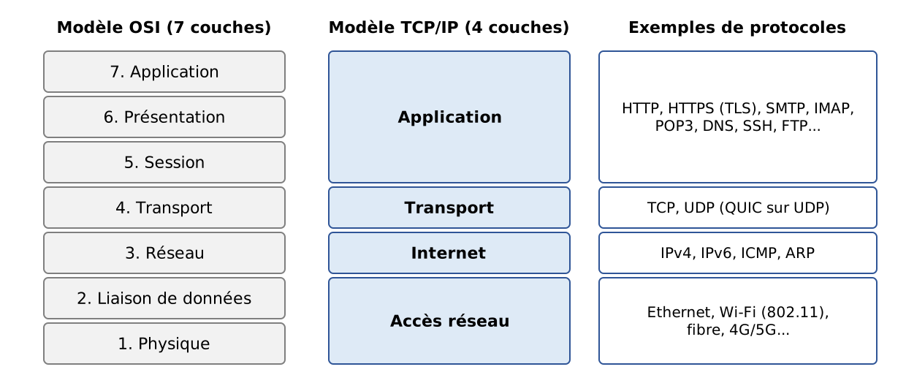
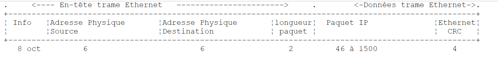
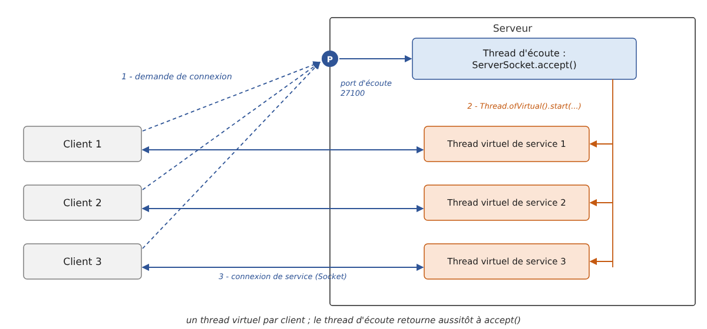
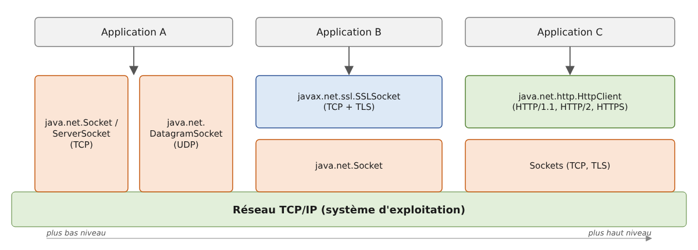
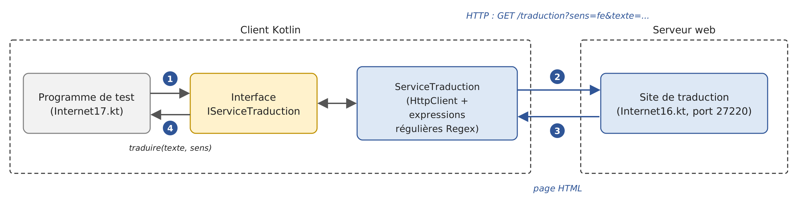
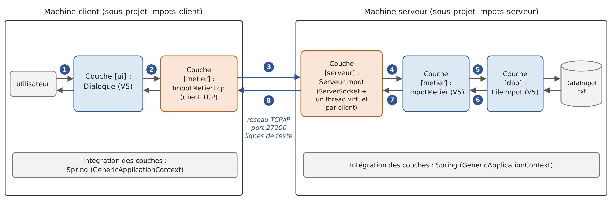

12. Programmation Internet
12.1. Généralités
12.1.1. Les protocoles de l'Internet
Nous donnons ici une introduction aux protocoles de communication de l'Internet, appelés aussi suite de protocoles TCP/IP (Transmission Control Protocol / Internet Protocol), du nom des deux principaux protocoles. Il est utile que le lecteur ait une compréhension globale du fonctionnement des réseaux, et notamment des protocoles TCP/IP, avant d'aborder la construction d'applications distribuées. Cette présentation s'inspire d'un texte du guide d'administration « Lan Workplace for DOS » de Novell (début des années 1990), dont elle garde la structure et l'esprit, mis à jour : l'Internet de 2026 n'est plus tout à fait celui de 1990.
Le concept général de créer un réseau d'ordinateurs hétérogènes vient de recherches effectuées par le DARPA (Defense Advanced Research Projects Agency) aux États-Unis. Le DARPA a développé la suite de protocoles connue sous le nom de TCP/IP qui permet à des machines hétérogènes de communiquer entre elles. Ces protocoles ont été testés sur un réseau appelé ARPAnet, réseau qui devint ultérieurement l'Internet (ARPAnet adopte TCP/IP le 1er janvier 1983). Les protocoles TCP/IP définissent des formats et des règles de transmission et de réception indépendants de l'organisation des réseaux et des matériels utilisés.
Le réseau conçu par le DARPA et géré par les protocoles TCP/IP est un réseau à commutation de paquets. Un tel réseau transmet l'information en petits morceaux appelés paquets. Ainsi, si un ordinateur transmet un gros fichier, celui-ci sera découpé en petits morceaux qui seront envoyés sur le réseau pour être recomposés à destination. TCP/IP définit le format de ces paquets, à savoir notamment :
- l'origine du paquet ;
- sa destination ;
- sa longueur ;
- son type.
Les protocoles de l'Internet sont décrits par des documents publics appelés RFC (Request For Comments), publiés par l'IETF (Internet Engineering Task Force) et consultables sur www.rfc-editor.org. Nous citerons quelques-uns de ces documents au fil du chapitre.
12.1.2. Le modèle OSI
Les protocoles TCP/IP suivent à peu près le modèle de réseau ouvert appelé OSI (Open Systems Interconnection Reference Model) défini par l'ISO (International Organization for Standardization). Ce modèle décrit un réseau idéal où la communication entre machines peut être représentée par un modèle à sept couches :

Chaque couche reçoit des services de la couche inférieure et offre les siens à la couche supérieure. Supposons que deux applications situées sur des machines A et B différentes veulent communiquer : elles le font au niveau de la couche Application. Elles n'ont pas besoin de connaître tous les détails du fonctionnement du réseau : chaque application remet l'information qu'elle souhaite transmettre à la couche du dessous, la couche Présentation. L'application n'a donc à connaître que les règles d'interfaçage avec la couche Présentation. Une fois l'information dans la couche Présentation, elle est passée selon d'autres règles à la couche Session et ainsi de suite, jusqu'à ce que l'information arrive sur le support physique et soit transmise physiquement à la machine destination. Là, elle subira le traitement inverse de celui qu'elle a subi sur la machine expéditrice.
À chaque couche, le processus expéditeur chargé d'envoyer l'information l'envoie à un processus récepteur, sur l'autre machine, appartenant à la même couche que lui. Il le fait selon certaines règles que l'on appelle le protocole de la couche. Le dialogue réel descend les couches de la machine A, traverse le réseau physique puis remonte les couches de la machine B ; mais chaque couche a l'impression de dialoguer directement avec la couche de même niveau de l'autre machine.
Le rôle des différentes couches est le suivant :
Couche | Rôle |
Physique | Assure la transmission de bits sur un support physique (câble cuivre, fibre optique, ondes radio). Les points d'intérêt à ce niveau sont le codage de l'information en signaux et le mode de transmission. |
Liaison de données | Masque les particularités physiques de la couche Physique. Découpe l'information en trames, détecte (et parfois corrige) les erreurs de transmission, gère l'accès au support partagé. |
Réseau | Gère le chemin que doivent suivre les informations envoyées sur le réseau. On appelle cela le routage : déterminer la route à suivre par une information pour qu'elle arrive à son destinataire. |
Transport | Permet la communication entre deux applications alors que les couches précédentes ne permettaient que la communication entre machines. Un service fourni par cette couche est le multiplexage : la couche transport utilise une même liaison réseau (de machine à machine) pour transmettre des informations appartenant à plusieurs applications. |
Session | Fournit des services permettant à une application d'ouvrir et de maintenir une session de travail sur une machine distante. |
Présentation | Uniformise la représentation des données sur les différentes machines. Des données provenant d'une machine A vont être « habillées » par la couche Présentation de la machine A selon un format standard avant d'être envoyées sur le réseau. Parvenues à la couche Présentation de la machine destinatrice B, qui les reconnaîtra grâce à leur format standard, elles seront habillées d'une autre façon afin que l'application de la machine B les reconnaisse. |
Application | On trouve à ce niveau les applications généralement proches de l'utilisateur, telles que la messagerie électronique, le Web ou le transfert de fichiers. |
12.1.3. Le modèle TCP/IP
Le modèle OSI est un modèle de référence qui n'a jamais été réalisé tel quel. La suite de protocoles TCP/IP, qui s'est imposée, s'organise en quatre couches seulement :

Les couches Session et Présentation n'existent pas en tant que telles dans TCP/IP : leurs fonctions, quand elles sont nécessaires, sont assurées par les applications elles-mêmes ou par des protocoles intermédiaires comme TLS (chiffrement des échanges), qui s'insère entre TCP et l'application.
La couche Accès réseau
En réseau local, la technologie dominante est aujourd'hui Ethernet pour les liaisons filaires et le Wi-Fi (normes IEEE 802.11) pour les liaisons sans fil. D'autres technologies, comme Token-Ring, ont aujourd'hui disparu.
Ethernet est le nom donné à une technologie de réseaux locaux à commutation de paquets inventée au PARC de Xerox au début des années 1970 et normalisée par Xerox, Intel et Digital Equipment en 1980, puis par l'IEEE (norme 802.3). L'Ethernet d'origine était constitué d'un câble coaxial auquel toutes les machines étaient raccordées (topologie en bus), avec un débit de 10 mégabits par seconde :

Ce réseau était diffusant : une machine qui émettait plaçait sur le câble des informations portant l'adresse de la machine destinatrice ; toutes les machines raccordées les recevaient et seule celle à qui elles étaient destinées les conservait. Comme plusieurs machines pouvaient décider d'émettre en même temps, il fallait détecter les collisions : c'était la méthode d'accès CSMA/CD (Carrier Sense Multiple Access / Collision Detect). Chaque transmetteur écoutait le câble avant d'émettre (CSMA) et, pendant qu'il émettait, vérifiait que ce qui passait sur le câble était bien ce qu'il avait émis ; sinon, il y avait collision (CD) : chacun cessait d'émettre et réessayait après un temps aléatoire.
L'Ethernet actuel a beaucoup évolué : les machines sont reliées par des câbles à paires torsadées ou des fibres optiques à un commutateur (switch) qui aiguille chaque trame vers le seul port de son destinataire. Les liaisons sont en duplex intégral (émission et réception simultanées) : il n'y a plus de collisions et CSMA/CD est devenu inutile. Les débits courants vont de 1 à 10 gigabits par seconde, et bien davantage dans les centres de données.
Ce qui n'a pas changé, c'est l'adressage sur 48 bits : chaque carte réseau a une adresse, appelée adresse physique ou adresse MAC (Media Access Control), notée en général sous la forme de six octets hexadécimaux (par exemple [00:1A:2B:3C:4D:5E]). Elle est inscrite par le fabricant dans la carte, mais, contrairement à ce que l'on a longtemps affirmé, elle peut être modifiée par logiciel : les systèmes d'exploitation actuels utilisent même des adresses MAC aléatoires sur les réseaux Wi-Fi, pour éviter qu'un appareil puisse être suivi de réseau en réseau.
La couche Internet (couche Réseau)
Nous trouvons au niveau de cette couche les protocoles suivants :
Protocole | Rôle |
IP (Internet Protocol) | délivre des paquets entre deux nœuds du réseau, en version 4 (IPv4) ou 6 (IPv6) |
ICMP (Internet Control Message Protocol) | réalise la communication entre le programme du protocole IP d'une machine et celui d'une autre machine. C'est donc un protocole d'échange de messages de contrôle à l'intérieur même du protocole IP |
ARP (Address Resolution Protocol) | fait la correspondance adresse IP d'une machine → adresse physique de la machine (en IPv6, ce rôle est tenu par le protocole NDP, Neighbor Discovery Protocol) |
On cite parfois aussi RARP (Reverse Address Resolution Protocol), qui faisait la correspondance inverse. Il est abandonné depuis longtemps au profit de DHCP, que nous présentons plus loin.
La couche Transport
Dans cette couche, on trouve les protocoles suivants :
Protocole | Rôle |
TCP (Transmission Control Protocol) | assure une remise fiable et ordonnée d'informations entre deux applications |
UDP (User Datagram Protocol) | assure une remise non fiable d'informations entre deux applications |
Le protocole QUIC (2021), sur lequel repose HTTP/3, est un protocole de transport fiable et chiffré construit au-dessus d'UDP.
La couche Application
On trouve ici divers protocoles, que nous détaillerons un peu plus loin :
Protocole | Rôle |
HTTP, HTTPS (HyperText Transfer Protocol) | le protocole du Web : un client (navigateur, application) demande des ressources à un serveur web. HTTPS est HTTP chiffré par TLS |
DNS (Domain Name System) | transforme un nom de machine en adresse IP |
SMTP (Simple Mail Transfer Protocol) | permet l'envoi de courriers électroniques |
POP3, IMAP | permettent de lire le courrier électronique stocké sur un serveur |
SSH (Secure Shell) | permet de se connecter à une machine distante et d'y exécuter des commandes, de façon chiffrée. Il a remplacé TELNET, qui faisait la même chose sans chiffrement |
FTP (File Transfer Protocol), SFTP | permettent des transferts de fichiers |
DHCP (Dynamic Host Configuration Protocol) | permet à une machine d'obtenir automatiquement son adresse IP et sa configuration réseau |
12.1.4. Fonctionnement des protocoles de l'Internet
Les applications développées dans l'environnement TCP/IP utilisent généralement plusieurs des protocoles de cet environnement. Un programme d'application communique avec la couche la plus élevée des protocoles. Celle-ci passe l'information à la couche du dessous et ainsi de suite jusqu'à arriver sur le support physique. Là, l'information est physiquement transférée à la machine destinatrice où elle retraversera les mêmes couches, en sens inverse cette fois-ci, jusqu'à arriver à l'application destinatrice des informations envoyées. Le schéma suivant montre le parcours de l'information :

Prenons un exemple : une application qui envoie un fichier à une autre machine en utilisant TCP.
- l'application délivre une suite d'octets à transmettre à la couche transport ;
- la couche transport découpe cette suite d'octets en segments TCP et ajoute au début de chaque segment un en-tête contenant notamment les numéros de port source et destination ainsi qu'un numéro de séquence. Les segments sont passés à la couche Réseau gouvernée par le protocole IP ;
- la couche IP crée un paquet encapsulant le segment TCP reçu. En tête de ce paquet, elle place les adresses IP des machines source et destination. Elle détermine également l'adresse physique de la machine à qui remettre le paquet (le destinataire lui-même ou un routeur). Le tout est passé à la couche Accès réseau, c'est-à-dire à la carte réseau qui couple la machine au réseau physique ;
- là, le paquet IP est encapsulé à son tour dans une trame physique et envoyé à son destinataire sur le support ;
- sur la machine destinatrice, la couche Accès réseau fait l'inverse : elle désencapsule le paquet IP de la trame physique et le passe à la couche IP ;
- la couche IP vérifie que le paquet est correct : elle calcule une somme de contrôle (checksum) de son en-tête, qu'elle doit retrouver dans l'en-tête du paquet. Si ce n'est pas le cas, celui-ci est rejeté ;
- si le paquet est déclaré correct, la couche IP désencapsule le segment TCP qui s'y trouve et le passe au-dessus, à la couche transport ;
- la couche TCP vérifie elle aussi une somme de contrôle du segment. S'il est correct, elle envoie un accusé de réception à la machine source, sinon le segment est ignoré (et sera réémis par la source) ;
- grâce aux numéros de séquence, la couche TCP remet les segments dans le bon ordre ;
- il ne reste plus à la couche TCP qu'à transmettre la partie données des segments à l'application destinatrice de celles-ci, identifiée par le numéro de port destination.
12.1.5. Les problèmes d'adressage dans l'Internet
Un nœud d'un réseau peut être un ordinateur, une imprimante, un téléphone, un objet connecté, n'importe quoi en fait pouvant communiquer à l'aide des protocoles TCP/IP. Chaque nœud a une adresse physique ayant un format dépendant du type du réseau. Sur un réseau Ethernet ou Wi-Fi, l'adresse physique est codée sur 6 octets.
L'adresse Internet d'un nœud (adresse IP) est une adresse logique : elle est indépendante du matériel et du réseau utilisé. En IPv4, c'est une adresse sur 4 octets identifiant à la fois un réseau et un nœud de ce réseau. Elle est habituellement représentée sous la forme de 4 nombres, valeurs des 4 octets, séparés par un point. Ainsi, l'adresse de la machine Lagaffe de la faculté des Sciences d'Angers a longtemps été 193.49.144.1 et celle de la machine Liny 193.49.144.9. On en déduisait que l'adresse du réseau local était 193.49.144.0 et que l'on pouvait avoir jusqu'à 254 nœuds sur ce réseau.
Parce que les adresses IP sont indépendantes du réseau physique, une machine d'un réseau A peut communiquer avec une machine d'un réseau B sans se préoccuper du type de réseau sur lequel cette dernière se trouve : il suffit qu'elle connaisse son adresse IP. Le protocole IP de chaque réseau se charge de faire la conversion adresse IP ↔ adresse physique, dans les deux sens.
Les adresses IP publiques doivent être toutes différentes. Leur attribution est hiérarchique : l'IANA (Internet Assigned Numbers Authority) distribue des blocs d'adresses à cinq registres régionaux, dont le RIPE NCC pour l'Europe, qui les redistribuent aux opérateurs et aux grandes organisations. Ceux-ci les affectent ensuite à leurs clients. L'administrateur d'un réseau qui a reçu le bloc 193.49.144.0 à 193.49.144.255 peut affecter les adresses 193.49.144.1 à 193.49.144.254 comme il l'entend. En France, c'est longtemps l'INRIA qui a affecté les adresses ; ce n'est plus le cas depuis longtemps.
12.1.5.1. Les classes d'adresses IP et la notation CIDR
Une adresse IPv4 est une suite de 4 octets notée I1.I2.I3.I4, qui contient en fait deux informations :
- l'adresse du réseau (les bits de poids fort) ;
- l'adresse d'un nœud dans ce réseau (les bits de poids faible).
À l'origine, la taille de ces deux champs était fixée par la valeur du premier octet. Les adresses IP étaient divisées en trois classes principales :
Classe | Premier octet | Réseau / nœud | Nombre de réseaux et de nœuds |
A | 1 à 126 (bit de poids fort 0) | R1.N1.N2.N3 : réseau sur 1 octet (7 bits utiles), nœud sur 3 octets | 126 réseaux de 2²⁴ - 2 nœuds (environ 16 millions) |
B | 128 à 191 (bits de poids fort 10) | R1.R2.N1.N2 : réseau sur 2 octets (14 bits utiles), nœud sur 2 octets | 2¹⁴ = 16 384 réseaux de 2¹⁶ - 2 = 65 534 nœuds |
C | 192 à 223 (bits de poids fort 110) | R1.R2.R3.N1 : réseau sur 3 octets (21 bits utiles), nœud sur 1 octet | 2²¹ réseaux (environ 2 millions) de 254 nœuds |
L'adresse de la machine Lagaffe étant 193.49.144.1, l'octet de poids fort vaut 193, c'est-à-dire en binaire 11000001 : le réseau était de classe C.
Ce découpage s'est révélé beaucoup trop rigide : une organisation de 300 machines devait demander un réseau de classe B et en gaspillait plus de 65 000 adresses. Depuis 1993 (RFC 1518 et 1519), les classes ont été abandonnées au profit du routage sans classe CIDR (Classless Inter-Domain Routing). La frontière entre la partie réseau et la partie nœud peut être placée sur n'importe quel bit ; on l'indique par la longueur du préfixe réseau, après une barre oblique :
- 193.49.144.0/24 : les 24 premiers bits désignent le réseau, les 8 derniers le nœud. Ce réseau contient les adresses 193.49.144.0 à 193.49.144.255 ;
- 10.0.0.0/8 : un réseau de 2²⁴ adresses ;
- 192.168.1.0/26 : un réseau de 2⁶ = 64 adresses, de 192.168.1.0 à 192.168.1.63.
On rencontre encore l'ancienne notation du masque de sous-réseau, qui exprime la même chose : le préfixe /24 correspond au masque 255.255.255.0. Les termes « classe A, B, C » survivent dans le langage courant, mais ne correspondent plus à aucun mécanisme réel.
12.1.5.2. Adresses réservées, adresses privées et NAT
Certaines adresses ont un rôle particulier :
- l'adresse dont la partie nœud ne comporte que des 0 désigne le réseau lui-même : 193.49.144.0 est l'adresse du réseau 193.49.144.0/24 ;
- l'adresse dont la partie nœud ne comporte que des 1 est une adresse de diffusion : 193.49.144.255 désigne tous les nœuds du réseau 193.49.144.0/24. Ces deux adresses ne peuvent donc pas être affectées à un nœud : un réseau /24 de 256 adresses n'offre que 254 adresses utilisables ;
- les adresses 127.0.0.0/8, et en pratique 127.0.0.1, sont les adresses de bouclage (loopback) : une machine les utilise pour se désigner elle-même, sans passer par le réseau. Le nom [localhost] leur est associé ;
- les blocs 10.0.0.0/8, 172.16.0.0/12 et 192.168.0.0/16 (RFC 1918) sont réservés aux réseaux privés : ils peuvent être utilisés librement à l'intérieur d'une entreprise ou d'une maison, mais ne sont pas routés sur l'Internet ;
- les blocs 192.0.2.0/24, 198.51.100.0/24 et 203.0.113.0/24 (RFC 5737) sont réservés à la documentation et aux exemples.
Le nombre d'adresses IPv4 (2³², soit un peu plus de 4 milliards) est insuffisant pour toutes les machines connectées. Le stock central de l'IANA a été épuisé en 2011, celui du RIPE NCC en 2019. La pénurie a été contournée par la traduction d'adresses NAT (Network Address Translation) : les machines d'une maison ont des adresses privées (192.168.1.x par exemple) et la box qui les relie à l'Internet les « traduit » en sa propre adresse publique, unique. La solution durable est IPv6.
12.1.5.3. Les adresses IPv6
IPv6 (RFC 2460 en 1998, aujourd'hui RFC 8200) code les adresses sur 128 bits, ce qui en offre 2¹²⁸, soit environ 3,4 × 10³⁸ : plus de pénurie à craindre. Une adresse IPv6 s'écrit sous la forme de huit groupes de quatre chiffres hexadécimaux séparés par le caractère deux-points :
Les zéros de tête de chaque groupe peuvent être omis, et une seule suite de groupes nuls peut être remplacée par [::]. L'adresse précédente s'écrit donc [2001:db8::8a2e:0:370:7334]. L'adresse de bouclage, équivalent de 127.0.0.1, est [::1]. Dans une URL, une adresse IPv6 est placée entre crochets pour ne pas confondre ses deux-points avec celui qui précède le port : [http://[::1]:8080/].
IPv6 apporte d'autres simplifications : l'en-tête des paquets est de taille fixe, la configuration automatique des adresses est prévue d'origine et la traduction d'adresses NAT n'est plus nécessaire. Son déploiement a été lent, mais une part importante et croissante du trafic de l'Internet passe aujourd'hui par IPv6 (Google publie par exemple la proportion de ses utilisateurs qui y accèdent en IPv6), et les principaux opérateurs français le fournissent à leurs abonnés. Les deux versions cohabitent : la plupart des machines ont à la fois des adresses IPv4 et IPv6 (on parle de double pile, dual stack), et les programmes doivent savoir traiter les deux.
12.1.5.4. Les protocoles de conversion adresse IP ↔ adresse physique
Nous avons vu que lors d'une émission d'informations d'une machine vers une autre, celles-ci, à la traversée de la couche IP, étaient encapsulées dans des paquets. Ceux-ci ont la forme suivante :

Le paquet IP contient donc les adresses IP des machines source et destination. Lorsque ce paquet va être transmis à la couche chargée de l'envoyer sur le réseau physique, d'autres informations lui sont ajoutées pour former la trame physique qui sera finalement envoyée sur le réseau. Par exemple, le format d'une trame sur un réseau Ethernet est le suivant :

Les 8 premiers octets (préambule) servent à la synchronisation ; le champ de 2 octets qui précède les données indique, dans la forme la plus répandue de la trame Ethernet, le type du protocole transporté (IPv4, IPv6, ARP…) plutôt que la longueur du paquet. Dans la trame finale, il y a les adresses physiques des machines source et destination (dans la trame réelle, l'adresse destination précède l'adresse source, contrairement à l'ordre du schéma). Comment sont-elles obtenues ?
La machine expéditrice, connaissant l'adresse IP de la machine avec qui elle veut communiquer, obtient l'adresse physique de celle-ci en utilisant le protocole ARP (Address Resolution Protocol) :
- elle envoie un paquet d'un type spécial, appelé paquet ARP, contenant l'adresse IP de la machine dont on cherche l'adresse physique. Elle a pris soin également d'y placer sa propre adresse IP ainsi que son adresse physique ;
- ce paquet est envoyé à tous les nœuds du réseau local (diffusion) ;
- ceux-ci reconnaissent la nature spéciale du paquet. Le nœud qui reconnaît son adresse IP dans le paquet répond en envoyant à l'expéditeur son adresse physique. Il le peut car il a trouvé dans le paquet les adresses IP et physique de l'expéditeur ;
- l'expéditeur reçoit donc l'adresse physique qu'il cherchait. Il la stocke dans un cache afin de pouvoir l'utiliser ultérieurement si d'autres paquets sont à envoyer au même destinataire.
En IPv6, le même service est rendu par le protocole NDP (Neighbor Discovery Protocol), qui s'appuie sur des messages ICMPv6.
Reste à savoir comment une machine connaît sa propre adresse IP. Elle peut être inscrite dans un fichier de configuration de la machine : c'est ce qu'on fait encore pour les serveurs. Mais lorsque l'administrateur doit réorganiser son réseau, modifier un à un les fichiers de configuration de toutes les machines est fastidieux et source d'erreurs. Le protocole RARP permettait autrefois à une machine de demander son adresse IP à un serveur à partir de son adresse physique. Il a été remplacé par DHCP (Dynamic Host Configuration Protocol, RFC 2131) : au démarrage, la machine diffuse une demande sur le réseau ; un serveur DHCP (la box d'un particulier, un serveur dédié dans une entreprise) lui attribue une adresse IP pour une durée limitée (un bail), ainsi que le reste de sa configuration : préfixe du réseau, adresse du routeur, adresses des serveurs DNS. L'administrateur n'a plus qu'à configurer le serveur DHCP. En IPv6, une machine peut aussi construire elle-même son adresse à partir du préfixe annoncé par le routeur (autoconfiguration SLAAC).
12.1.6. La couche réseau dite couche IP de l'Internet
Le protocole IP définit la forme que les paquets doivent prendre et la façon dont ils doivent être gérés lors de leur émission ou de leur réception. Ce type de paquet particulier est appelé un datagramme IP. Nous l'avons déjà présenté :
L'important est qu'outre les données à transmettre, le datagramme IP contient les adresses IP des machines source et destination. Ainsi la machine destinatrice sait qui lui envoie un message.
À la différence d'une trame de réseau, qui a une longueur déterminée par les caractéristiques physiques du réseau sur lequel elle transite, la longueur du datagramme IP est fixée par le logiciel et sera donc la même sur différents réseaux physiques. Nous avons vu qu'en descendant de la couche réseau dans la couche physique, le datagramme IP était encapsulé dans une trame physique.
Les trames physiques circulent de nœud en nœud vers leur destination, qui peut ne pas être sur le même réseau physique que la machine expéditrice. Le paquet IP peut donc être encapsulé successivement dans des trames physiques différentes au niveau des nœuds qui font la jonction entre deux réseaux de types différents. Il se peut aussi que le paquet IP soit trop grand pour être encapsulé dans une trame physique (la charge utile d'une trame Ethernet est limitée à 1 500 octets). En IPv4, le nœud où se pose ce problème décompose alors le paquet IP en fragments, qui ne seront réassemblés qu'à leur ultime destination. En IPv6, les routeurs ne fragmentent plus : c'est l'émetteur qui doit découvrir la taille maximale acceptée sur le chemin et adapter la taille de ses paquets.
12.1.6.1. Le routage
Le routage est la méthode d'acheminement des paquets IP à leur destination. Il y a deux méthodes : le routage direct et le routage indirect.
Routage direct
Le routage direct désigne l'acheminement d'un paquet IP directement de l'expéditeur au destinataire à l'intérieur du même réseau :
- la machine expéditrice d'un datagramme IP a l'adresse IP du destinataire ;
- elle obtient l'adresse physique de ce dernier par le protocole ARP, ou dans son cache si cette adresse a déjà été obtenue ;
- elle envoie le paquet sur le réseau à cette adresse physique.
Routage indirect
Le routage indirect désigne l'acheminement d'un paquet IP à une destination se trouvant sur un autre réseau que celui auquel appartient l'expéditeur. Dans ce cas, les parties « réseau » des adresses IP des machines source et destination sont différentes ; la machine source le constate en comparant l'adresse destination à son propre préfixe réseau. Elle envoie alors le paquet à un nœud spécial appelé routeur (router), qui connecte le réseau local aux autres réseaux et dont elle connaît l'adresse IP (on l'appelle la passerelle par défaut ; elle est en général fournie par DHCP). Un routeur est attaché à au moins deux réseaux et possède une adresse IP dans chacun d'eux :

Dans notre exemple ci-dessus :
- le réseau n° 1 a l'adresse 193.49.144.0/24 et le réseau n° 2 l'adresse 193.49.145.0/24 ;
- à l'intérieur du réseau n° 1, le routeur a l'adresse 193.49.144.6 et l'adresse 193.49.145.3 à l'intérieur du réseau n° 2.
Le routeur a pour rôle de prendre le paquet IP qu'il reçoit, contenu dans une trame physique du réseau n° 1, et de le placer dans une trame physique pouvant circuler sur le réseau n° 2. Si l'adresse IP du destinataire du paquet est dans le réseau n° 2, le routeur lui enverra le paquet directement, sinon il l'enverra à un autre routeur, connectant le réseau n° 2 à un réseau n° 3, et ainsi de suite. Les routeurs de l'Internet s'échangent en permanence des informations sur les réseaux qu'ils savent atteindre (protocoles de routage comme BGP entre opérateurs) pour construire leurs tables de routage.
12.1.6.2. Messages d'erreur et de contrôle
Toujours dans la couche réseau, au même niveau donc que le protocole IP, existe le protocole ICMP (Internet Control Message Protocol). Il sert à envoyer des messages sur le fonctionnement interne du réseau : nœud injoignable, paquet ayant traversé trop de routeurs, etc. Les messages ICMP sont encapsulés dans des paquets IP et envoyés sur le réseau. Les couches IP des différents nœuds prennent les actions appropriées selon les messages ICMP qu'elles reçoivent. Ainsi, une application elle-même ne voit jamais ces problèmes propres au réseau. Les commandes [ping] (qui envoie des messages ICMP « Echo Request » et attend les « Echo Reply ») et [traceroute] / [tracert] (qui affiche les routeurs traversés) sont fondées sur ICMP.
12.1.7. La couche transport : les protocoles UDP et TCP
12.1.7.1. Le protocole UDP : User Datagram Protocol
Le protocole UDP permet un échange non fiable de données entre deux points, c'est-à-dire que le bon acheminement d'un paquet à sa destination n'est pas garanti, pas plus que l'ordre d'arrivée des paquets. L'application, si elle le souhaite, peut gérer cela elle-même, en attendant par exemple, après l'envoi d'un message, un accusé de réception avant d'envoyer le suivant.
Jusqu'à présent, au niveau réseau, nous avons parlé d'adresses IP de machines. Or, sur une machine, peuvent coexister en même temps différents processus qui tous peuvent communiquer. Il faut donc indiquer, lors de l'envoi d'un message, non seulement l'adresse IP de la machine destinatrice, mais également le « nom » du processus destinataire. Ce nom est en fait un numéro sur 16 bits (de 1 à 65 535), appelé numéro de port. Certains numéros sont réservés à des applications standard : port 53 pour DNS, 80 pour HTTP, 443 pour HTTPS, 25 pour SMTP, etc. Les ports inférieurs à 1024 sont dits « bien connus » ; sous Linux, il faut des privilèges particuliers pour ouvrir un service sur l'un d'eux. Les exemples de ce chapitre utilisent des ports des plages 27100-27199 et 27200-27299.
Les paquets gérés par le protocole UDP sont appelés des datagrammes. Ils ont la forme suivante :

Ces datagrammes sont encapsulés dans des paquets IP, puis dans des trames physiques. UDP est utilisé quand la rapidité compte plus que la fiabilité, ou quand l'application gère elle-même les pertes : DNS (une question, une réponse), diffusion audio et vidéo en direct, jeux en réseau, et le protocole QUIC de HTTP/3.
12.1.7.2. Le protocole TCP : Transmission Control Protocol
Pour des communications sûres, le protocole UDP est insuffisant : le développeur d'applications doit élaborer lui-même un protocole lui permettant de détecter le bon acheminement des paquets. Le protocole TCP évite ces problèmes. Ses caractéristiques sont les suivantes :
- le processus qui souhaite émettre établit tout d'abord une connexion avec le processus destinataire des informations qu'il va émettre. Cette connexion se fait entre un port de la machine émettrice et un port de la machine réceptrice, par un échange de trois segments (SYN, SYN-ACK, ACK : la « poignée de main en trois temps »). Il y a entre les deux ports un circuit virtuel qui est ainsi créé et qui sera réservé aux deux seuls processus ayant réalisé la connexion ;
- tous les octets émis par le processus source arrivent à destination dans l'ordre où ils ont été émis, ce qui n'est pas garanti par le protocole UDP puisque les paquets peuvent suivre des chemins différents ;
- l'information émise a un aspect continu : c'est un flux d'octets. Le processus émetteur envoie des informations à son rythme. Celles-ci ne sont pas nécessairement envoyées tout de suite : le protocole TCP peut attendre d'en avoir assez pour les envoyer. Elles sont placées dans une structure appelée segment TCP. Ce segment, une fois rempli, sera transmis à la couche IP où il sera encapsulé dans un paquet IP. Conséquence importante pour le programmeur : une « ligne » envoyée en une fois peut arriver en plusieurs morceaux, et plusieurs lignes peuvent arriver ensemble. C'est à l'application de retrouver les limites de ses messages (nous utiliserons pour cela la fin de ligne) ;
- chaque segment envoyé par le protocole TCP est numéroté. Le protocole TCP destinataire vérifie qu'il reçoit bien les segments en séquence. Pour chaque segment correctement reçu, il envoie un accusé de réception à l'expéditeur ;
- si, au bout d'un certain temps, le protocole TCP ayant émis un segment ne reçoit pas d'accusé de réception, il retransmet le segment en question, garantissant ainsi la qualité du service d'acheminement de l'information ;
- le circuit virtuel établi entre les deux processus qui communiquent est full-duplex : l'information peut transiter dans les deux sens simultanément. Ainsi le processus destination peut envoyer des accusés de réception alors même que le processus source continue d'envoyer des informations. Cela permet par exemple au protocole TCP source d'envoyer plusieurs segments sans attendre d'accusé de réception. S'il réalise au bout d'un certain temps qu'il n'a pas reçu l'accusé de réception d'un certain segment n° n, il reprendra l'émission des segments à ce point ;
- TCP régule aussi son débit pour ne pas saturer le destinataire (contrôle de flux) ni le réseau (contrôle de congestion).
12.1.8. La couche Applications
Au-dessus des protocoles UDP et TCP existent divers protocoles standard :
TELNET et SSH
TELNET permet à un utilisateur d'une machine A de se connecter sur une machine B (appelée souvent machine hôte) comme s'il disposait d'un terminal connecté à cette machine. TELNET s'appuie sur TCP. Ses échanges, mots de passe compris, circulent en clair : il a été remplacé par SSH (Secure Shell), qui rend le même service de façon chiffrée et sert aussi au transfert sécurisé de fichiers (SFTP, SCP) et à la création de tunnels. Le programme client [telnet] a longtemps été un outil commode pour dialoguer « à la main » avec un serveur TCP : nous verrons comment le remplacer.
FTP (File Transfer Protocol)
Ce protocole permet l'échange de fichiers entre deux machines distantes ainsi que des manipulations de fichiers telles que des créations de répertoire. Il s'appuie sur le protocole TCP. Comme TELNET, il transmet les mots de passe en clair ; il est en voie de disparition au profit de SFTP et de HTTPS.
TFTP (Trivial File Transfer Protocol)
Ce protocole est une variante simplifiée de FTP. Il s'appuie sur le protocole UDP. Il sert encore au démarrage de machines par le réseau.
DNS (Domain Name System)
Lorsqu'un utilisateur désire échanger des informations avec une machine distante, il doit connaître l'adresse IP de cette machine. Il est bien plus agréable de désigner une machine par un nom que par son adresse IP. Se pose alors le problème de l'unicité du nom : il y a des milliards de machines interconnectées. On pourrait imaginer qu'un organisme centralisé attribue les noms : ce serait très lourd. Le contrôle des noms a été distribué dans des domaines. Chaque domaine est géré par un organisme qui a toute liberté quant au choix des noms à l'intérieur de son domaine. Ainsi les machines en France appartiennent souvent au domaine [fr], géré par l'AFNIC (l'INRIA l'a géré jusqu'à la création de l'AFNIC en 1997). Pour continuer à simplifier les choses, on distribue encore le contrôle : des domaines sont créés à l'intérieur du domaine [fr]. Ainsi l'université d'Angers possède le domaine [univ-angers.fr] ; le service qui le gère a toute liberté pour nommer les machines du réseau de l'université et pour créer des sous-domaines.
Le nom complet d'une machine (FQDN, Fully Qualified Domain Name) précise la hiérarchie des domaines auxquels elle appartient, du plus spécifique au plus général : [www.univ-angers.fr]. À l'intérieur d'un domaine, on peut souvent utiliser des noms relatifs, complétés automatiquement par le système.
Une application peut donc référencer une machine par son nom. Au bout du compte, il faut quand même obtenir l'adresse IP de cette machine. Supposons que d'une machine A on veuille communiquer avec une machine B :
- la machine A consulte d'abord un fichier local de correspondances ([/etc/hosts] sous Linux et macOS, [C:\Windows\System32\drivers\etc\hosts] sous Windows), puis son cache ;
- sinon, elle interroge le serveur DNS dont l'adresse figure dans sa configuration (fournie en général par DHCP). Elle lui envoie une requête DNS contenant le nom de la machine recherchée. Si le serveur interrogé connaît la réponse, ou l'a en cache, il renvoie à la machine A l'adresse IP correspondante. Sinon, il interroge à son tour, en partant des serveurs racine, les serveurs responsables du domaine [fr], puis de [univ-angers.fr], etc., jusqu'à obtenir la réponse, qui redescendra jusqu'à la machine A.
Le DNS associe à un nom des enregistrements de différents types : A (adresse IPv4), AAAA (adresse IPv6), CNAME (alias vers un autre nom), MX (serveurs de courrier du domaine), etc.
HTTP et HTTPS (HyperText Transfer Protocol)
C'est le protocole du Web, et de loin le plus utilisé aujourd'hui : non seulement par les navigateurs, mais aussi par les applications qui échangent des données (les services web du chapitre suivant). Nous l'étudierons en détail. HTTPS est HTTP transporté dans une connexion chiffrée par TLS (Transport Layer Security) ; c'est aujourd'hui la forme normale du Web.
SMTP, POP3 et IMAP
SMTP sert à envoyer des courriers électroniques, POP3 et IMAP à lire ceux qui sont stockés sur un serveur. Nous les présenterons également.
XDR, RPC, NFS
Citons enfin trois protocoles définis par Sun Microsystems, l'entreprise qui a créé Java : XDR (eXternal Data Representation), qui spécifie une représentation standard des données indépendante des machines ; RPC (Remote Procedure Call), protocole d'appel de procédures distantes qui s'appuie sur XDR ; NFS (Network File System), qui permet à une machine de « voir » le système de fichiers d'une autre machine et s'appuie sur RPC. NFS reste utilisé dans le monde Unix. L'idée d'appel de procédure distante a été reprise par de nombreux successeurs, aujourd'hui les services web REST (sur HTTP) et gRPC (sur HTTP/2).
12.1.9. Conclusion
Nous avons présenté dans cette introduction quelques grandes lignes des protocoles Internet. Pour approfondir ce domaine, on pourra lire l'ouvrage de référence de Douglas Comer, « Internetworking with TCP/IP, Volume 1 » (Pearson, 6e édition), dont des éditions antérieures ont été traduites en français, ainsi que les RFC citées dans ce chapitre. Pour HTTP, la documentation de Mozilla developer.mozilla.org/fr/docs/Web/HTTP est une excellente introduction.
12.2. Les classes de la gestion des adresses IP
Une machine du réseau Internet est désignée par une adresse IP qui peut prendre deux formes :
- IPv4 : codée sur 32 bits et représentée par une chaîne de la forme "I1.I2.I3.I4" où In est un nombre entre 0 et 255 ;
- IPv6 : codée sur 128 bits et représentée par une chaîne de huit groupes de chiffres hexadécimaux séparés par des deux-points, comme "2001:db8::8a2e:370:7334". On ne peut plus aujourd'hui ignorer ces adresses : nos programmes les accepteront.
Une machine peut être aussi désignée par un nom. Ce nom n'est pas obligatoire, les applications utilisant toujours au final les adresses IP des machines. Les noms sont là pour faciliter la vie des utilisateurs : il est plus facile de demander à un navigateur l'URL [https://kotlinlang.org] que l'URL formée avec l'une des adresses IP de ce site, qui d'ailleurs change selon le lieu d'où on l'interroge.
Une machine peut avoir plusieurs adresses IP : une adresse de bouclage, une adresse par réseau auquel elle est connectée, des adresses IPv4 et IPv6.
La bibliothèque standard de Kotlin ne propose pas ses propres classes réseau : sur la JVM, un programme Kotlin utilise directement celles du JDK, dans le paquetage [java.net]. Tout ce chapitre repose donc sur les mêmes classes que le cours Java ; ce qui change, c'est la façon de les utiliser : propriétés à la place des accesseurs [getXxx], fonctions d'extension de la bibliothèque standard, [use] pour fermer les ressources, absence d'exceptions contrôlées.
Une adresse IP peut être représentée de deux façons :
- sous la forme d'une chaîne de caractères "I1.I2.I3.I4" ou "2001:db8::1" ;
- sous la forme d'un objet de type [InetAddress] (paquetage [java.net], qu'il faut importer : contrairement à un fichier source compact de Java, un fichier Kotlin n'importe automatiquement que les paquetages [kotlin.*], [kotlin.collections.*], [kotlin.io.*], [kotlin.text.*]… et [java.lang.*]).
La classe InetAddress
La classe [InetAddress] n'a pas de constructeur public : on obtient ses instances par des méthodes statiques de fabrication. Elle a deux classes dérivées, [Inet4Address] et [Inet6Address], une pour chaque version d'IP. Parmi ses méthodes, on trouve les suivantes (Kotlin voit les méthodes [getXxx()] et [isXxx()] sans paramètre comme des propriétés : on écrit [adresse.hostAddress] plutôt que [adresse.getHostAddress()], et [adresse.isLoopbackAddress]) :
Méthode | Rôle |
static InetAddress ofLiteral(String chaine) | (Java 22) transforme une adresse IPv4 ou IPv6 écrite en chiffres en objet [InetAddress], sans jamais interroger le DNS ; lance une [IllegalArgumentException] si la chaîne n'est pas une adresse IP. [Inet4Address.ofLiteral] et [Inet6Address.ofLiteral] n'acceptent que l'une des deux versions |
static InetAddress getByName(String nomOuAdresse) | rend l'adresse d'une machine désignée par son nom ou par son adresse IP. Si la chaîne n'est pas une adresse IP, le nom est cherché dans le DNS ; lance une [UnknownHostException] si la machine ne peut être trouvée |
static InetAddress[] getAllByName(String nomOuAdresse) | idem, mais rend toutes les adresses IP de la machine (un [Array<InetAddress>] en Kotlin) |
static InetAddress getLocalHost() | l'adresse de la machine sur laquelle s'exécute le programme, avec son nom |
static InetAddress getLoopbackAddress() | l'adresse de bouclage (127.0.0.1 ou ::1). Un service associé à cette adresse n'accepte que les clients situés sur la même machine que lui |
byte[] getAddress() | rend les octets de l'adresse (4 en IPv4, 16 en IPv6) : propriété [address] de type [ByteArray] en Kotlin |
String getHostAddress() | rend l'adresse sous sa forme textuelle : propriété [hostAddress] |
String getHostName(), String getCanonicalHostName() | le nom de la machine (propriétés [hostName], [canonicalHostName]) ; si l'objet a été créé à partir d'une adresse IP, ce nom est obtenu par une recherche « inverse » dans le DNS (l'adresse elle-même est rendue si cette recherche échoue) |
boolean isLoopbackAddress(), isSiteLocalAddress(), isAnyLocalAddress()… | rendent [true] si l'adresse est une adresse de bouclage, une adresse privée (10.x.y.z, 172.16.x.y à 172.31.x.y, 192.168.x.y), l'adresse « joker » 0.0.0.0 ou :: … (propriétés [isLoopbackAddress], [isSiteLocalAddress]…) |
Les méthodes statiques d'une classe Java s'appellent en Kotlin comme en Java, préfixées du nom de la classe : [InetAddress.getByName("localhost")]. Elles ne deviennent pas des propriétés : on écrit [InetAddress.getLoopbackAddress()].
Deux autres classes complètent [InetAddress] :
- [InetSocketAddress] représente un point de connexion : une adresse IP et un numéro de port. Ses propriétés [address] et [port] donnent ces deux informations. Le constructeur [InetSocketAddress(port)] associe le port à l'adresse joker 0.0.0.0, qui désigne toutes les adresses de la machine ;
- [NetworkInterface] représente une interface réseau de la machine (une carte Ethernet, une carte Wi-Fi, l'interface de bouclage…), avec ses adresses IP.
Le JDK n'a pas, en revanche, de classe représentant un réseau en notation CIDR, comme 193.49.144.0/24 : nous l'écrirons nous-mêmes, sous la forme d'une classe de données qui surcharge l'opérateur [in]. Le programme [Internet01.kt] illustre ces classes :
Résultats :
Commentaires :
- lignes 3-6 : les classes de [java.net] doivent être importées ;
- lignes 12-13 : les chaînes à analyser, dans une liste en lecture seule ;
- ligne 17 : [InetAddress.ofLiteral] (Java 22) transforme la chaîne en objet [InetAddress] si elle est une adresse IPv4 ou IPv6, et lance une [IllegalArgumentException] sinon (ligne 23). Comme l'objet de l'exception n'est pas utilisé, on le nomme [_] : le compilateur sait alors qu'il est volontairement ignoré ;
- ligne 18 : l'opérateur [is] (l'équivalent du [instanceof] de Java) distingue les deux versions d'IP : l'objet rendu est une instance de [Inet4Address] ou de [Inet6Address]. Le [if] de Kotlin étant une expression, il remplace l'opérateur ternaire de Java ;
- lignes 19-20 : la propriété [address] (la méthode Java [getAddress]) rend les octets de l'adresse dans un [ByteArray], que la fonction d'extension [toHexString] de la bibliothèque standard de Kotlin affiche en hexadécimal ; le paramètre [HexFormat.UpperCase] demande des lettres majuscules. Il s'agit ici du [HexFormat] de Kotlin (paquetage [kotlin.text], importé automatiquement), à ne pas confondre avec la classe [java.util.HexFormat] qu'utilise le cours Java. On voit (ligne 2 des résultats) que 193.49.144.1 est formée des quatre octets C1, 31, 90, 01 et (ligne 5) que ::1 est formée de 15 octets nuls suivis d'un octet valant 1 ;
- lignes 21-22 : le message est construit par des gabarits de chaînes ; [isLoopbackAddress] et [isSiteLocalAddress] (des méthodes Java [isXxx()], vues comme des propriétés booléennes) reconnaissent les adresses de bouclage et les adresses privées de la RFC 1918 ;
- ligne 4 des résultats : une surprise. La chaîne "192.168.1" a été acceptée et transformée en 192.168.0.1. [ofLiteral] accepte en effet les formes abrégées historiques des adresses IPv4 (le dernier nombre occupe alors tous les octets restants). Pour vérifier qu'une saisie est une adresse IPv4 complète, il faut donc contrôler en plus qu'elle comporte quatre nombres ;
- lignes 5-6 des résultats : les adresses IPv6 sont réaffichées par [hostAddress] sous une forme complète, sans l'abréviation [::] ni les zéros de tête : [0:0:0:0:0:0:0:1] pour [::1]. Le préfixe 2001:db8::/32 est, comme 192.0.2.0/24 en IPv4, réservé à la documentation ;
- lignes 29-32 : la méthode plus ancienne [getByName] accepte une adresse IP ou un nom de machine. La chaîne "256.1.1.1" n'étant pas une adresse IP valide (256 ne tient pas dans un octet), [getByName] la prend pour un nom de machine et interroge le DNS, qui ne la connaît pas : on obtient une [UnknownHostException] (ligne 9 des résultats). C'est pour éviter cette interrogation inattendue du DNS que [ofLiteral] a été ajoutée en Java 22. Le message de l'exception vient ici de la bibliothèque système de Linux. L'expression [e::class.simpleName] est la référence de classe de Kotlin ([KClass]) ; elle remplace [e.getClass().getSimpleName()]. Notons que, Kotlin n'ayant pas d'exceptions contrôlées, rien n'oblige à intercepter l'[UnknownHostException] : nous le faisons parce que nous voulons l'afficher, non parce que le compilateur l'exige ;
- ligne 36 : l'adresse de bouclage. L'affichage d'un objet [InetAddress] par [toString], appelée implicitement par le gabarit [${…}], a la forme [nom/adresse], le nom étant vide s'il n'est pas connu ;
- ligne 37 : l'adresse joker 0.0.0.0, obtenue ici par un [InetSocketAddress] sans adresse. Comme en C#, la création d'un objet se fait sans le mot clé [new] ;
- lignes 40-43 : des objets [InetSocketAddress] associant une adresse et un port. Leur affichage (lignes 12-13 des résultats) a la forme [nom/adresse:port] ; en IPv6, l'adresse est entourée de crochets ;
- lignes 55-77 : une classe de données (chapitre 4) qui représente un réseau en notation CIDR. Elle est déclarée dans le même fichier que la fonction [main], à la suite de celle-ci ;
- lignes 57-61 : la fonction [parse], placée dans l'objet compagnon, s'appelle comme une méthode statique Java : [Reseau.parse("193.49.144.0/24")]. Elle analyse une chaîne de la forme [adresse/préfixe] ; la déclaration déstructurante [val (ip, longueur) = cidr.split("/")] range les deux éléments de la liste rendue par [split] dans deux variables ;
- lignes 66-73 : une adresse appartient au réseau si ses [prefixe] premiers bits sont ceux de l'adresse du réseau. Le bit n° [bit] se trouve dans l'octet n° [bit / 8] ; le masque [0x80 shr (bit % 8)] l'isole dans cet octet. Kotlin n'a pas d'opérateurs [>>] et [&] : il utilise les fonctions infixes [shr] et [and], définies sur [Int] (d'où la conversion [toInt()] des octets). La boucle Java avec ses [return false] est remplacée par la fonction [all] appliquée à l'intervalle [0 until prefixe] : elle rend [true] si la lambda est vraie pour tous les bits, et s'arrête au premier bit différent ;
- ligne 66 : parce que la fonction s'appelle [contains] et porte le modificateur [operator], on peut écrire [adresse in reseau] (ligne 49), comme pour une collection. C'est la surcharge des opérateurs du chapitre 4, que C# connaît aussi et que Java n'a pas. Les lignes 14-15 des résultats montrent que 193.49.144.1 appartient au réseau 193.49.144.0/24 et que 193.49.145.3 (l'adresse du routeur de notre schéma, sur son second réseau) n'en fait pas partie. C'est exactement le test que fait une machine pour choisir entre routage direct et routage indirect ;
- ligne 77 : la classe de données génère un [toString] de la forme [Reseau(adresse=…, prefixe=…)] ; nous le redéfinissons pour afficher la notation CIDR.
Le DNS et les interfaces réseau
L'association adresse IP ↔ nom de machine est assurée par le DNS. On l'interroge avec les méthodes statiques [getByName] et [getAllByName] de [InetAddress], déjà présentées ; dans l'autre sens, les propriétés [hostName] et [canonicalHostName] font une recherche inverse. Ces méthodes sont bloquantes : une requête DNS peut demander plusieurs dizaines de millisecondes, voire plusieurs secondes si un serveur ne répond pas, pendant lesquelles le thread appelant est immobilisé. Le JDK n'offre pas de version asynchrone de ces méthodes ; la solution est de les appeler dans un thread virtuel (chapitre 8), qui ne coûte presque rien pendant qu'il attend, ou, dans une coroutine, de les envelopper dans [withContext(Dispatchers.IO) { … }] (chapitre 9). Depuis Java 18, on peut aussi remplacer le mécanisme de résolution des noms utilisé par [InetAddress] en fournissant sa propre implémentation de l'interface [InetAddressResolver], ce qui est utile pour les tests.
La classe [NetworkInterface] donne, avec sa méthode statique [networkInterfaces], un flux ([Stream]) des interfaces réseau de la machine ; pour chacune, la propriété [name] donne son nom, [isUp] indique si elle est active et la méthode [inetAddresses] donne le flux de ses adresses IP. En Kotlin, on transforme ces flux Java en séquences Kotlin par la fonction d'extension [asSequence] (paquetage [kotlin.streams]), pour leur appliquer les opérations habituelles ([filter], [joinToString]…).
Le programme [Internet02.kt] affiche le nom et les interfaces réseau de la machine sur laquelle il s'exécute, puis donne interactivement les correspondances nom de machine ↔ adresses IP :
Résultats (l'entrée a été redirigée ; nous avons réinséré les saisies après chaque invite) :
Commentaires :
- lignes 14-15 : le nom et l'adresse de la machine locale. Notre machine de test est une machine virtuelle Linux nommée [vm] ; chez le lecteur, ce sera bien sûr le nom de son propre ordinateur ;
- lignes 17-21 : les interfaces réseau actives et leurs adresses. Le flux Java est converti en séquence Kotlin par [asSequence] ; on garde les interfaces actives par [filter { it.isUp \}], puis on affiche chacune avec [forEach]. La version Java devait passer par une méthode auxiliaire [active] : [isUp] lance une exception contrôlée ([SocketException]), que l'interface fonctionnelle [Predicate] n'autorise pas. En Kotlin, qui n'a pas d'exceptions contrôlées, [isUp] s'écrit directement dans la lambda (si elle lançait une [SocketException], celle-ci se propagerait simplement) ;
- ligne 20 : les adresses IP de l'interface sont réunies en une seule chaîne par [joinToString], dont le séparateur par défaut est [", "] ; la lambda donne la chaîne à utiliser pour chaque élément. C'est l'équivalent de [map(InetAddress::getHostAddress).collect(Collectors.joining(", "))] ;
- lignes 27-28 : l'invite est affichée par [print], puis [readlnOrNull] lit une ligne au clavier ; elle rend [null] si l'entrée standard est fermée. L'opérateur [?.] n'appelle [trim] et [lowercase] que si la ligne n'est pas [null], et l'opérateur Elvis [?:] remplace un [null] par la chaîne vide ;
- ligne 33 : l'interrogation du DNS. Si le nom (ou l'adresse) est inconnu, une [UnknownHostException] est lancée (ligne 38) ;
- ligne 35 : le nom de la machine. Si l'on a donné une adresse IP, [hostName] fait une recherche inverse ;
- ligne 37 : les adresses IP de la machine sont réunies en une seule chaîne ; [joinToString] s'applique aussi bien au tableau rendu par [getAllByName] qu'aux collections et aux séquences.
Les résultats appellent quelques remarques. Ils dépendent de la configuration de la machine : ne vous attendez pas à obtenir exactement les mêmes chez vous.
- lignes 2-4 : la machine de test a deux interfaces actives : [eth0], reliée au réseau, et [lo], l'interface de bouclage. Le nom de la machine est associé à l'adresse 127.0.0.1 par le fichier [/etc/hosts] ;
- lignes 5-7 : le nom [localhost] correspond à l'adresse de bouclage 127.0.0.1. Sur une machine où IPv6 est actif, on obtiendrait aussi ::1 ;
- ligne 12 : avec une adresse IP, [hostName] a fait une recherche inverse et rendu le nom associé à l'adresse ;
- ligne 15 : la recherche inverse de ::1 a échoué, parce que le fichier [/etc/hosts] de notre machine de test n'associe aucun nom à cette adresse : [hostName] a rendu l'adresse elle-même. Sous Windows, on obtiendrait le nom de la machine ;
- ligne 18 : le nom [xx] est inconnu. Le message de l'exception vient de la bibliothèque système de Linux ; il serait différent sous Windows.
Sur une machine reliée à l'Internet, on peut aussi interroger un nom public comme [kotlinlang.org]. On obtient alors des adresses qui varient selon le lieu et le moment de la requête. Nous ne reproduisons pas ce résultat, notre machine de test n'ayant pas accès à l'Internet.
12.3. Les bases de la programmation Internet
12.3.1. Généralités
Considérons la communication entre deux machines distantes A et B :

Lorsqu'une application AppA d'une machine A veut communiquer avec une application AppB d'une machine B de l'Internet, elle doit connaître plusieurs choses :
- l'adresse IP ou le nom de la machine B ;
- le numéro du port avec lequel travaille l'application AppB. En effet, la machine B peut héberger de nombreuses applications qui travaillent sur l'Internet. Lorsqu'elle reçoit des informations provenant du réseau, elle doit savoir à quelle application elles sont destinées. Les applications de la machine B ont accès au réseau via des guichets appelés ports de communication. Le numéro du port destinataire est contenu dans le segment reçu par la machine B afin que celui-ci soit délivré à la bonne application ;
- les protocoles de communication compris par la machine B. Dans notre étude, nous utiliserons uniquement les protocoles TCP/IP ;
- le protocole de dialogue accepté par l'application AppB. En effet, les machines A et B vont se « parler ». Ce qu'elles vont dire va être encapsulé dans les protocoles TCP/IP. Néanmoins, lorsqu'au bout de la chaîne l'application AppB va recevoir l'information envoyée par l'application AppA, il faut qu'elle soit capable de l'interpréter. C'est analogue à la situation où deux personnes A et B communiquent par téléphone : leur dialogue est transporté par le téléphone, mais si A parle français et que B ne comprend pas cette langue, A et B ne pourront dialoguer utilement. Les deux applications communicantes doivent donc être d'accord sur le type de dialogue qu'elles vont adopter. Par exemple, le dialogue avec un serveur web n'est pas le même qu'avec un serveur de courrier : ces deux services n'acceptent pas les mêmes commandes. Ils ont des protocoles de dialogue différents.
12.3.2. Les caractéristiques du protocole TCP
Nous n'étudierons ici que des communications réseau utilisant le protocole de transport TCP. Rappelons ses caractéristiques essentielles pour le programmeur :
- une connexion est d'abord établie entre un port de la machine cliente et un port de la machine serveur. Elle est identifiée par quatre informations : adresse IP et port du client, adresse IP et port du serveur ;
- la connexion transporte deux flux d'octets, un dans chaque sens (full-duplex). Les octets arrivent dans l'ordre où ils ont été émis, sans perte ni duplication ;
- TCP ne connaît pas la notion de message : c'est au protocole de dialogue de l'application de délimiter les demandes et les réponses (par une fin de ligne, une longueur annoncée, la fermeture de la connexion…) ;
- l'un des deux partenaires ferme la connexion ; l'autre le constate lorsqu'il arrive à la fin du flux en lecture.
12.3.3. La relation client-serveur
Souvent, la communication sur Internet est dissymétrique : la machine A initie une connexion pour demander un service à la machine B. Elle précise qu'elle veut ouvrir une connexion avec le service SB1 de la machine B. Celle-ci accepte ou refuse. Si elle accepte, la machine A peut envoyer ses demandes au service SB1. Celles-ci doivent se conformer au protocole de dialogue compris par le service SB1. Un dialogue demande-réponse s'instaure ainsi entre la machine A, qu'on appelle machine cliente, et la machine B, qu'on appelle machine serveur. L'un des deux partenaires fermera la connexion.
12.3.4. Architecture d'un client
L'architecture d'un programme réseau demandant les services d'une application serveur sera la suivante :
12.3.5. Architecture d'un serveur
L'architecture d'un programme offrant des services sera la suivante :
Le programme serveur traite différemment la demande de connexion initiale d'un client et ses demandes ultérieures visant à obtenir un service. Le programme d'écoute n'assure pas le service lui-même : s'il le faisait, pendant la durée du service il ne serait plus à l'écoute des demandes de connexion et les autres clients ne seraient pas servis. Il procède donc autrement : dès qu'une demande de connexion est reçue sur le port d'écoute puis acceptée, le serveur confie à un autre thread le soin de rendre le service demandé par le client, sur la connexion de service qui vient d'être établie. On peut ainsi servir plusieurs clients en même temps :

On lit parfois que la connexion de service utilise, côté serveur, un autre port, choisi au hasard. C'est inexact : toutes les connexions de service utilisent le port d'écoute du serveur ; elles se distinguent les unes des autres par l'adresse et le port du client, qui eux sont différents. Nous le constaterons dans les affichages de notre serveur d'écho.
Un thread de service aura la structure suivante :
12.4. Découvrir les protocoles de communication de l'Internet
12.4.1. Introduction
Lorsqu'un client s'est connecté à un serveur, un dialogue s'établit entre eux. La nature de celui-ci forme ce qu'on appelle le protocole de communication du serveur. Parmi les protocoles les plus courants de l'Internet, on trouve les suivants :
- HTTP : HyperText Transfer Protocol, le protocole de dialogue avec un serveur web (serveur HTTP) ;
- SMTP : Simple Mail Transfer Protocol, le protocole de dialogue avec un serveur d'envoi de courriers électroniques (serveur SMTP) ;
- POP : Post Office Protocol, le protocole de dialogue avec un serveur de stockage du courrier électronique (serveur POP). Il s'agit là de récupérer les courriers électroniques reçus et non d'en envoyer. IMAP joue le même rôle ;
- FTP : File Transfer Protocol, le protocole de dialogue avec un serveur de stockage de fichiers (serveur FTP).
Ces protocoles, dans leurs versions historiques, ont la particularité d'être des protocoles à lignes de texte : le client et le serveur s'échangent des lignes de texte terminées par les deux caractères \r\n (retour chariot, passage à la ligne). Si on dispose d'un client capable de :
- créer une connexion avec un serveur TCP ;
- afficher à la console les lignes de texte que le serveur lui envoie ;
- envoyer au serveur les lignes de texte qu'un utilisateur tape au clavier,
alors on est capable de dialoguer avec un serveur TCP ayant un protocole à lignes de texte, pour peu qu'on connaisse les règles de ce protocole.
Le programme [telnet], qu'on trouvait sur les machines Unix et Windows, est un tel client ; l'outil PuTTY, configuré en mode de connexion brute (Raw), en est un autre. Le client [telnet] n'est plus installé par défaut sous Windows et la plupart des serveurs publics n'acceptent plus de dialogue en clair. Nous procéderons autrement :
- pour HTTP, nous utiliserons l'outil [curl], disponible en standard sous Windows 10 et 11, macOS et Linux, qui affiche le détail des échanges, puis le client TCP générique que nous écrirons plus loin dans ce chapitre. Sous Windows PowerShell, [curl] est un alias de la commande [Invoke-WebRequest] : il faut taper [curl.exe] ;
- comme nous n'avons pas accès à de vrais serveurs, nous interrogerons un petit serveur web que nous écrivons nous-mêmes et qui s'exécute sur la machine locale ;
- pour SMTP, POP et FTP, nous présenterons des dialogues types, conformes aux RFC qui définissent ces protocoles.
12.4.2. Un serveur web de test
Notre serveur web de test utilise le petit serveur HTTP fourni avec le JDK, dans le module [jdk.httpserver] (paquetage [com.sun.net.httpserver]). Malgré son nom de paquetage, c'est une API publique et documentée, présente depuis Java 6 ; elle suffit pour écrire un serveur de test en un seul fichier, sans aucune bibliothèque, et un programme Kotlin l'utilise comme n'importe quelle classe du JDK. Les vrais services web utilisent plutôt un serveur complet comme Tomcat, que nous rencontrerons avec Spring Boot au chapitre suivant. Il n'est pas nécessaire de comprendre ce programme en détail pour l'instant : il suffit de savoir ce qu'il répond. Le programme [Internet03.kt] est le suivant :
Commentaires :
- lignes 3-7 : les classes du serveur HTTP du JDK et celles de [java.net] sont importées. Le module [jdk.httpserver] fait partie du JDK : aucune dépendance n'est à déclarer dans [build.gradle.kts] ;
- lignes 15-21 : la page d'accueil, un petit document HTML écrit avec une chaîne brute [""" ... """], qui évite d'échapper les guillemets. La fonction [trimIndent] retire l'indentation commune des lignes ainsi que la première et la dernière ligne si elles sont vides ; on ajoute ensuite la fin de ligne finale du document. La constante est [private] : elle n'est visible que dans ce fichier ;
- ligne 24 : le port d'écoute, 27110 par défaut. [firstOrNull] rend le premier argument, ou [null] s'il n'y en a pas ; l'opérateur Elvis [?:] fournit alors la valeur par défaut ;
- ligne 26 : le serveur écoute sur l'adresse de bouclage 127.0.0.1 : il n'est accessible que depuis la machine elle-même. Le second paramètre de [create] est la taille de la file d'attente des connexions (0 : valeur par défaut du système) ;
- ligne 28 : toutes les URL commençant par [/], donc toutes les URL, sont confiées à la fonction [traiter]. Le second paramètre de [createContext] est un [HttpHandler], interface Java à une seule méthode abstraite, [handle(HttpExchange)], qui reçoit l'échange en cours : la requête du client et la réponse à construire. Grâce à la conversion SAM (chapitre 7), on lui passe une lambda, écrite après les parenthèses ; elle appelle [traiter] en lui transmettant aussi le port, une variable locale de [main] capturée par la lambda ;
- ligne 29 : le serveur démarre dans ses propres threads ; la fonction [main] se termine, mais le programme continue de s'exécuter jusqu'à ce qu'on l'arrête par Ctrl-C ;
- ligne 35 : un [HttpExchange] doit être fermé une fois la réponse envoyée. Il implémente [AutoCloseable] : la fonction [use] le fermera à la fin du bloc, quoi qu'il arrive ;
- lignes 36-37 : les méthodes Java [getRequestMethod()] et [getRequestURI().getPath()] sont vues comme des propriétés. La comparaison de chaînes se fait par [==] et [!=], qui comparent les contenus (là où Java exige [equals]) ;
- lignes 38-40 : seules les méthodes [GET] et [HEAD] sont acceptées ; les autres reçoivent la réponse 405 (méthode non autorisée) ;
- lignes 42-55 : le choix de la réponse selon l'URL, par une instruction [when] (le [switch] de Java). Les arguments nommés [avecTaille = true] rendent les appels de [envoyer] plus lisibles qu'un booléen anonyme ;
- ligne 44 : l'URL [/] rend la page d'accueil ;
- ligne 46 : l'URL [/bonjour?nom=xx] rend le texte [Bonjour xx !] ;
- ligne 49 : l'URL [/ancienne] provoque une redirection temporaire (code 302) vers l'adresse relative [/bonjour?nom=visiteur] ;
- ligne 51 : l'URL [/deplacee] provoque une redirection permanente (code 301) vers l'adresse absolue [http://localhost:27110/] ;
- ligne 53 : l'URL [/boucle] redirige vers elle-même : un client qui suivrait aveuglément les redirections ne s'arrêterait jamais ;
- ligne 55 : toute autre URL reçoit la réponse 404 (document introuvable). La méthode [sendResponseHeaders(code, taille)] envoie la ligne de statut et les entêtes ; une taille de -1 signifie qu'aucun document ne suit ;
- ligne 59 : chaque requête traitée est affichée sur la console avec le code de statut de la réponse ;
- lignes 64-75 : l'envoi d'un document texte. [toByteArray] code la chaîne en UTF-8, le jeu de caractères par défaut de cette fonction Kotlin. Les entêtes de la réponse sont fixés par [echange.responseHeaders["Content-Type"] = type] (ligne 66) : l'objet [Headers] a une méthode Java [set(String, String)], et Kotlin permet d'appeler une telle méthode avec la syntaxe des crochets, comme un indexeur C#. [sendResponseHeaders] envoie ensuite les entêtes avec la taille du document, un [Long] : la conversion [toLong()] est explicite, Kotlin ne convertissant jamais implicitement un [Int] en [Long] ; le document est enfin écrit dans le flux [responseBody] (ligne 75). Une taille de 0 (ligne 74) signifie « taille inconnue » : le document est alors envoyé par morceaux, ce que nous observerons plus loin. Pour une requête [HEAD], aucun document n'est envoyé, mais on indique la taille qu'il aurait eue (lignes 67-71) ;
- lignes 79-81 : une redirection, faite d'un code de statut et d'un entête [Location] donnant la nouvelle adresse ;
- lignes 85-91 : la valeur d'un paramètre de l'URL. [rawQuery] rend la partie de l'URL qui suit le [?], encore encodée, ou [null] s'il n'y en a pas. La boucle du programme Java est remplacée par une chaîne d'appels « sûrs » [?.] : si [rawQuery] est [null], toute la chaîne vaut [null] et l'opérateur Elvis rend la valeur par défaut. Sinon, la requête est coupée en paires [nom=valeur] ([split]), chaque paire en deux morceaux au premier signe [=] ([limit = 2]), [firstOrNull] cherche la première paire dont le nom est celui demandé (ou rend [null]), et [let] décode sa valeur avec [URLDecoder.decode] (nous verrons plus loin pourquoi les valeurs sont encodées). La fonction, réduite à une expression, est écrite avec [=].
Le serveur est lancé dans une première fenêtre de commandes. Il affiche :
Les lignes 3-4 sont apparues pendant les essais du paragraphe suivant. Le serveur s'arrête par Ctrl-C.
12.4.3. Le protocole HTTP (HyperText Transfer Protocol)
Pendant que le serveur s'exécute, nous demandons, dans une seconde fenêtre de commandes, la racine [/] du site [http://localhost:27110] avec l'outil [curl]. Son option [-v] (verbose) affiche tout le dialogue HTTP ; l'option [-s] (silent) supprime l'affichage de la progression du transfert :
Commentaires :
- les lignes commençant par [*] sont des informations de [curl] ; les lignes commençant par [>] ont été envoyées au serveur, celles commençant par [<] ont été reçues du serveur ; la ligne [{ [178 bytes data]] signale l'arrivée des 178 octets du document, qui est affiché à la fin ;
- lignes 2-6 : [curl] a obtenu les adresses de [localhost] (::1 en IPv6 et 127.0.0.1 en IPv4) et s'est connecté au port 27110 de l'adresse 127.0.0.1 ;
- lignes 7-11 : la requête du client. Elle est formée d'une première ligne de syntaxe [méthode URL version] (ici, on demande avec la méthode [GET] le document [/], c'est-à-dire la racine du site, en HTTP/1.1), puis d'entêtes HTTP de la forme [Nom: valeur], et se termine par une ligne vide ;
- ligne 8 : l'entête [Host] indique la machine et le port interrogés ; il est obligatoire en HTTP/1.1 car un même serveur peut héberger plusieurs sites ;
- ligne 9 : l'identité du logiciel client ;
- ligne 10 : les types de documents acceptés par le client, ici tous ;
- lignes 12-16 : la réponse du serveur : une ligne de statut et des entêtes, terminés eux aussi par une ligne vide ;
- ligne 12 : la ligne de statut, de syntaxe [version code message]. Le code 200 indique que le document demandé a été trouvé ;
- ligne 13 : la date et l'heure du serveur, toujours en temps universel (GMT) ;
- ligne 14 : la nature du document (un document HTML) et son encodage (UTF-8) ;
- ligne 15 : la taille du document en octets. C'est grâce à elle que le client sait où s'arrête le document. On remarque que le serveur du JDK écrit les noms d'entêtes avec une seule majuscule ([Content-type], [Content-length]) : c'est sans importance, les noms d'entêtes HTTP étant insensibles à la casse. Il n'envoie pas non plus l'entête facultatif [Server], que la plupart des serveurs utilisent pour se présenter ([Server: Apache], [Server: nginx]…) ;
- ligne 18 : en HTTP/1.1, la connexion reste ouverte par défaut après la réponse (mode « keep-alive ») afin de pouvoir servir d'autres requêtes ; [curl] la laisse ouverte puis la ferme en se terminant ;
- lignes 19-23 : le document envoyé par le serveur.
Demandons maintenant un document qui n'existe pas :
- ligne 7 : on a demandé un document inexistant ;
- ligne 12 : le serveur a répondu avec le code 404, qui signifie que le document demandé n'a pas été trouvé ;
- ligne 14 : le document envoyé est vide. Notre serveur, comme beaucoup d'autres, ne joint aucun document à une réponse 404 ; d'autres serveurs envoient une petite page HTML d'explication. Un navigateur qui reçoit une réponse 404 sans document affiche sa propre page d'erreur.
Les codes de statut sont répartis en cinq familles : 1xx (information), 2xx (succès, 200 OK), 3xx (redirection, 301 et 302 que nous rencontrerons plus loin), 4xx (erreur du client : 404 Not Found, 401 Unauthorized, 403 Forbidden…), 5xx (erreur du serveur : 500 Internal Server Error…).
Le navigateur fait la même chose que [curl] : il envoie une requête HTTP, reçoit les entêtes et le document, puis affiche le document. Les outils de développement des navigateurs (touche F12, onglet Réseau) permettent de voir les entêtes échangés.
Quelques remarques sur l'état actuel de HTTP :
- HTTPS est aujourd'hui la règle : les navigateurs signalent comme « non sécurisé » un site en HTTP simple. Avec HTTPS, une négociation TLS précède le dialogue HTTP, et tout ce qui suit est chiffré. On ne peut donc plus dialoguer « à la main » avec un serveur HTTPS au moyen d'un simple client TCP. On peut en revanche toujours observer le dialogue avec [curl], qui fait la négociation TLS et affiche ensuite les entêtes en clair. À titre d'illustration seulement (nous ne reproduisons pas le résultat, notre machine de test n'ayant pas accès à l'Internet), la commande serait [curl -v https://kotlinlang.org/] ;
- HTTP/1.1 (RFC 9112 aujourd'hui) est un protocole à lignes de texte, celui que nous étudions. HTTP/2 (2015, aujourd'hui RFC 9113) garde les mêmes méthodes, entêtes et codes de statut, mais les transmet sous une forme binaire compressée et fait circuler plusieurs requêtes simultanément sur une seule connexion TCP. HTTP/3 (2022, RFC 9114) fait la même chose au-dessus de QUIC, donc d'UDP. Navigateurs et serveurs choisissent automatiquement la version la plus récente qu'ils ont en commun ; [curl], sans option particulière, utilise HTTP/1.1 pour une URL [http://].
12.4.4. Le protocole SMTP (Simple Mail Transfer Protocol)
Les serveurs SMTP échangent le courrier entre eux sur le port 25. Un logiciel de messagerie qui envoie un courrier le confie, lui, au serveur SMTP de son fournisseur sur le port 587 (soumission, avec passage en mode chiffré par la commande [STARTTLS]) ou 465 (connexion chiffrée d'emblée), après s'être authentifié. Les fournisseurs d'accès bloquent en général les connexions sortantes vers le port 25 depuis les box de leurs abonnés, pour limiter l'envoi de pourriels par des machines infectées : un dialogue en clair avec un serveur SMTP n'est plus guère réalisable depuis un poste personnel.
Voici, à titre d'illustration, un dialogue SMTP type conforme à la RFC 5321. Ce n'est pas une exécution : les lignes préfixées par [C:] sont envoyées par le client, celles préfixées par [S:] par le serveur, et les domaines [example.org] et [example.com] sont réservés aux exemples :
- ligne 1 : message d'accueil du serveur. Chaque réponse du serveur commence par un code à trois chiffres : 2xx signifie succès, 3xx « continuez », 4xx et 5xx une erreur ;
- ligne 2 : le client se présente. La commande [EHLO] a remplacé l'ancienne commande [HELO] : elle demande au serveur la liste des extensions qu'il offre ;
- lignes 3-6 : la réponse du serveur, sur plusieurs lignes. Le tiret qui suit le code indique que la réponse continue ; la dernière ligne a un espace à la place. Le serveur annonce ici qu'il accepte des messages de 10 Mo au plus, le passage en mode chiffré et les caractères sur 8 bits ;
- ligne 7 : l'adresse de l'expéditeur ;
- ligne 9 : l'adresse du destinataire (la commande peut être répétée pour plusieurs destinataires) ;
- ligne 11 : le client annonce le message ;
- ligne 12 : le serveur l'invite à l'envoyer et lui rappelle comment le terminer ;
- lignes 13-19 : le message, formé d'entêtes ([From], [To], [Subject]…), d'une ligne vide et du corps, et terminé par une ligne contenant uniquement un point ;
- ligne 20 : le serveur a accepté le message et l'a placé dans sa file d'attente ;
- lignes 21-22 : le client signale qu'il a terminé ; le serveur ferme la connexion.
12.4.5. Le protocole POP (Post Office Protocol)
Les serveurs POP3 opèrent sur le port 110, ou sur le port 995 pour une connexion chiffrée par TLS, la seule que proposent aujourd'hui la plupart des fournisseurs, puisque le mot de passe circule dans le dialogue. Voici un dialogue POP3 type, conforme à la RFC 1939, présenté avec les mêmes conventions que le précédent :
- ligne 1 : message de bienvenue du serveur. Les réponses POP3 commencent par [+OK] (succès) ou [-ERR] (erreur) ;
- ligne 2 : le client donne son identifiant, c'est-à-dire le nom avec lequel il lit son courrier ;
- ligne 4 : le mot de passe du client (masqué ici) ;
- ligne 6 : le client demande la liste de ses courriers ;
- lignes 7-10 : la liste des messages de la boîte aux lettres du client, sous la forme [n° du message, taille en octets], terminée par une ligne contenant uniquement un point ;
- ligne 11 : on demande le message n° 2 ;
- lignes 12-23 : le message n° 2, avec ses entêtes, une ligne vide et son corps, terminé lui aussi par un point ;
- lignes 24-25 : le client indique qu'il a fini ; le serveur ferme la connexion.
POP3 est conçu pour télécharger le courrier sur le poste de l'utilisateur. Il est aujourd'hui largement concurrencé par IMAP (port 143, ou 993 avec TLS ; RFC 9051), qui laisse les messages sur le serveur et permet de les consulter et de les classer depuis plusieurs appareils, et par les messageries web.
12.4.6. Le protocole FTP (File Transfer Protocol)
Le protocole FTP (RFC 959) est plus complexe que ceux présentés précédemment : le dialogue (les commandes et leurs réponses) se fait sur une connexion de contrôle ouverte vers le port 21 du serveur, et chaque transfert de fichier ou de liste de fichiers utilise une seconde connexion, ouverte pour l'occasion. Voici un dialogue type sur la connexion de contrôle :
- ligne 2 : connexion anonyme, que proposaient les serveurs publics de téléchargement ;
- ligne 8 : le client demande au serveur d'ouvrir un port pour la connexion de données. Le serveur répond (ligne 9) qu'il attend cette connexion sur son port 40312 ;
- ligne 10 : le client demande le fichier [lisezmoi.txt]. Le fichier arrive sur la connexion de données, et la connexion de contrôle reçoit les réponses 150 (début du transfert) et 226 (fin du transfert).
On peut observer ces commandes dans le journal d'un client FTP comme FileZilla. Mais FTP est en voie de disparition : il transmet les mots de passe en clair, s'accommode mal des pare-feu à cause de sa seconde connexion, et les navigateurs ne le prennent plus en charge depuis 2021 (Chrome 88, Firefox 90). On lui préfère SFTP, le transfert de fichiers par SSH, et le simple téléchargement par HTTPS.
12.5. Les classes de la programmation Internet
12.5.1. Choisir la classe adaptée
Le JDK offre différentes classes pour travailler avec le réseau. Ce sont celles qu'utilise un programme Kotlin : la bibliothèque standard de Kotlin n'en propose pas d'autres, et le schéma suivant, établi pour le cours Java, reste donc exact :

- la classe [Socket] (paquetage [java.net]) représente l'extrémité d'une connexion TCP. Le terme anglais socket désigne une prise de courant ; il a été étendu pour désigner une prise de réseau logicielle. Dans une communication TCP/IP entre deux machines A et B, ce sont deux sockets qui communiquent entre eux. Un client crée un [Socket] pour se connecter à un serveur ; un serveur crée un [ServerSocket], qui attend les demandes de connexion et fournit, pour chaque client accepté, un [Socket] relié à ce client. Une fois la connexion établie, un [Socket] offre deux flux d'octets, un en lecture et un en écriture, que l'on utilise comme les flux de fichiers. C'est le cas de l'application A ci-dessus ;
- la classe [DatagramSocket] permet d'envoyer et de recevoir des datagrammes UDP. Nous ne l'utiliserons pas dans ce cours ;
- les classes [SSLSocket] et [SSLServerSocket] (paquetage [javax.net.ssl]) ajoutent au [Socket] le chiffrement TLS : une fois la négociation TLS faite, on les utilise exactement comme des sockets ordinaires (application B ci-dessus) ;
- le JDK offre aussi une classe spécialisée dans un protocole : [HttpClient] (paquetage [java.net.http], Java 11), qui gère le protocole HTTP dans ses versions 1.1 et 2, y compris le chiffrement TLS de HTTPS (application C ci-dessus). Elle remplace la classe [HttpURLConnection] de Java 1.1, nous y reviendrons dans la seconde partie de ce chapitre. Le JDK n'a pas de classe pour le courrier électronique : on utilise pour cela la bibliothèque Jakarta Mail.
Les classes [Socket] et [ServerSocket] existent depuis Java 1.0. Leurs opérations sont bloquantes : [accept] immobilise le thread appelant jusqu'à l'arrivée d'un client, une lecture l'immobilise jusqu'à l'arrivée des données. Java 1.4 a ajouté le paquetage [java.nio.channels] ([SocketChannel], [ServerSocketChannel], [Selector]), qui permet des opérations non bloquantes, et Java 7 des canaux asynchrones ([AsynchronousSocketChannel]). Nous en reparlerons à la fin de ce chapitre, avant l'application exemple : depuis l'arrivée des threads virtuels (Java 21), les classes [Socket] et [ServerSocket], plus simples, suffisent dans la plupart des cas. Ce sont elles que nous utiliserons.
Signalons que l'écosystème Kotlin a aussi ses propres bibliothèques réseau, construites sur les coroutines (chapitre 9) : Ktor, de JetBrains, offre un client et un serveur HTTP ainsi que des sockets « suspendus », et fonctionne aussi hors de la JVM (Kotlin Multiplatform). Nous nous en tiendrons aux classes du JDK, qui suffisent à nos besoins et que le lecteur retrouvera dans tout programme JVM.
12.5.2. La classe Socket
La classe [Socket] est la classe qui convient dans la plupart des cas pour créer le client d'un service TCP. Elle a, parmi ses constructeurs C et méthodes M, les suivants (signatures Java ; en Kotlin, les accesseurs sans paramètre s'utilisent comme des propriétés : [inputStream], [outputStream], [remoteSocketAddress], [soTimeout], [isClosed]…) :
Membre | Type | Rôle |
Socket(String machine, int port) | C | établit une connexion TCP avec le service opérant sur le port [port] de la machine [machine]. Par exemple [Socket("localhost", 27100)]. Lance une [UnknownHostException] si la machine est inconnue, une [ConnectException] si la connexion est refusée (ce sont deux [IOException]) |
Socket(), void connect(SocketAddress adresse, int delai) | C, M | crée un socket non connecté, puis le connecte en attendant au plus [delai] millisecondes : sans délai, la connexion à une machine qui ne répond pas peut attendre plusieurs dizaines de secondes |
InputStream getInputStream(), OutputStream getOutputStream() | M | les flux d'octets de lecture et d'écriture de la connexion. Ce sont eux qui permettent les échanges client-serveur |
SocketAddress getLocalSocketAddress(), getRemoteSocketAddress() | M | les deux extrémités de la connexion (adresse et port) |
void setSoTimeout(int delai) | M | délai maximal d'attente d'une lecture, en millisecondes : au-delà, la lecture lance une [SocketTimeoutException] (0, valeur par défaut, signifie « pas de délai ») ; en Kotlin : [client.soTimeout = 5000] |
void shutdownOutput() | M | ferme le seul flux d'écriture : le partenaire voit la fin du flux, mais on peut encore lire sa réponse |
void close(), boolean isClosed() | M | ferme la connexion et ses deux flux ; [Socket] implémente [Closeable], et donc [AutoCloseable] : en Kotlin, on l'utilise avec la fonction [use]. Une lecture en cours dans un autre thread se termine alors par une [SocketException] |
Les flux de [getInputStream] et [getOutputStream] lisent et écrivent des octets. Beaucoup d'applications client-serveur échangent des lignes de texte. Aussi est-il intéressant de les envelopper dans des objets [BufferedReader] et [PrintWriter] ou [BufferedWriter], rencontrés au chapitre 5, pour lire et écrire ces lignes. La bibliothèque standard de Kotlin fournit pour cela des fonctions d'extension des flux d'octets : [flux.bufferedReader()] crée en une fois l'[InputStreamReader] et le [BufferedReader] qui l'enveloppe, [flux.bufferedWriter()] fait de même en écriture, et [flux.reader()], [flux.writer()] créent les flux de caractères non tamponnés. Toutes ont pour paramètre facultatif le jeu de caractères, UTF-8 par défaut. Voici comment le client d'écho que nous écrirons plus loin ([Internet05.kt]) se connecte et crée ses flux :
- ligne 2 : la connexion au serveur. La fonction [use] fermera la connexion, et avec elle ses deux flux, à la sortie du bloc, quoi qu'il arrive : c'est le [try] avec ressources de Java. Fermer le socket suffit : ses flux n'ont pas besoin d'être fermés séparément ;
- ligne 4 : le flux réseau est transformé en flux de caractères tamponné par l'extension [bufferedReader], qui sait lire une ligne. Le jeu de caractères n'est pas indiqué : c'est UTF-8, la valeur par défaut des extensions de Kotlin (et du JDK depuis Java 18), quelle que soit la configuration de la machine. Les deux partenaires doivent en effet être d'accord sur l'encodage des caractères qu'ils échangent ;
- ligne 6 : le second paramètre ([true]) du constructeur de [PrintWriter] active le vidage automatique (« autoFlush ») : chaque appel à [println] transmet immédiatement la ligne au réseau, sans attendre que le tampon interne soit plein. Ce point est important. En général, lorsqu'un client envoie une ligne de texte à son partenaire, il en attend une réponse. Celle-ci ne viendra jamais si la ligne est restée dans le tampon de la machine émettrice sans avoir été envoyée. Sans autoFlush, il faut appeler explicitement [flush] après avoir écrit une demande complète. Le jeu de caractères est ici donné explicitement ([Charsets.UTF_8]) ; le constructeur [PrintWriter(flux, true)] utiliserait le jeu de caractères par défaut du JDK, UTF-8 lui aussi depuis Java 18.
Pour envoyer une ligne de texte au serveur, on écrit alors [ecrivain.println("un texte")] et, pour lire la réponse du serveur, [val reponse = lecteur.readLine()]. [readLine] rend [null] lorsque le partenaire a fermé la connexion et que tout ce qu'il a envoyé a été lu : c'est la fin du flux. Kotlin voit donc son résultat comme un [String?], ce qui oblige à traiter le cas [null] ; l'idiome le plus courant est [val ligne = lecteur.readLine() ?: break] dans une boucle [while (true)]. Lorsqu'il faut traiter toutes les lignes jusqu'à la fin du flux, l'extension [lineSequence] est encore plus simple : [lecteur.lineSequence().forEach { ligne -> … \}] parcourt les lignes une à une, au fur et à mesure de leur arrivée (la séquence est paresseuse), et s'arrête à la fin du flux. On évitera en revanche [readLines] ou [readText], qui attendent que le partenaire ait fermé la connexion avant de rendre quoi que ce soit.
Trois points méritent attention :
- la fin de ligne. [println] termine la ligne par le séparateur de lignes du système ([System.lineSeparator()]), c'est-à-dire \r\n sous Windows mais \n seul sous Linux et macOS. Les protocoles de l'Internet (HTTP, SMTP, POP, FTP) exigent \r\n. Certains serveurs tolèrent un \n seul, d'autres non ; un programme portable qui parle l'un de ces protocoles doit donc écrire lui-même les fins de ligne : [ecrivain.write("$ligne\r\n")]. En lecture, [readLine] et [lineSequence] acceptent indifféremment \r\n, \n et \r ;
- les erreurs d'écriture. Les méthodes de [PrintWriter] ne lancent jamais d'[IOException] : une erreur est seulement mémorisée, et la méthode [checkError] indique s'il y en a eu une. Pour un dialogue « une demande, une réponse », ce n'est pas gênant : une connexion coupée sera détectée à la lecture de la réponse. Lorsque les erreurs d'écriture doivent être signalées, on utilise un [BufferedWriter] (extension [bufferedWriter()]), dont les méthodes [write] et [flush] lancent une [IOException] ; il faut alors appeler [flush] après chaque demande. Rappelons qu'en Kotlin, aucune exception n'est contrôlée : le compilateur ne nous oblige jamais à intercepter une [IOException]. C'est plus léger à écrire, mais c'est au programmeur de ne pas oublier qu'une opération réseau peut échouer à tout moment ;
- les opérations bloquantes. La construction d'un [Socket], [readLine] et [println] immobilisent le thread qui les exécute jusqu'à la fin de l'opération. Pour un client qui n'a rien d'autre à faire qu'attendre la réponse du serveur, c'est exactement ce qu'il faut. Lorsqu'il doit faire deux choses à la fois (lire le clavier et le réseau, par exemple), on confie l'une d'elles à un autre thread, comme nous le ferons dans le client TCP générique. Dans un programme fondé sur les coroutines (chapitre 9), on exécuterait ces opérations bloquantes dans [withContext(Dispatchers.IO) { … \}].
L'architecture de base d'un client TCP ayant le protocole de communication basique suivant avec le serveur :
- le client envoie une demande contenue dans une unique ligne ;
- le serveur envoie une réponse contenue dans une unique ligne,
est donc la suivante : ouvrir le socket avec [use] et créer ses deux flux, puis répéter « envoi d'une demande par [println], lecture de la réponse par [readLine] » jusqu'à la fin du dialogue, en interceptant les [IOException] : une [UnknownHostException] ou une [ConnectException] signale une connexion impossible (machine inconnue, aucun service sur le port demandé…), une autre [IOException] une erreur pendant les échanges (connexion coupée…). C'est la structure du client d'écho que nous écrirons au paragraphe [Un client pour le serveur d'écho].
12.5.3. La classe ServerSocket
La classe [ServerSocket] est la classe qui convient dans la plupart des cas pour créer un service TCP. Elle a, parmi ses constructeurs C et méthodes M, les suivants :
Membre | Type | Rôle |
ServerSocket(int port) | C | crée un service TCP qui attend (listen) les demandes des clients sur le port [port], appelé port d'écoute, de toutes les adresses de la machine (IPv4 et IPv6). Lance une [BindException] si le port est déjà utilisé |
ServerSocket(int port, int fileAttente, InetAddress adresse) | C | idem, en n'écoutant que sur l'adresse [adresse] (par exemple l'adresse de bouclage, pour n'accepter que les clients de la machine locale). [fileAttente] est le nombre maximal de demandes de connexion en attente d'acceptation (50 par défaut) |
Socket accept() | M | attend la demande d'un client et l'accepte. Rend comme résultat le [Socket] associé, côté serveur, à la connexion de service ouverte avec ce client |
void close() | M | arrête d'écouter les demandes des clients ; un [accept] en cours dans un autre thread se termine par une [SocketException] |
SocketAddress getLocalSocketAddress() | M | l'adresse et le port d'écoute (propriété [localSocketAddress] en Kotlin) |
Voici, extraite du serveur d'écho que nous écrirons plus loin ([Internet04.kt]), la structure de base d'un serveur TCP :
- ligne 2 : le service d'écoute est créé pour un port donné. Une machine a au moins deux adresses IP : l'adresse de bouclage 127.0.0.1 et l'adresse qu'elle a sur le réseau auquel elle est connectée. Elle peut en avoir d'autres si elle est connectée à plusieurs réseaux. Sans adresse précisée, le service écoute sur toutes ces adresses. Dès sa création, le service écoute, c'est-à-dire attend les demandes de connexion des clients. [ServerSocket] est lui aussi [AutoCloseable] : [use] le fermera à la sortie du bloc ;
- ligne 4 : un [ExecutorService] (chapitre 8) qui crée un thread virtuel pour chaque tâche qu'on lui soumet. Depuis Java 19, [ExecutorService] est [AutoCloseable] : la fonction [use] s'applique donc aussi, et sa méthode [close] attend la fin de toutes les tâches soumises. Là où Java déclare plusieurs ressources dans un même [try], Kotlin imbrique les blocs [use] ;
- lignes 10-17 : la boucle attente d'un client / lancement de son service, répétée pour chaque nouveau client ;
- ligne 13 : la demande d'un client est acceptée. [accept] rend un [Socket] dit de service :
- le client a fait sa demande avec son propre [Socket], que nous appellerons [SocketDemande] ;
- le serveur accepte cette demande avec [accept], qui crée un [Socket] côté serveur, que nous appellerons [SocketService]. On a alors une connexion TCP ouverte avec, aux deux bouts, les sockets [SocketDemande] ↔ [SocketService] ;
- la communication client / serveur qui prend place ensuite se fait sur cette connexion. Le service d'écoute n'intervient plus ;
- ligne 17 : afin que le serveur puisse traiter plusieurs clients à la fois, le service est assuré par un thread virtuel. Le serveur ne l'attend pas : il retourne immédiatement attendre le client suivant. La lambda passée à [submit] capture la variable [numero], copie du numéro du client faite à la ligne 16. En Kotlin, une lambda peut capturer une [var] (ce que Java interdit), mais ce serait ici une erreur : la lambda s'exécute plus tard, dans un autre thread, alors que la boucle a peut-être déjà incrémenté [numClient]. On donne donc à chaque lambda sa propre copie, une [val] qui ne changera plus.
Sans [ExecutorService], on peut aussi lancer directement le thread virtuel : [Thread.ofVirtual().start { servir(client, numero) \}]. L'[ExecutorService] a l'avantage, à l'arrêt du serveur, d'attendre la fin de tous les services en cours.
La fonction [servir], exécutée par le thread virtuel, reçoit le [Socket] déjà connecté au client qui doit être servi. On y retrouve un code similaire à celui du client TCP : [client.use { … \}], création des flux, puis boucle « lecture d'une demande par [readLine], écriture de la réponse par [println] », jusqu'à ce que [readLine] rende [null], c'est-à-dire jusqu'à ce que le client ferme la connexion. Les exceptions doivent être interceptées dans cette fonction : personne n'attend le résultat du thread de service, et une exception non interceptée y passerait inaperçue (elle serait seulement affichée sur la sortie d'erreur). Le compilateur Kotlin ne le rappellera pas, puisqu'il n'y a pas d'exceptions contrôlées : c'est au programmeur d'y penser.
12.5.4. Un thread par client : threads de plate-forme ou threads virtuels ?
Avant Java 21, un serveur confiait chaque client à un thread de plate-forme, c'est-à-dire à un thread du système d'exploitation, ou à un thread d'un pool de taille fixe ([Executors.newFixedThreadPool]). Ce thread exécutait des lectures et des écritures bloquantes : pendant tout le temps où le client réfléchissait, son thread restait immobilisé dans [readLine]. Chaque thread de plate-forme coûte de la mémoire (une pile d'environ 1 Mo réservée) et du temps processeur au système, qui doit passer de l'un à l'autre. Avec quelques dizaines de clients, cela ne pose aucun problème ; avec des milliers de connexions simultanées, situation courante pour un serveur réel, le serveur s'effondre. Avec un pool limité à 10 threads, le onzième client doit attendre qu'un des dix premiers se déconnecte.
Pour échapper à cette limite, on a longtemps dû renoncer aux opérations bloquantes : les canaux non bloquants de [java.nio] et leur [Selector], qui permet à un seul thread de surveiller de nombreuses connexions, ou les canaux asynchrones de Java 7, qui appellent une fonction de rappel à la fin de chaque opération. Ces techniques sont efficaces mais difficiles à programmer : la logique du dialogue est éclatée entre plusieurs fonctions. Elles sont à la base de bibliothèques comme Netty, utilisées par de nombreux serveurs. Kotlin a apporté une autre réponse avec les coroutines (chapitre 9) : un code séquentiel, écrit avec des fonctions [suspend], que le compilateur transforme en machine à états ; c'est le choix de Ktor.
Les threads virtuels (Java 21, chapitre 8) ont changé la donne. Un thread virtuel est géré par la machine virtuelle Java et non par le système. Lorsqu'il exécute une opération réseau bloquante, il est « démonté » de son thread porteur (« carrier thread »), qui peut alors exécuter un autre thread virtuel ; il est remonté sur un thread porteur lorsque les données arrivent. Quelques threads porteurs, autant que de cœurs du processeur, suffisent ainsi à servir des milliers de clients, et un client qui n'envoie rien ne consomme presque rien : quelques centaines d'octets de pile. Le code, lui, reste celui, simple et séquentiel, du modèle « un thread par client », sans même avoir à marquer les fonctions [suspend] : les classes bloquantes [Socket] et [ServerSocket] s'utilisent telles quelles. C'est ce modèle que nous utiliserons dans tous les serveurs de ce chapitre : [ServerSocket.accept] dans le thread principal, un thread virtuel par client.
12.6. Exemples de clients / serveurs TCP
Les programmes de cette partie sont des fichiers [InternetNN.kt] du projet Gradle [12-internet], chacun dans son paquetage ([internet04], [internet05]…). Ils sont exécutés par [gradlew -q run -Pmain=internet04.Internet04Kt --args="..."] (ou par le triangle vert d'IntelliJ IDEA, les arguments étant alors saisis dans la configuration d'exécution). Les serveurs et les clients sont lancés dans des fenêtres de commandes différentes, sur la même machine ; les ports utilisés sont de la forme 271xx.
12.6.1. Un serveur d'écho
Nous nous proposons d'écrire un serveur d'écho, qui sera lancé depuis une fenêtre de commandes par :
Le serveur officie sur le port passé en paramètre. Il se contente de renvoyer au client chaque ligne que celui-ci lui envoie, entourée de crochets. Le programme [Internet04.kt] est le suivant :
1 2 3 4 5 6 7 8 9 10 11 12 13 14 15 16 17 18 19 20 21 22 23 24 25 26 27 28 29 30 31 32 33 34 35 36 37 38 39 40 41 42 43 44 45 46 47 48 49 50 51 52 53 54 55 56 57 58 59 60 61 62 63 64 65 66 67 68 69 70 71 72 73 74 75 76 77 78 79 80 81 82 83 84 85 86 87 88 89 90 91 92 93 94 95 96 97 98 99 100 101 102 103 104 105 106 107 | |
La structure du serveur d'écho est conforme à l'architecture de base des serveurs TCP exposée précédemment, avec quelques compléments :
- lignes 19-23 : deux propriétés de haut niveau du fichier, privées ([private] : visibles du seul fichier). L'ensemble [connexions] contient les connexions de service en cours ; plusieurs threads y ajoutent et y retirent des éléments en même temps, c'est donc un ensemble prévu pour l'accès concurrent, obtenu par [ConcurrentHashMap.newKeySet()] (chapitre 8). Son type est déclaré explicitement, [MutableSet<Socket>], le type de l'élément ne pouvant être déduit d'un appel sans argument. Le booléen [arret] indique si l'arrêt du serveur a été demandé ; il est annoté [@Volatile] parce qu'il est modifié par un thread et lu par d'autres (c'est le mot clé [volatile] de Java) ;
- lignes 27-30 : le port doit être un entier compris entre 1 et 65 535. [args.singleOrNull()] rend l'unique argument, ou [null] s'il n'y en a pas exactement un, et [toIntOrNull] rend [null] si la chaîne n'est pas un entier : la méthode auxiliaire [entier] du programme Java est inutile. Après le test, le compilateur sait que [port] n'est pas [null] (transtypage intelligent) ;
- lignes 34-36 : le service d'écoute et l'[ExecutorService] qui crée un thread virtuel par client, chacun fermé par son propre bloc [use] ;
- ligne 38 : l'arrêt du serveur. Ctrl-C ne permet pas d'exécuter une fonction choisie par le programme, comme le ferait un gestionnaire d'événement : il arrête la machine virtuelle. Mais, avant de s'arrêter, celle-ci exécute les « crochets d'arrêt » (« shutdown hooks ») qui ont été enregistrés par [Runtime.getRuntime().addShutdownHook]. Notre crochet (lignes 66-73) est un thread créé, mais pas démarré, par la fonction [thread(start = false) { … \}] de [kotlin.concurrent] (chapitre 8) : c'est la machine virtuelle qui le démarrera au moment de l'arrêt. Il note que l'arrêt est demandé (ligne 70), ferme le service d'écoute (ligne 71), puis attend la fin du thread principal (ligne 73) : la machine virtuelle s'arrête en effet dès que les crochets sont terminés. Là où le programme Java devait intercepter les exceptions contrôlées de [close] et de [join] pour les ignorer, Kotlin n'oblige à rien ;
- ligne 45 : la fermeture du service d'écoute fait échouer l'attente d'un client, qui lance une [SocketException], interceptée ligne 51. Si l'arrêt n'a pas été demandé, c'est une véritable erreur : on la relance (ligne 53), pour qu'elle soit traitée par le [catch] de la ligne 60 ;
- ligne 56 : on ferme toutes les connexions de service en cours : les threads de service, bloqués dans une lecture, reçoivent une [SocketException] et se terminent. À la sortie du bloc [use] de l'[ExecutorService], sa méthode [close] attend la fin de tous les services avant que la fonction [main] se termine.
La partie « service au client » :
- ligne 79 : l'adresse et le port du client, propriété [remoteSocketAddress] (la méthode Java [getRemoteSocketAddress()], vue par Kotlin comme une propriété) ;
- ligne 82 : le socket du client est fermé à la sortie du bloc, et ses flux avec lui. Le flux de lecture est créé par l'extension [bufferedReader] (UTF-8 par défaut), le flux d'écriture est un [PrintWriter] à vidage automatique, comme dans le client d'écho ;
- ligne 90 : la demande du client est lue. [readLine] rend [null] lorsque le client ferme la connexion : l'opérateur Elvis exécute alors [break], et la boucle et le service s'arrêtent. Après cette ligne, [demande] est de type [String] et non [String?] ;
- ligne 93 : la demande est renvoyée au client, entourée de crochets ;
- lignes 97-101 : une [IOException] signale soit l'arrêt du serveur, qui a fermé la connexion pendant la lecture, soit une connexion coupée par le client ;
- lignes 103-105 : le [finally] retire la connexion de l'ensemble des connexions en cours et signale la fin du service, quelle qu'en soit la cause.
Pour voir le serveur fonctionner, il nous faut un client. Nous l'écrivons au paragraphe suivant et présenterons les résultats après lui.
12.6.2. Un client pour le serveur d'écho
Nous écrivons maintenant un client pour le serveur précédent. Il sera appelé de la façon suivante :
Il se connecte à la machine [machine] sur le port [port], puis envoie au serveur les lignes de texte tapées au clavier, que celui-ci lui renvoie en écho. Le programme [Internet05.kt] est le suivant :
La structure de ce client est conforme à l'architecture de base proposée pour les clients TCP :
- lignes 14-19 : [args.getOrNull(1)] rend le deuxième argument, ou [null] s'il n'existe pas ; aucune exception n'est possible ;
- lignes 23-27 : connexion au serveur et création des flux, déjà commentées ;
- ligne 28 : on affiche les deux extrémités de la connexion : [remoteSocketAddress] (le serveur) et [localSocketAddress] (le client). Le port du client a été choisi par le système ;
- lignes 32-33 : la demande est tapée au clavier. [readlnOrNull] rend [null] si l'entrée standard est fermée (Ctrl-D sous Linux, Ctrl-Z puis Entrée sous Windows) ;
- ligne 35 : la comparaison avec [bye] ignore la casse ([equals(..., ignoreCase = true)], l'[equalsIgnoreCase] de Java). Dans la seconde partie du test, le compilateur sait que [demande] n'est pas [null] : l'opérateur [||] n'évalue son second opérande que si le premier est faux ;
- ligne 37 : la demande est envoyée au serveur ;
- lignes 39-42 : on attend la réponse ; [null] signale que le serveur a fermé la connexion ;
- lignes 47-48 : les erreurs de connexion et d'échange. [e::class.simpleName] est le nom court de la classe de l'exception (le [e.getClass().getSimpleName()] de Java).
Voici les résultats obtenus dans la configuration suivante :
- le serveur est lancé sur le port 27100 dans une fenêtre de commandes ;
- sur la même machine, deux clients A et B sont lancés dans deux autres fenêtres, B ayant démarré pendant que A dialoguait encore avec le serveur.
Pour obtenir ces résultats, les saisies des clients ont été envoyées par une redirection de l'entrée standard ; elles ont été réinsérées après les questions auxquelles elles répondent, comme elles apparaissent à l'écran lors d'une saisie au clavier. Dans la fenêtre du client A :
Le client A a envoyé trois lignes, reçues en écho, puis a tapé [bye] : il a fermé la connexion sans rien envoyer au serveur.
Dans la fenêtre du client B :
Le client B a envoyé deux lignes puis, avant qu'il ne tape la troisième, le serveur a été arrêté par Ctrl-C. La ligne [ligne3B] a été envoyée sur une connexion déjà fermée par le serveur : la lecture de la réponse (ligne 8 des résultats) a rendu [null].
Dans la fenêtre du serveur :
- ligne 2 : le serveur écoute sur le port 27100 de toutes les adresses de la machine, représentées par l'adresse joker 0.0.0.0 ;
- lignes 3 et 6 : les deux clients sont arrivés depuis la même machine (127.0.0.1) avec des ports différents, choisis par le système. Ce sont eux qui distinguent les deux connexions, qui aboutissent toutes deux au port 27100 du serveur ;
- ligne 6 : le client 1 (B) est servi alors que le client 0 (A) l'est encore, et les lignes 7-14 montrent que leurs demandes sont traitées au fur et à mesure de leur arrivée : le serveur sert bien plusieurs clients simultanément ;
- ligne 15 : le serveur a constaté la fermeture de la connexion par le client A ;
- lignes 16-18 : Ctrl-C a été tapé dans la fenêtre du serveur. L'attente d'un nouveau client a échoué, puis le service au client 1, qui attendait une ligne, a été interrompu par la fermeture de sa connexion. Le serveur s'est arrêté proprement.
Une remarque sur Ctrl-C. Lancé par [gradlew run], le serveur n'est pas le programme qui reçoit Ctrl-C : c'est Gradle, qui arrête à son tour le processus du serveur, à sa façon. Selon le système et la version de Gradle, les crochets d'arrêt du programme ne sont alors pas forcément exécutés, et l'on ne verrait pas les trois dernières lignes. Les résultats ci-dessus ont été obtenus en envoyant directement le signal d'interruption (celui de Ctrl-C) au processus Java du serveur, ce que fait Ctrl-C dans la fenêtre d'un programme lancé par la commande [java]. Dans IntelliJ IDEA, le bouton d'arrêt (le carré rouge) commence lui aussi par demander un arrêt normal du programme.
Voici ce qui se passe lorsqu'on tente de se connecter à un port sur lequel aucun service n'écoute :
Le constructeur de [Socket] a lancé une [ConnectException] : la machine a répondu, mais aucun programme n'écoute sur le port 27199. Le message vient du système d'exploitation ; il est différent sous Windows.
Enfin, si l'on lance le serveur sur un port déjà utilisé, par exemple dans une seconde fenêtre alors que le premier serveur fonctionne encore, la création du [ServerSocket] échoue :
12.6.3. Un client TCP générique
Nous allons écrire un client TCP générique, qui sera lancé de la façon suivante :
Il aura un fonctionnement analogue à celui des clients [telnet] et PuTTY : il permettra de dialoguer avec n'importe quel serveur TCP à lignes de texte.
Dans l'application précédente, le protocole du dialogue était connu : le client envoyait une seule ligne et le serveur répondait par une seule ligne. Chaque service a son protocole particulier, et on rencontre également les situations suivantes :
- le client doit envoyer plusieurs lignes de texte avant d'avoir une réponse (une requête HTTP) ;
- la réponse d'un serveur peut comporter plusieurs lignes de texte (la réponse [EHLO] d'un serveur SMTP, un document HTML) ;
- le serveur peut parler le premier (le message d'accueil des serveurs SMTP et POP).
Le cycle « envoi d'une unique ligne au serveur / réception d'une unique ligne envoyée par le serveur » ne convient donc pas toujours. Pour gérer des protocoles plus complexes que celui de l'écho, le client TCP générique mène deux activités en parallèle, dans deux threads :
- un thread virtuel lit les lignes de texte tapées au clavier et les envoie au serveur ;
- le thread principal lit les lignes de texte envoyées par le serveur. Dès qu'il en reçoit une, il l'affiche sur la console. Il ne s'arrête que lorsque la connexion est fermée.
Le programme [Internet06.kt] est le suivant :
- lignes 28-32 : le client se connecte au serveur. [try] est une expression : sa valeur est celle du [Socket] créé ; en cas d'échec, le bloc [catch] affiche l'erreur et quitte la fonction [main] par [return]. La variable [client] est ainsi une [val], initialisée une fois pour toutes (en Java, il fallait la déclarer avant le [try]) ;
- lignes 35-37 : le socket, fermé à la sortie du bloc [use], et ses flux. Le flux d'écriture est un simple [OutputStreamWriter], créé par l'extension [writer()], dont les méthodes lancent une [IOException] en cas d'erreur ;
- ligne 40 : la lecture du clavier est confiée à un thread virtuel, créé et démarré par [Thread.ofVirtual().start] (Java 21), qui exécute la fonction [saisir] (lignes 55-70). La lambda Kotlin est convertie en [Runnable], l'interface attendue par [start] (conversion SAM, chapitre 7) ;
- ligne 42 : pendant ce temps, le thread principal affiche, précédée de [<--], chaque ligne envoyée par le serveur. L'extension [lineSequence] rend la séquence paresseuse des lignes du flux : chaque ligne est lue au moment où [forEach] la demande, c'est-à-dire dès qu'elle arrive du réseau, et la séquence se termine à la fin du flux, lorsque le serveur ferme la connexion (ligne 43) ;
- lignes 45-48 : lorsque l'utilisateur tape [bye], le thread de saisie ferme la connexion (ligne 70) ; la lecture en cours dans le thread principal se termine alors par une [SocketException]. Ce n'est pas une erreur : la propriété [fin], positionnée par le thread de saisie (ligne 69), permet de le savoir ;
- ligne 51 : lorsque le serveur ferme la connexion, le thread principal se termine, alors que le thread de saisie attend peut-être encore une ligne au clavier. Ce n'est pas gênant : un thread virtuel est toujours un thread « démon » (« daemon thread »), et la machine virtuelle s'arrête lorsque tous les threads qui ne sont pas des démons sont terminés, ici le seul thread principal. Il est inutile, contrairement à ce qu'il faudrait faire avec un thread ordinaire, d'arrêter le thread de saisie ;
- lignes 58-63 : le thread de saisie lit les lignes tapées au clavier et les envoie au serveur. [generateSequence { readlnOrNull() \}] est la séquence des lignes tapées, qui se termine lorsque la fonction rend [null] (fin de l'entrée standard) ; [takeWhile] l'arrête à la première ligne [bye], qui n'est pas envoyée. La boucle [while] du programme Java est ainsi remplacée par une chaîne d'opérations sur une séquence, évaluée paresseusement, ligne par ligne, au rythme de la frappe. Les lignes envoyées se terminent par \r\n, comme l'exigent les protocoles que nous voulons explorer, et sont immédiatement transmises au réseau par [flush].
Nous pouvons maintenant faire « à la main » une requête HTTP à notre serveur web de test ([Internet03.kt]), lancé dans une autre fenêtre. Les lignes précédées de [<--] sont celles envoyées par le serveur ; les autres ont été tapées au clavier (ici encore, envoyées par redirection puis réinsérées à leur place) :
- lignes 3-5 : la requête, tapée au clavier : on demande le document [/bonjour?nom=Serge]. L'entête [Connection: close] demande au serveur de fermer la connexion une fois sa réponse envoyée ;
- ligne 6 : la ligne vide termine la requête. C'est elle qui déclenche la réponse du serveur ;
- ligne 7 : le document a été trouvé ;
- ligne 9 : le serveur n'a pas annoncé la taille du document ([Content-length]) ; il l'envoie par morceaux (chunks), chacun précédé de sa taille en hexadécimal ;
- ligne 10 : cette fois, le document est un texte brut ;
- lignes 12-14 : un seul morceau de 0x0f = 15 octets, le texte [Bonjour Serge !], suivi d'un morceau de taille 0 qui marque la fin du document ;
- ligne 16 : comme demandé, le serveur a fermé la connexion. Le client l'a constaté et s'est arrêté de lui-même, sans attendre que l'utilisateur tape [bye].
Recommençons sans l'entête [Connection: close], en demandant la racine du site :
- ligne 9 : le document est annoncé avec sa taille, 178 octets. Le client sait ainsi où il se termine ;
- lignes 15-16 : le document a été entièrement reçu, mais le serveur n'a pas fermé la connexion : en HTTP/1.1, elle reste ouverte par défaut pour d'autres requêtes. Le serveur attend une nouvelle requête ; l'utilisateur tape alors [bye] pour fermer la connexion.
Lorsque le serveur est absent, la connexion échoue :
Le lecteur pourra utiliser ce client TCP générique avec le serveur d'écho, ou, s'il dispose d'un serveur SMTP ou POP3 acceptant les connexions en clair (un serveur de test installé localement, par exemple), pour reproduire les dialogues types présentés plus haut.
12.6.4. Un serveur TCP générique
Nous nous intéressons maintenant à un serveur :
- qui affiche à l'écran les lignes envoyées par ses clients ;
- qui leur envoie comme réponses les lignes de texte tapées au clavier par un utilisateur. C'est donc ce dernier qui fait office de serveur.
Le programme est lancé dans une fenêtre de commandes par [gradlew -q run -Pmain=internet07.Internet07Kt --args="port"], où [port] est le port sur lequel les clients doivent se connecter. Les clients sont servis l'un après l'autre et non en parallèle : la console ne peut être utilisée pour deux clients simultanément. Les clients qui se présentent pendant ce temps voient leur connexion établie par le système, mais attendent que le programme les accepte. Trois activités se déroulent en parallèle :
- un thread virtuel lit les lignes tapées au clavier, pendant toute la durée du programme ;
- pour chaque client, un thread virtuel lit les lignes envoyées par le client et les affiche ;
- le thread principal accepte les clients et envoie au client courant les lignes tapées au clavier. L'utilisateur signale par la commande [bye] qu'il clôt la connexion avec le client.
Le thread principal doit donc attendre deux sortes d'événements : une ligne tapée au clavier, ou le départ du client. Les deux autres threads les lui signalent en les plaçant dans une file d'attente bloquante ([BlockingQueue], chapitre 8), dans laquelle il les prend un par un. Le serveur ne s'arrête que par un Ctrl-C tapé au clavier par l'utilisateur, ou lorsque l'entrée standard est fermée. Le programme [Internet07.kt] est le suivant :
1 2 3 4 5 6 7 8 9 10 11 12 13 14 15 16 17 18 19 20 21 22 23 24 25 26 27 28 29 30 31 32 33 34 35 36 37 38 39 40 41 42 43 44 45 46 47 48 49 50 51 52 53 54 55 56 57 58 59 60 61 62 63 64 65 66 67 68 69 70 71 72 73 74 75 76 77 78 79 80 81 82 83 84 85 86 87 88 89 90 91 92 93 94 95 96 97 98 99 100 101 102 103 104 105 106 107 108 109 110 111 112 113 114 115 116 117 | |
- lignes 19-28 : les trois sortes d'événements, qui implémentent une interface scellée ([sealed], chapitre 4) : toutes ses implémentations sont connues du compilateur, puisqu'elles doivent se trouver dans le même paquetage et le même module. [Saisie] et [DepartClient] sont des classes de données (les enregistrements du programme Java). [FinSaisie], qui ne porte aucune donnée, est un objet de données ([data object]) : il n'en existe qu'une instance, dont la méthode [toString] rend simplement [FinSaisie] ;
- ligne 31 : la file des événements. [LinkedBlockingQueue] peut être utilisée sans précaution par plusieurs threads à la fois ;
- ligne 41 : le service d'écoute, sur toutes les interfaces réseau de la machine ;
- ligne 44 : le thread virtuel de lecture du clavier, qui exécute la fonction [lireClavier] (lignes 103-105), passée par sa référence [::lireClavier] (chapitre 7). Il place chaque ligne lue dans la file, puis l'événement [FinSaisie] lorsque l'entrée standard est fermée. Il est lancé une seule fois : lorsqu'un client ferme la connexion, la lecture du clavier en cours servira au client suivant. Lancer une nouvelle lecture pour chaque client ferait se disputer deux lectures pour les mêmes touches ;
- ligne 47 : boucle infinie d'attente des clients. L'utilisateur arrêtera le serveur par Ctrl-C ;
- ligne 50 : attente d'un client. Lorsqu'il arrive, le [Socket] rendu par [accept] représente le côté serveur de la connexion ouverte avec lui ;
- ligne 54 : la lecture des lignes envoyées par le client est confiée à un thread virtuel, qui exécute la fonction [recevoir] (lignes 109-116). Lorsque la connexion est fermée, celle-ci place dans la file un événement [DepartClient] portant le numéro du client ;
- lignes 57-64 : le dialogue avec le client, confié à la fonction [servir]. La connexion est fermée à la sortie du bloc [use]. [try] et [use] sont des expressions : [continuer] reçoit le booléen rendu par [servir] ou, en cas d'erreur d'écriture, la valeur de la dernière expression du bloc [catch], [true] ;
- ligne 67 : on attend la fin du thread de réception avec [join] ;
- ligne 69 : si l'entrée standard a été fermée, le serveur s'arrête ;
- lignes 78-96 : la fonction [servir] prend les événements dans la file (ligne 81) et les traite avec une expression [when]. Le sujet du [when] est déclaré dans ses parenthèses ([val evenement = ...]), ce qui limite sa portée au [when]. L'interface étant scellée, le compilateur vérifie que tous les cas sont traités : si l'on supprime la dernière branche, [is Saisie], la compilation échoue avec le message « 'when' expression must be exhaustive. Add the 'is Saisie' branch or an 'else' branch. ». La branche précédente, munie d'une garde, ne compte pas : elle ne couvre pas toutes les saisies. Les branches :
- ligne 82 : [is DepartClient] vérifie le type de l'événement ; dans la branche, [evenement] est vu comme un [DepartClient] (transtypage intelligent), dont on peut lire la propriété [numClient]. La garde [if evenement.numClient == numClient] (Kotlin 2.2) vérifie qu'il s'agit du client courant : elle joue le rôle de la clause [when] des motifs de Java ;
- ligne 87 : un événement [DepartClient] pour un autre client vient d'une connexion fermée par le serveur lui-même (commande [bye]) : il est ignoré (bloc vide) ;
- ligne 88 : fin de l'entrée standard. [FinSaisie] étant un objet unique, on le compare directement, sans [is] ;
- lignes 89-91 : la commande [bye] ferme la connexion avec le client courant ;
- lignes 93-96 : toute autre ligne tapée est envoyée au client, terminée par \r\n.
Kotlin n'a pas l'équivalent des motifs d'enregistrements de Java ([case DepartClient(int numero)]), qui déconstruisent l'objet dans le motif : on teste le type avec [is], puis on lit les propriétés de l'objet, transtypé automatiquement. Une déclaration de déstructuration ([val (numero) = evenement]) serait possible avec une classe de données, mais elle est inutile ici.
Utilisons ce serveur pour simuler un serveur web interrogé par un client HTTP, ici [curl]. Le serveur générique est lancé sur le port 27101. Dans une autre fenêtre, on demande à [curl] l'URL [http://localhost:27101/exemple.html]. [curl] se connecte alors au port 27101 de la machine [localhost] et demande le document [/exemple.html]. Voici la fenêtre du serveur, où la réponse tapée par l'utilisateur (envoyée par redirection) a été réinsérée à sa place :
- ligne 4 : un client est arrivé ;
- lignes 6-10 : on découvre la requête HTTP envoyée par [curl], terminée par une ligne vide. Un navigateur enverrait bien plus d'entêtes (langues et formats acceptés, compression, cookies…) : le lecteur peut faire l'essai en demandant la même URL à son navigateur ;
- lignes 11-17 : l'utilisateur au clavier est ici le véritable serveur, et il élabore la réponse à la main. Il s'en tient au strict minimum : une ligne de statut, trois entêtes, une ligne vide et le document HTML. Il ne donne pas la taille du document ([Content-Length]) mais annonce qu'il fermera la connexion après l'avoir envoyé ([Connection: close]). C'est suffisant : en voyant la connexion fermée, le client saura que la réponse est terminée ;
- lignes 18-19 : l'utilisateur a tapé [bye] : le serveur ferme la connexion avec le client ;
- ligne 20 : le serveur attend un nouveau client. On l'arrête par Ctrl-C.
Et voici ce qu'a affiché [curl] :
[curl] a reçu exactement ce qui a été tapé dans la fenêtre du serveur (lignes 12-16 et 19-20) et a constaté la fermeture de la connexion (ligne 18). Un navigateur aurait affiché la page HTML reçue, avec son titre [Serveur générique] dans l'onglet.
12.6.5. Un client web
Nous avons vu dans l'exemple précédent les entêtes HTTP qu'envoie [curl]. Nous allons écrire un client web auquel on passe en paramètre une URL, et qui affiche à l'écran tout ce que lui envoie le serveur. Nous supposons que celui-ci comprend le protocole HTTP/1.1. Notre client enverra la requête suivante :
- la première ligne indique le document désiré ;
- l'entête [Host], le serveur interrogé ;
- l'entête [User-Agent], l'identité de notre client ;
- l'entête [Connection], que nous souhaitons que le serveur ferme la connexion après nous avoir répondu : nous lirons sa réponse jusqu'à la fin du flux ;
- la ligne vide termine la requête.
Si, dans la première ligne, nous remplaçons [GET] par [HEAD], le serveur ne nous enverra que les entêtes HTTP de sa réponse, et pas le document.
Notre client web sera appelé de la façon suivante : [gradlew -q run -Pmain=internet08.Internet08Kt --args="URL commande"], où [URL] est l'URL désirée et [commande] l'un des deux mots clés [GET] ou [HEAD]. Le programme [Internet08.kt] est le suivant :
La nouveauté de ce programme est l'utilisation de la classe [URI] (paquetage [java.net]). Le programme reçoit une URL (Uniform Resource Locator), forme particulière d'URI (Uniform Resource Identifier), de la forme [http://serveur:port/chemin?param1=val1¶m2=val2]. La classe [URI] permet de décomposer cette chaîne en ses différents éléments :
- lignes 57-63 : le constructeur [URI(String)] analyse la chaîne et lance une [URISyntaxException] si elle n'est pas une URI valide ; la méthode statique [URI.create] fait la même chose en lançant une [IllegalArgumentException]. Le [try] est une expression dont la valeur est l'URI construite ; en cas d'erreur, le bloc [catch] quitte la fonction en rendant [null]. Le paramètre de l'exception, inutilisé, est nommé [_]. On vérifie ensuite que l'URI est absolue (elle commence par un schéma), que le schéma est [http] (notre client ne sait pas faire la négociation TLS de [https]) et qu'elle désigne une machine : [uri.takeIf { condition \}] rend [uri] si la condition est vraie, [null] sinon. Le type de retour, [URI?], dit clairement que la fonction peut échouer. Une fois l'objet [URI] construit, on a accès aux différents éléments de l'URI, que Kotlin présente comme des propriétés (les méthodes [getXxx] de Java). Ainsi, si l'objet [uri] a été construit à partir de la chaîne [http://localhost:27110/bonjour?nom=Serge], on a :
- [uri.scheme] : http ;
- [uri.host] : localhost ;
- [uri.port] : 27110 (-1 si le port n'est pas indiqué dans l'URL : c'est alors le port par défaut du schéma, 80 pour http, 443 pour https) ;
- [uri.rawAuthority] : localhost:27110 ;
- [uri.rawPath] : /bonjour ;
- [uri.rawQuery] : nom=Serge ;
- les propriétés [path], [query]… rendent les mêmes éléments, mais décodés (nous verrons plus loin ce qu'est l'encodage d'une URL) : pour construire une requête, il faut utiliser les versions « brutes » ([rawXxx]) ;
- les propriétés qui peuvent valoir [null] ([host], [rawQuery]…) sont vues par Kotlin avec un type de plate-forme ([String!]) : le compilateur ne sait pas si la méthode Java peut rendre [null], et c'est au programmeur de le tester, comme on le fait ici ;
- lignes 67-69 : le chemin et les paramètres, tels qu'ils doivent figurer dans la requête ; un chemin vide désigne la racine [/] du site : [ifEmpty { "/" \}] rend la chaîne si elle n'est pas vide, ["/"] sinon ;
- ligne 26 : la commande, mise en majuscules, doit être [GET] ou [HEAD] ;
- lignes 33-35 : connexion au serveur désigné par l'URL, sur le port 80 si l'URL n'en indique pas ;
- ligne 37 : le flux d'écriture est un [BufferedWriter] sans vidage automatique, créé par l'extension [bufferedWriter()] ;
- lignes 39-44 : la requête HTTP, construite comme la liste de ses lignes, réunies par [joinToString] : chaque ligne est suivie de \r\n (le séparateur), et la dernière de \r\n\r\n (le suffixe), qui ajoute la ligne vide finale. HTTP exige ces fins de ligne \r\n, écrites explicitement. On remarquera la virgule après le dernier élément de la liste, permise par Kotlin, qui facilite l'ajout d'une ligne ;
- ligne 47 : la requête est envoyée en une seule fois, après avoir été entièrement écrite ;
- ligne 49 : la réponse est affichée jusqu'à ce que le serveur ferme la connexion. La référence de fonction [::println] est passée à [forEach] à la place de la lambda [{ println(it) \}].
Demandons les seuls entêtes de la racine de notre serveur de test :
On obtient la ligne de statut et les entêtes, terminés par une ligne vide, mais pas le document. L'entête [Content-length] donne la taille qu'aurait eue le document avec la commande [GET]. Avec la commande [GET] et un document envoyé par morceaux :
Les guillemets qui entourent les arguments de [--args] protègent aussi le caractère [?] de l'URL, auquel certains interpréteurs de commandes donnent un sens particulier. Le document ([Bonjour Serge !]) est encadré par les tailles de ses morceaux, comme nous l'avons déjà vu. Notre client affiche la réponse brute ; un vrai client HTTP doit, lui, reconstituer le document à partir des morceaux.
Un document inexistant :
Une URL qui fait l'objet d'une redirection :
- ligne 2 : le code 302 indique une redirection : le document demandé se trouve, temporairement, à une autre adresse. Le message qui suit le code est libre : le serveur du JDK écrit [Temporary Redirect], d'autres serveurs [Found] (le message de la RFC) ou [Moved Temporarily] ;
- ligne 5 : cette adresse est donnée par l'entête [Location]. Elle est ici relative : l'adresse complète est [http://localhost:27110/bonjour?nom=visiteur].
Notre client s'est arrêté là. Un navigateur, lui, aurait demandé automatiquement la nouvelle adresse. C'est ce que fera notre prochain client.
Enfin, une URL [https] est refusée (le serveur n'est même pas contacté, ce qui permet l'essai sans accès à l'Internet) :
12.6.6. Un client web gérant les redirections
Le client web précédent ne gère pas une éventuelle redirection de l'URL qu'il a demandée. Les codes de statut de redirection sont les suivants :
Code | Signification |
301 Moved Permanently | le document a définitivement changé d'adresse ; un navigateur pourra mémoriser la nouvelle adresse |
302 Found | le document se trouve temporairement à une autre adresse |
303 See Other | la réponse doit être demandée à une autre adresse, avec la méthode [GET] (utilisé après l'envoi d'un formulaire) |
307 Temporary Redirect, 308 Permanent Redirect | comme 302 et 301, mais le client doit refaire la requête avec la même méthode ([POST] reste [POST]) |
Dans tous les cas, la nouvelle adresse est donnée par l'entête [Location], sous forme absolue ou relative. Détecter une redirection à la présence d'un mot comme [moved] dans la ligne de statut serait fragile : le message qui suit le code est libre, et nous venons de voir que le serveur du JDK répond [302 Temporary Redirect]. Nous nous fondons sur le code de statut lui-même.
Le programme [Internet09.kt] est le suivant :
1 2 3 4 5 6 7 8 9 10 11 12 13 14 15 16 17 18 19 20 21 22 23 24 25 26 27 28 29 30 31 32 33 34 35 36 37 38 39 40 41 42 43 44 45 46 47 48 49 50 51 52 53 54 55 56 57 58 59 60 61 62 63 64 65 66 67 68 69 70 71 72 73 74 75 76 77 78 79 80 81 82 83 84 85 86 87 88 89 90 91 92 93 94 95 96 97 98 99 100 101 102 103 104 105 106 107 108 109 110 111 112 113 | |
Par rapport à la version précédente, les changements sont les suivants :
- ligne 14 : les codes de statut qui signalent une redirection, dans un ensemble en lecture seule créé par [setOf] (chapitre 5) ;
- ligne 17 : le nombre maximal de redirections suivies. Sans limite, un serveur mal configuré pourrait entraîner notre client dans une boucle infinie (les navigateurs abandonnent après une vingtaine de redirections) ;
- lignes 25-27 : l'URI change à chaque redirection : c'est une [var]. Si elle avait été déclarée comme dans le programme précédent, son type aurait été [URI?], et le transtypage intelligent qui suit le test [uri == null] ne s'appliquerait pas dans la boucle, où la variable est modifiée : le compilateur refuserait [demander(uri, commande)] (« argument type mismatch: actual type is 'URI?', but 'URI' was expected. »). On déclare donc le type [URI], non nullable, et l'opérateur Elvis [?:] exécute le bloc [run { … \}], qui affiche l'erreur et quitte la fonction, lorsque [analyser] rend [null] ;
- ligne 38 : le code qui était exécuté précédemment pour une unique URL peut l'être maintenant successivement pour plusieurs URL ;
- ligne 40 : la fonction [demander] demande l'URL courante, affiche la réponse et rend l'adresse de redirection, ou [null] s'il n'y a pas de redirection : l'opérateur Elvis sort alors de la boucle. Là où le Java utilisait un [Optional<String>], Kotlin se contente d'un type nullable, [String?] ;
- lignes 42-44 : on abandonne si le nombre maximal de redirections est atteint ;
- ligne 48 : la méthode [resolve] de la classe [URI] calcule la nouvelle URL. Si [location] est une adresse absolue, elle est utilisée telle quelle ; si elle est relative, elle est complétée à partir de l'URL courante [uri]. [resolve] lance une [IllegalArgumentException] si l'adresse est incorrecte : elle est interceptée ligne 51, avec les [IOException] du réseau. Kotlin n'a pas de [catch] multiple ([catch (IOException | IllegalArgumentException e)]) : on intercepte ici leur ancêtre commun, [Exception] ; pour distinguer les deux cas, on écrirait deux blocs [catch], ou un [when (e)] dans le bloc ;
- lignes 59-95 : la demande d'une URL :
- ligne 75 : on lit la ligne de statut, par exemple [HTTP/1.1 302 Temporary Redirect]. L'opérateur Elvis remplace [null] (connexion fermée par le serveur avant toute réponse) par une chaîne vide ;
- lignes 78-79 : on en extrait le code, deuxième champ de la ligne, et on regarde s'il fait partie des codes de redirection. [getOrNull(1)?.toIntOrNull()] rend [null] si le champ manque ou n'est pas un entier, et l'opérateur [in] (la méthode [contains] de l'ensemble) rend [false] pour [null] ;
- lignes 82-89 : on lit les entêtes jusqu'à la ligne vide, avec [generateSequence { lecteur.readLine() \}], séquence qui se termine à la fin du flux, arrêtée par [takeWhile] à la première ligne vide (qui est lue, mais n'est pas traitée). S'il y a redirection, on cherche l'entête [Location], sans tenir compte de la casse puisque les noms d'entêtes HTTP y sont insensibles : [startsWith("Location:", ignoreCase = true)] remplace le [regionMatches] de Java, et [substringAfter(':')] rend ce qui suit le premier deux-points. La lambda de [forEach] modifie la variable locale [location] : Kotlin le permet, Java non ;
- lignes 92-95 : le reste de la réponse est affiché, puis on rend l'adresse de redirection trouvée. Le [return] placé dans le bloc [use] quitte la fonction [demander] : la lambda de [use] est « inline », et un [return] y quitte la fonction qui l'englobe (chapitre 7), après fermeture du socket.
Reprenons l'URL [/ancienne] :
- lignes 2-6 : la redirection temporaire vers une adresse relative ;
- ligne 7 : la nouvelle URL, complétée par [uri.resolve(location)] ;
- lignes 9-17 : la réponse à la nouvelle URL. Le document, de 0x12 = 18 octets, a été envoyé par morceaux.
L'URL [/deplacee] fait l'objet d'une redirection permanente vers une adresse absolue :
L'URL [/boucle] redirige vers elle-même :
Notre client a suivi trois redirections, puis a abandonné (ligne 24). Avec la commande [HEAD], aucun document n'a été envoyé.
La fenêtre du serveur web a enregistré toutes les requêtes des paragraphes [Un client web] et [Un client web gérant les redirections] :
On y retrouve, pour chaque redirection, la requête qui l'a provoquée puis la requête vers la nouvelle adresse (lignes 7-8 et 9-10), et les quatre requêtes de la boucle interrompue (lignes 11-14).
Écrire un client HTTP sur TCP permet de comprendre le protocole, mais un client réel doit gérer bien d'autres choses : le chiffrement TLS, l'envoi par morceaux, la compression, les connexions persistantes, HTTP/2… La seconde partie de ce chapitre présente la classe [HttpClient] du JDK, qui fait tout cela pour nous, et que Kotlin utilise directement.
12.7. Les classes spécialisées dans un protocole
Dans les exemples précédents, le protocole HTTP était géré avec un client TCP : il nous fallait construire nous-mêmes les requêtes, analyser les lignes de statut et les entêtes, suivre les redirections. Nous aurions pu construire de la même façon un client SMTP ou POP. Il existe des classes spécialisées dans ces protocoles : elles connaissent le protocole de communication entre le client et le serveur et évitent au développeur d'avoir à le gérer. Pour HTTP, le JDK fournit la classe [HttpClient], que Kotlin utilise directement ; pour le courrier électronique, on utilise la bibliothèque Java Jakarta Mail. Nous les présentons maintenant.
Les programmes de cette seconde partie sont, comme ceux de la première, des paquetages du projet Gradle [12-internet], numérotés à la suite ([internet10] à [internet19]). Le fichier [build.gradle.kts] du projet déclare déjà les deux bibliothèques dont certains d'entre eux ont besoin, Jackson pour le JSON et Jakarta Mail pour le courrier : là où le cours Java avait besoin d'un projet Maven à part pour chacun de ces programmes, il nous suffit ici d'un paquetage de plus. L'application exemple de la fin du chapitre forme deux sous-projets Gradle, réunis dans le dossier [ImpotsV8]. Les ports utilisés sont de la forme 272xx.
12.7.1. Les classes URL et HttpURLConnection, aujourd'hui dépassées
Avant Java 11, un programme de la JVM qui voulait parler HTTP disposait de deux classes, présentes depuis les premières versions de Java :
- la classe [URL], dont la méthode [openStream] donnait en une instruction un flux de lecture du document désigné par l'URL ;
- la classe [HttpURLConnection], obtenue par la méthode [openConnection] de [URL], plus souple : elle permettait de choisir la méthode HTTP ([GET], [HEAD], [POST]), d'ajouter des entêtes, de lire le code de statut et les entêtes de la réponse.
Ces classes existent toujours dans Java 25, mais elles ont mal vieilli : [HttpURLConnection] est entièrement synchrone, ne connaît que HTTP/1.1, s'utilise au moyen d'une suite d'appels dont l'ordre est imposé (fixer les entêtes avant d'écrire le document, lire le code de statut avant le document…) et signale les codes d'erreur par des exceptions. Quant aux constructeurs de la classe [URL], qui n'analysaient pas correctement toutes les URL, ils sont déclarés obsolètes depuis Java 20 : on construit maintenant un objet [URI], puis on le convertit si nécessaire par sa méthode [toURL]. Le compilateur Kotlin tient compte de l'annotation [@Deprecated] des classes Java : un petit programme [Ancien.kt] contenant l'instruction [val url = URL("http://localhost:27210/")] donne à la compilation l'avertissement suivant :
Le message rappelle que l'obsolescence a été déclarée en Java ([Deprecated in Java]) ; le type [String!] est un « type de plate-forme » : Kotlin ne sait pas si le paramètre Java accepte [null]. Avec l'option [allWarningsAsErrors = true] de nos projets, cet avertissement empêcherait d'ailleurs la compilation.
Java 11 a apporté la classe [HttpClient] (paquetage [java.net.http]), conçue d'emblée pour HTTP/1.1 et HTTP/2, pour les requêtes synchrones et asynchrones, et capable de réutiliser ses connexions et d'être utilisée par plusieurs threads à la fois. C'est elle qu'il faut utiliser aujourd'hui, en Kotlin comme en Java. Nous ne présenterons pas davantage [URL] et [HttpURLConnection], que le lecteur rencontrera encore dans du code ancien. Signalons enfin que l'écosystème Kotlin a ses propres clients HTTP, comme Ktor Client de JetBrains, écrit avec des coroutines et utilisable aussi hors de la JVM ; nous nous en tenons ici à la classe du JDK, qui ne demande aucune bibliothèque et se marie très bien, nous le verrons, avec les coroutines.
12.7.2. La classe HttpClient
12.7.2.1. Un serveur web de test
Pour illustrer les possibilités de [HttpClient], il nous faut un serveur web plus riche que celui de la première partie ([Internet03.kt]) : il doit accepter des formulaires, échanger du JSON, et savoir se faire attendre. Nous écrivons donc un second serveur de test, [Internet10], fondé lui aussi sur le serveur HTTP du JDK. Pour échanger du JSON, il utilise la bibliothèque Jackson (chapitre 5), déclarée dans le [build.gradle.kts] du projet. Là encore, il n'est pas nécessaire de comprendre ce programme en détail : il suffit de savoir ce que répond chaque URL. Le paquetage [internet10] contient deux fichiers :
Le type [Personne] est une classe de données :
Comme au chapitre 5, Jackson utilise sans aucun module complémentaire le constructeur primaire de la classe de données pour créer les objets, grâce aux noms de ses paramètres, conservés dans le code compilé par l'option [javaParameters = true] du [build.gradle.kts].
Le fichier [Internet10.kt] est le suivant :
1 2 3 4 5 6 7 8 9 10 11 12 13 14 15 16 17 18 19 20 21 22 23 24 25 26 27 28 29 30 31 32 33 34 35 36 37 38 39 40 41 42 43 44 45 46 47 48 49 50 51 52 53 54 55 56 57 58 59 60 61 62 63 64 65 66 67 68 69 70 71 72 73 74 75 76 77 78 79 80 81 82 83 84 85 86 87 88 89 90 91 92 93 94 95 96 97 98 99 100 101 102 103 104 105 106 107 108 109 110 111 112 113 114 115 116 117 118 119 120 121 122 123 124 125 126 127 128 129 130 131 132 133 134 135 136 137 138 139 140 141 142 143 144 145 146 147 148 149 150 151 152 153 154 155 156 157 158 159 | |
Commentaires :
- lignes 17-28 : les constantes du serveur, déclarées au niveau du fichier : la page d'accueil, une chaîne brute débarrassée de son indentation par [trimIndent], les types des documents envoyés ([const val] : des constantes de compilation) et l'expression régulière qui reconnaît la route [GET /api/personnes/n], écrite dans une chaîne brute pour ne pas avoir à doubler la barre oblique inversée de [\d] ;
- ligne 31 : le port, passé en argument ou 27210 par défaut. [singleOrNull] rend l'unique élément du tableau, ou [null] s'il n'en a pas exactement un ; l'opérateur Elvis [?:] fournit alors la valeur par défaut ;
- ligne 33 : toutes les URL sont confiées à la méthode [traiter] d'une instance de la classe [ServeurTest]. La référence liée [ServeurTest()::traiter] est convertie par Kotlin en [HttpHandler], l'interface fonctionnelle Java attendue par [createContext] (conversion SAM, chapitre 7) ;
- ligne 35 : par défaut, le serveur du JDK traite toutes les requêtes dans un seul thread : une requête lente bloquerait toutes les autres. On lui fournit un [ExecutorService] qui exécute chaque requête dans un thread virtuel. Le couple Java [getExecutor]/[setExecutor] est vu par Kotlin comme une propriété [executor], que l'on affecte ;
- lignes 40-45 : les données du serveur : une petite « base » de personnes (une liste modifiable), le verrou qui la protège et l'objet [JsonMapper] de Jackson qui transforme les objets en JSON et inversement. En Java, la fonction [main] statique créait une instance de la classe [Internet10] ; en Kotlin, la fonction [main] est au niveau du fichier, et l'état du serveur est rangé dans une classe qui porte un nom parlant ;
- lignes 48-58 : chaque requête est affichée sur la console avec le port du client et le code de statut de la réponse. Le port du client nous permettra de savoir si deux requêtes ont emprunté la même connexion TCP. Depuis Java 14, [HttpExchange] implémente [AutoCloseable] : la fonction [use] de Kotlin le ferme à la fin de l'échange, comme le [try] avec ressources de Java ;
- ligne 64 : la « route » de la requête, formée de sa méthode et du chemin de l'URL ([GET /bonjour], [POST /formulaire]…), sur laquelle se fait le [when] de la ligne 67. Une branche peut énumérer plusieurs valeurs séparées par des virgules ;
- ligne 69 : l'URL [/] rend un petit document HTML ;
- lignes 71-72 : l'URL [/bonjour?nom=xx] rend le texte [Bonjour xx !] ;
- lignes 74-77 : l'URL [/entetes] renvoie au client, sous forme de texte, les entêtes HTTP de sa requête, par ordre alphabétique grâce à [toSortedMap], qui copie le dictionnaire des entêtes dans un dictionnaire trié ([TreeMap] en Java). [joinToString] transforme chaque entrée, décomposée en [(nom, valeurs)], en une ligne de texte, et joint les lignes par des sauts de ligne. Cette URL va nous permettre de voir ce qu'envoie [HttpClient] ;
- lignes 79-81 : une redirection temporaire vers [/bonjour?nom=visiteur] et une redirection qui boucle sur elle-même, comme dans le serveur de la première partie ;
- ligne 83 : une réponse 500 (erreur interne du serveur) ;
- lignes 85-88 : l'URL [/lent?secondes=n] ne répond qu'au bout de n secondes. Le thread virtuel qui traite la requête est suspendu pendant ce temps, sans immobiliser de thread du système. [getValue] rend la valeur associée à une clé, et lance une [NoSuchElementException] si la clé est absente. Kotlin n'ayant pas d'exceptions contrôlées, l'[InterruptedException] que peut lancer [Thread.sleep] n'a pas à être déclarée ni interceptée, comme le faisait le code Java ;
- lignes 91-95 : l'URL [/formulaire] reçoit un formulaire envoyé par la méthode [POST] et décrit ce qu'elle a reçu ;
- lignes 98-100 : l'URL [/texte] reçoit un texte quelconque par [POST] et le renvoie en majuscules ;
- lignes 103-124 : la « base » de personnes, échangée au format JSON. [GET /api/personnes] rend la liste des personnes, [GET /api/personnes/n] la personne n° n (ou une réponse 404), [POST /api/personnes] ajoute la personne envoyée par le client, lui attribue un numéro et répond avec le code 201 (Created) et un entête [Location] donnant l'URL de la nouvelle personne. Plusieurs requêtes pouvant être traitées en même temps par des threads différents, la liste est protégée par un verrou. En Kotlin, [synchronized(verrou) { ... }] est une fonction qui exécute le bloc en détenant le verrou (chapitre 8) et rend la valeur du bloc : la ligne 119 l'utilise pour obtenir la personne cherchée. [writeValueAsString] transforme un objet en document JSON, [readValue] fait l'inverse ;
- ligne 110 : la personne créée est une copie de la personne reçue avec un autre numéro : c'est la fonction [copy] des classes de données, avec un argument nommé. [maxOfOrNull] rend le plus grand numéro, ou [null] si la liste est vide ;
- ligne 112 : l'écriture [entetes[nom] = valeur] appelle la méthode Java [set(String, String)] de la classe [Headers] : Kotlin accepte d'utiliser comme opérateur une méthode Java qui porte le nom et a la signature d'un opérateur ;
- ligne 118 : [matchEntire] vérifie que toute la route est conforme à l'expression régulière et rend un [MatchResult], ou [null] ; les appels sûrs [?.] propagent ce [null], et [id] vaut alors [null] : aucune personne ne sera trouvée ;
- ligne 124 : toute autre URL donne la réponse 404 ;
- lignes 131-149 : l'envoi d'une réponse et la lecture du document reçu. [toByteArray] et [decodeToString] utilisent UTF-8 par défaut ;
- lignes 152-157 : l'analyse des paramètres [nom1=valeur1&nom2=valeur2]. [associate] transforme chaque paire en une entrée de dictionnaire ([nom to valeur]), dans un [LinkedHashMap] qui conserve l'ordre des paramètres ; [substringBefore] et [substringAfter] découpent la paire autour du premier signe [=], le second argument de [substringAfter] étant la valeur rendue s'il n'y a pas de signe [=].
Le serveur est lancé dans une fenêtre de commandes, depuis le dossier [12-internet], par [gradlew -q run -Pmain=internet10.Internet10Kt], et y reste pendant tous les essais de cette section. Les requêtes qu'il a reçues seront présentées à la fin de la section.
12.7.2.2. Télécharger un document : send et BodyHandlers
L'utilisation de [HttpClient] met en jeu trois types :
- [HttpClient] : le client lui-même, créé par [HttpClient.newHttpClient()] ou, pour le configurer, par [HttpClient.newBuilder()...build()] ;
- [HttpRequest] : une requête, construite elle aussi par un « constructeur » ([builder]) : [HttpRequest.newBuilder(uri)...build()]. Sans autre précision, c'est une requête [GET] ;
- [HttpResponse<T>] : la réponse, rendue par la méthode [send(requete, gestionnaire)] du client. Le second paramètre, un [BodyHandler<T>], indique ce qu'il faut faire du document reçu ; la classe [BodyHandlers] fournit les gestionnaires courants :
Gestionnaire | Le document est rendu sous forme de |
BodyHandlers.ofString() | chaîne de caractères ([HttpResponse<String>]), décodée selon le jeu de caractères indiqué par l'entête [Content-Type] |
BodyHandlers.ofByteArray() | tableau d'octets (une image, par exemple), vu par Kotlin comme un [ByteArray] |
BodyHandlers.ofInputStream(), ofLines() | flux d'octets, ou flux ([Stream<String>] de Java, que [asSequence] transforme en séquence Kotlin) de lignes, à lire au fur et à mesure de l'arrivée du document (un gros fichier, par exemple) |
BodyHandlers.ofFile(Path) | fichier dans lequel le document est enregistré |
BodyHandlers.discarding() | rien : le document est ignoré |
La méthode [send] est synchrone : elle rend la réponse lorsque ses entêtes et, sauf pour les flux, son document sont arrivés. Elle lance une [IOException] en cas de problème de communication, mais pas pour un code de statut d'erreur : une réponse 404 est une réponse comme une autre. Nous verrons plus loin sa version asynchrone, [sendAsync], et la façon de l'attendre dans une coroutine.
Le programme [Internet11.kt] est le suivant :
Résultats (le serveur [Internet10] ayant été lancé dans une autre fenêtre) :
Commentaires :
- ligne 12 : [HttpClient] n'a pas d'adresse de base pour les URL relatives : nous utilisons la méthode [resolve] de la classe [URI], rencontrée dans le client web de la première partie, qui complète une URL relative ([bonjour?nom=Serge]) à partir de l'URI de base pour obtenir [http://localhost:27210/bonjour?nom=Serge]. La barre oblique finale de l'adresse de base est importante : sans elle, le dernier segment du chemin serait remplacé par l'URL relative ;
- ligne 16 : création du client. Depuis Java 21, [HttpClient] implémente [AutoCloseable] : la fonction [use] de Kotlin appelle sa méthode [close] à la fin du bloc, même en cas d'exception ; [close] attend la fin des requêtes en cours puis libère les ressources du client (connexions, threads). Le client est le paramètre [client] de la lambda ;
- lignes 18-20 : trois instructions suffisent pour obtenir le document : construire la requête, l'envoyer, lire le document de la réponse ([body()]). [HttpClient] a construit la requête HTTP, s'est connecté, a analysé la réponse et a décodé le document. [requete] et [reponse] sont déclarées avec [var] parce qu'elles sont réaffectées plus loin ; leur type ([HttpRequest], [HttpResponse<String>]) est inféré ;
- lignes 24-25 : lignes 4-8 des résultats, on découvre ce qu'envoie [HttpClient] par défaut : l'entête [Host], obligatoire, et un entête [User-Agent] donnant la version de Java. Les entêtes [Connection: Upgrade, HTTP2-Settings], [Upgrade: h2c] et [HTTP2-Settings] sont plus surprenants : par défaut, [HttpClient] préfère HTTP/2, et propose au serveur de passer à HTTP/2 sur la connexion en clair ([h2c]). Notre serveur, qui ne connaît que HTTP/1.1, a ignoré la proposition et répondu en HTTP/1.1. Avec une URL [https], la version de HTTP est négociée pendant l'établissement de la connexion TLS. On remarque aussi que le serveur du JDK présente les noms d'entêtes reçus avec une seule majuscule ([User-agent]) ;
- lignes 28-32 : une requête construite avec plus de précision : la version de HTTP (1.1, ce qui supprime les entêtes de passage à HTTP/2) et deux entêtes propres à cette requête. [HttpClient] n'a pas d'entêtes communs à toutes les requêtes : quand on en a besoin, on écrit une fonction qui construit les requêtes. Les lignes 10-12 des résultats montrent que les entêtes ont bien été reçus par le serveur ;
- lignes 38-39 : le document est obtenu sous forme d'octets ; le type [ByteArray] de la variable, qui pourrait être inféré, est écrit ici pour la lisibilité. Notons l'URL [/] : une URL relative commençant par une barre oblique désigne la racine du site de l'adresse de base ;
- lignes 42-44 : un document inexistant. Aucune exception n'est lancée : la réponse a le code de statut 404 ([statusCode()]) et un document vide. C'est au programme de tester le code de statut.
On remarquera que les méthodes [body()], [statusCode()]… de [HttpResponse] s'appellent avec leurs parenthèses : ce ne sont pas des accesseurs [getXxx], et Kotlin ne les présente donc pas comme des propriétés.
12.7.2.3. Requête et réponse : HttpRequest et HttpResponse
Examinons plus en détail la configuration du client et de la requête, et le contenu de la réponse :
Membre | Rôle |
HttpClient.newBuilder() .followRedirects(Redirect r) .connectTimeout(Duration d) .version(Version v) .executor(Executor e) .proxy(ProxySelector p) .build() | la configuration du client : suivi des redirections ([Redirect.NEVER] par défaut, [Redirect.NORMAL] pour les suivre, sauf de [https] vers [http], [Redirect.ALWAYS]), délai maximal d'établissement d'une connexion, version de HTTP préférée, threads utilisés pour les opérations asynchrones, proxy… |
HttpRequest.newBuilder(URI uri) .GET() .POST(BodyPublisher p) .method(String methode, BodyPublisher p) .header(String nom, String valeur) .timeout(Duration d) .version(Version v) .build() | la requête : méthode et document envoyé (pour [POST] et [PUT]), entêtes, délai maximal d'obtention de la réponse ([HttpTimeoutException] au-delà), version de HTTP |
HttpResponse.statusCode(), version() | le code de statut et la version de HTTP de la réponse. Il n'y a pas de méthode pour le message qui suit le code (il n'existe plus en HTTP/2) |
HttpResponse.headers() | les entêtes de la réponse, un objet [HttpHeaders] : [firstValue(nom)] rend la première valeur d'un entête (un [Optional<String>] de Java ; [firstValue(nom).orElse(null)] donne un [String?] plus naturel en Kotlin), [map()] l'ensemble des entêtes sous la forme d'un dictionnaire nom → liste de valeurs |
HttpResponse.body() | le document, sous la forme choisie par le [BodyHandler] |
HttpResponse.uri(), request(), previousResponse() | l'URI de la réponse et la requête correspondante : en cas de redirection, c'est la dernière requête émise ; [previousResponse] donne la réponse précédente (la redirection) |
Les signatures sont données ici dans la notation de la documentation Java du JDK, où le type précède le nom du paramètre.
Nous reprenons avec ces classes le client web de la première partie ([Internet08.kt], [Internet09.kt]), qui était appelé avec une URL et la méthode [GET] ou [HEAD]. Le programme [Internet12.kt] est le suivant :
Commentaires :
- ligne 26 : comme dans [Internet08.kt], on vérifie que l'URL est valide, avec la fonction [analyser] (lignes 79-85). Le schéma [https] est cette fois accepté : [HttpClient] sait faire la négociation TLS. Dans [analyser], [try] est une expression : sa valeur est l'[URI] construit, et le bloc [catch] sort de la fonction par [return null]. [takeIf] rend l'[URI] s'il vérifie la condition, [null] sinon. Après le test de la ligne 27, le compilateur sait que [uri] n'est pas [null] : c'est un transtypage intelligent, qui vaut aussi dans le [catch] de la ligne 72 ;
- ligne 40 : le nombre de redirections suivies n'est pas une propriété du client mais une propriété système de la JVM, [jdk.httpclient.redirects.retrylimit], qui limite le nombre total de requêtes émises pour une URL demandée (5 par défaut). Elle est lue une fois pour toutes, à la première utilisation de [HttpClient] : on la fixe ici par programme avant de créer le client, mais on pourrait aussi la donner à la JVM ([-Djdk.httpclient.redirects.retrylimit=4], par exemple dans la propriété [jvmArgs] de la tâche [run] de Gradle) ;
- lignes 43-46 : le client suit les redirections (mais pas celles qui feraient passer de [https] à [http], ce qui ferait perdre le chiffrement) et attend au plus 5 secondes l'établissement d'une connexion. Il est fermé par [use] ;
- lignes 48-52 : la requête, avec la méthode demandée (sans document à envoyer : [noBody()]), un entête [User-Agent] et un délai maximal d'obtention de la réponse de 10 secondes ;
- ligne 54 : la requête est envoyée ; la réponse est disponible lorsque ses entêtes et son document ont été reçus ;
- ligne 56 : la ligne de statut. [reponse.uri()] est l'URL de la dernière requête : en cas de redirection, elle diffère de l'URL demandée. [version()] rend une constante de l'énumération [HttpClient.Version] ;
- ligne 60 : les entêtes de la réponse, affichés par la fonction [afficherEntetes] (lignes 89-90). Un nom d'entête peut avoir plusieurs valeurs : [map()] associe à chaque nom la liste de ses valeurs. La lambda passée à [forEach] décompose chaque entrée du dictionnaire en [(nom, valeurs)] ;
- lignes 62-64 : le document n'est affiché que si le code de statut indique un succès (famille 2xx), ce que dit l'intervalle [200..299] ;
- lignes 67-74 : les erreurs. [HttpConnectTimeoutException] (connexion non établie dans le délai) est une sorte de [HttpTimeoutException] (réponse non obtenue dans le délai), elle-même une sorte d'[IOException] : le [catch] de la classe la plus spécialisée doit venir en premier. Une connexion refusée donne une [ConnectException]. Le nom [_] indique que l'exception n'est pas utilisée dans le bloc. Rappelons que Kotlin n'oblige pas à intercepter ces exceptions : c'est nous qui choisissons de les traiter.
Demandons la racine du site :
On retrouve les informations que nous avions obtenues en analysant nous-mêmes la réponse avec le client TCP : la ligne de statut, les entêtes [Content-Length], [Content-Type] et [Date] de la réponse, puis le document. [HttpClient] présente les noms d'entêtes en minuscules : c'est la forme imposée par HTTP/2, et [HttpHeaders] fait de toute façon des recherches insensibles à la casse.
Une URL qui fait l'objet d'une redirection :
La redirection a été suivie automatiquement : la réponse obtenue est celle de l'URL [/bonjour?nom=visiteur] (ligne 2). Comparons avec la première partie : le client [Internet09.kt] devait lire la ligne de statut, en extraire le code, chercher l'entête [Location], calculer la nouvelle URL et recommencer, dans une boucle limitée à trois redirections. Ici, tout cela est fait par [HttpClient]. Pour traiter soi-même les redirections, il suffit de ne pas appeler [followRedirects] : la réponse 302 est alors rendue telle quelle.
Un document inexistant :
Le code 404 est disponible dans la réponse, avec ses entêtes ; le document n'est pas affiché. Il n'y a pas eu d'exception : c'est au programme de décider ce qu'il fait d'une réponse d'erreur.
L'URL [/boucle], qui redirige vers elle-même :
Après quatre requêtes, donc trois redirections, [HttpClient] renonce et rend la dernière réponse reçue, une réponse 302.
Une erreur du serveur :
Un port où aucun serveur n'écoute :
La connexion a été refusée ([ConnectException]). Enfin, une URL [https] adressée à notre serveur, qui ne parle que HTTP en clair :
Le client a envoyé le premier message de la négociation TLS ; notre serveur, qui attend une ligne de requête HTTP, n'y a rien compris et n'a pas répondu. Au bout de 5 secondes, la connexion sécurisée n'étant pas établie, le délai de connexion a expiré. Sur une machine reliée à l'Internet, une URL comme [https://kotlinlang.org/] serait servie normalement, en HTTP/2 si le serveur le permet.
Une dernière remarque sur les proxys, ces machines par lesquelles les postes d'un réseau d'entreprise doivent souvent passer pour accéder au Web. Par défaut, [HttpClient] utilise le proxy indiqué par les propriétés système [http.proxyHost], [http.proxyPort], [https.proxyHost] et [https.proxyPort] de la machine virtuelle (et aucun si elles ne sont pas définies). On peut en imposer un autre avec la méthode [proxy] du constructeur du client : [HttpClient.newBuilder().proxy(ProxySelector.of(InetSocketAddress("proxy.example.org", 3128)))].
12.7.2.4. Envoyer des données au serveur : GET et POST
Un client peut transmettre des informations au serveur de deux façons :
- avec la méthode [GET], les informations font partie de l'URL : [/document?param1=valeur1¶m2=valeur2] ;
- avec la méthode [POST], elles forment le document joint à la requête, après la ligne vide qui termine les entêtes. L'entête [Content-Type] en indique le format. Pour un formulaire HTML, le document a le même format que la partie paramètres d'une URL : [param1=valeur1¶m2=valeur2], avec le type [application/x-www-form-urlencoded].
Dans les deux cas, les valeurs doivent être encodées : certains caractères (l'espace, [&], [=], [?], les lettres accentuées…) ne peuvent figurer tels quels dans une URL ou dans un formulaire. On utilise pour cela la méthode statique Java [URLEncoder.encode(valeur, jeuDeCaractères)], qui produit le format des formulaires ; [URLDecoder.decode], utilisée par nos serveurs de test, fait l'opération inverse.
Le document à envoyer est fourni à la requête par un [BodyPublisher], la classe [BodyPublishers] fournissant les plus courants :
Méthode | Document envoyé |
BodyPublishers.ofString(String texte[, Charset jeu]) | un texte, encodé en UTF-8 par défaut. Le type du document est indiqué par un entête [Content-Type] ajouté à la requête : [text/plain], [application/json], [application/x-www-form-urlencoded]… |
BodyPublishers.ofByteArray(byte[] octets), ofFile(Path chemin), ofInputStream(...) | des octets quelconques ([ByteArray] en Kotlin), un fichier, un flux |
BodyPublishers.noBody() | pas de document |
Il n'y a pas, dans le JDK, de classe qui construise un formulaire : on construit soi-même la chaîne [nom=valeur&...], ce que les fonctions de collections de Kotlin rendent très simple. Le programme [Internet13.kt] est le suivant :
Résultats :
Commentaires :
- ligne 16 : une fonction d'extension (chapitre 4) du type [String], qui encode la chaîne au format des formulaires. Elle permet d'écrire [nom.encoder()] au lieu de [URLEncoder.encode(nom, Charsets.UTF_8)]. L'objet [Charsets] de Kotlin donne les jeux de caractères standard ([Charsets.UTF_8] est le [StandardCharsets.UTF_8] de Java) ;
- ligne 19 : un client qui utilise HTTP/1.1, pour que les requêtes ne proposent pas le passage à HTTP/2 ;
- lignes 21-22 : la valeur [Jean & Marie] est placée dans l'URL. Sans encodage, le caractère [&] serait pris pour le séparateur de deux paramètres et le serveur recevrait le paramètre [nom] avec la valeur [Jean]. Ligne 2 des résultats, on voit que l'espace est devenu [+] et le caractère [&] [%26] : c'est le code hexadécimal du caractère, précédé de [%]. [URLEncoder] produit le format des formulaires, où l'espace est codé par [+] ; dans le chemin d'une URL, il faudrait [%20], mais dans la partie paramètres, les serveurs acceptent les deux ;
- ligne 28 : les champs du formulaire, sous la forme d'une liste de paires (nom, valeur) créées par la fonction infixe [to]. Une liste conserve l'ordre des champs ; un dictionnaire [mapOf] le conserverait aussi en Kotlin (c'est un [LinkedHashMap]), mais un formulaire peut contenir plusieurs champs de même nom, ce qu'une liste de paires permet ;
- ligne 30 : le document est construit par [joinToString] : chaque paire, décomposée en [(cle, valeur)], devient [nom=valeur], noms et valeurs encodés, et les éléments sont joints par [&]. Là où Java demandait un [stream()], un [map] et un [Collectors.joining], une seule fonction suffit. Ligne 4 des résultats, on retrouve le format [nom=valeur&nom=valeur] ;
- lignes 32-37 : le formulaire est envoyé par la méthode [POST] à l'URL [/formulaire], avec son type. Le serveur indique (lignes 5-6 des résultats) qu'il a reçu un document de type [application/x-www-form-urlencoded] et qu'il en a extrait, décodés, les trois champs ;
- lignes 41-43 : un texte, codé en UTF-8, de type [text/plain]. Le serveur le renvoie en majuscules (ligne 9 des résultats) : les caractères accentués ont fait correctement l'aller et retour.
Rappelons la différence entre [GET] et [POST] : un navigateur affiche dans sa barre d'adresse les paramètres d'une requête [GET], pas ceux d'une requête [POST] ; de plus, une requête [GET] ne doit servir qu'à consulter des informations, une requête [POST] servant à en envoyer ou à modifier l'état du serveur.
12.7.2.5. Échanger des objets au format JSON
Les applications échangent aujourd'hui la plupart de leurs données au format JSON, présenté au chapitre 5. Le JDK n'a pas de bibliothèque JSON : [HttpClient] transporte des documents JSON comme des chaînes de caractères, et l'on utilise Jackson pour la conversion entre objets et JSON :
- côté envoi, [mapper.writeValueAsString(objet)] produit le document JSON, que [BodyPublishers.ofString] envoie avec l'entête [Content-Type: application/json] ;
- côté réception, [mapper.readValue(json, Type::class.java)] transforme le document JSON reçu en objet. Pour un type générique comme [List<Personne>], on utilise une [TypeReference], qui conserve le paramètre de type que la JVM efface à la compilation. En Kotlin, une fonction [inline] à paramètre de type réifié ([reified], chapitre 4) permet de cacher cette [TypeReference], comme nous l'avions fait au chapitre 5.
Le programme [Internet14] est un paquetage de deux fichiers : [Personne.kt], qui contient la même classe de données [Personne] que le serveur (dans le paquetage [internet14]), et [Internet14.kt] :
Résultats :
Commentaires :
- ligne 16 : le [JsonMapper] de Jackson, créé une fois pour toutes : il peut être utilisé par plusieurs threads à la fois ;
- lignes 55-64 : la fonction [lireJson] fait l'équivalent d'une méthode « demander une URL et transformer le document JSON reçu en objet » : elle envoie la requête [GET] avec l'entête [Accept: application/json], vérifie le code de statut (ligne 60) et transforme le document en objet du type demandé (ligne 64). Trois particularités de Kotlin :
- c'est une fonction d'extension de [HttpClient] : on l'appelle comme une méthode du client ([client.lireJson<Personne>(...)]), et dans son corps, [send] s'applique implicitement au client ([this]) ;
- son paramètre de type [T] est réifié : la fonction étant recopiée ([inline]) à chaque appel, [T] y est remplacé par le type réel. L'expression [object : TypeReference<T>() {}] crée une instance d'une classe anonyme dérivée de [TypeReference], dont le type parent mentionne le vrai type ([TypeReference<List<Personne>>] au premier appel) : c'est l'astuce qui permet à Jackson de connaître ce type à l'exécution. En Java, l'appelant devait créer lui-même cette instance ([new TypeReference<List<Personne>>() {}]) à chaque appel ;
- elle est privée : une fonction [inline] publique ne pourrait pas utiliser les déclarations privées [BASE] et [MAPPER] du fichier, puisque son code est recopié chez ses appelants ;
- lignes 21-23 : la liste des personnes. Le document JSON [[{"id":1,"nom":"Dupont","age":42},...]] envoyé par le serveur est directement transformé en liste d'objets [Personne]. Le type demandé est donné entre chevrons ([lireJson<List<Personne>>]) ; chaque personne est affichée par la méthode [toString] générée pour la classe de données, sous la forme [Personne(id=1, nom=Dupont, age=42)] ;
- ligne 26 : une seule personne. Ici, le type est donné par celui de la variable, et le compilateur en déduit le paramètre [T] de [lireJson] ;
- lignes 30-38 : l'objet [martin] est transformé en JSON et envoyé au serveur par [POST]. Le serveur répond avec le code 201 (Created) et l'entête [Location], qui donne l'URL de la nouvelle ressource (ligne 7 des résultats). [firstValue] rend un [Optional] Java, dont [orElse] donne la valeur, ou [?] si l'entête est absent ;
- lignes 40-41 : le document JSON reçu, brut puis transformé en objet. Les noms des propriétés sont ceux des propriétés de la classe de données ([id], [nom], [age]), en « camelCase », la convention du Web ;
- lignes 44-48 : une personne inexistante : [lireJson] lance une [IOException] pour la réponse 404.
Signalons que le module [jackson-module-kotlin] apprend à Jackson les particularités de Kotlin (valeurs par défaut des paramètres, types nullables…) et fournit lui-même une fonction [readValue<T>] réifiée, et que la bibliothèque kotlinx.serialization de JetBrains offre une autre solution, sans réflexion (chapitre 5). Nous retrouverons ces techniques au chapitre suivant, où le serveur de calcul de l'impôt deviendra un service web JSON.
12.7.2.6. Délai d'attente, annulation et réutilisation du client
Le programme [Internet15.kt] illustre quatre points importants pour l'utilisation de [HttpClient] dans une vraie application : la réutilisation du client, les délais d'attente, l'annulation d'une requête et les requêtes asynchrones. La méthode [sendAsync] de [HttpClient] est la version asynchrone de [send] : elle envoie la requête et rend immédiatement un [CompletableFuture<HttpResponse<T>>], qui sera complété lorsque la réponse sera arrivée. Le programme Java enchaînait les traitements sur ce [CompletableFuture] ([thenApply], [allOf], [join]) ; en Kotlin, on l'attend dans une coroutine (chapitre 9) par la fonction de suspension [await] de kotlinx.coroutines : la coroutine est suspendue, sans bloquer de thread, jusqu'à l'arrivée de la réponse, et le code asynchrone s'écrit comme du code séquentiel. Le programme est le suivant :
Résultats :
Commentaires :
- ligne 33 : une seule instance de [HttpClient] est utilisée par tout le programme. C'est la règle : un objet [HttpClient] gère un ensemble (« pool ») de connexions et les réutilise d'une requête à l'autre ; il est prévu pour durer et peut être utilisé par plusieurs threads, ou plusieurs coroutines, simultanément. Créer un [HttpClient] pour chaque requête est une erreur classique : chaque instance ouvre ses propres connexions, que le système garde ensuite quelque temps en réserve après leur fermeture (état TIME_WAIT de TCP) ; un programme qui fait beaucoup de requêtes finit par épuiser les ports disponibles. Nous avons créé un client dans chacun des programmes précédents parce qu'ils ne faisaient que quelques requêtes avant de se terminer ;
- lignes 24-25 : chaque requête doit obtenir sa réponse en 2 secondes au plus ;
- lignes 37-38 : trois requêtes successives. Nous verrons dans le journal du serveur qu'elles ont emprunté la même connexion TCP ;
- lignes 42-47 : une réponse qui arrive en 1 seconde, puis une réponse qui en demanderait 3 : au bout de 2 secondes, la requête est abandonnée et une [HttpTimeoutException] est lancée (ligne 9 des résultats) ;
- lignes 28-29 : la fonction d'extension [document], version suspendue de [send]. [sendAsync] rend aussitôt un [CompletableFuture] ; la fonction [await] (paquetage [kotlinx.coroutines.future]) suspend la coroutine appelante jusqu'à ce qu'il soit complété, puis rend la réponse, dont on garde le document. Si le [CompletableFuture] échoue, [await] lance son exception ; si la coroutine est annulée pendant l'attente, [await] annule le [CompletableFuture]. Une fonction marquée [suspend] ne peut être appelée que depuis une coroutine ou une autre fonction de suspension ;
- ligne 52 : la suite du programme s'exécute dans une coroutine. [runBlocking] relie le monde bloquant de la fonction [main] à celui des coroutines : il attend la fin de toutes les coroutines lancées dans son bloc (concurrence structurée, chapitre 9) ;
- lignes 55-61 : une annulation décidée par le programme. La requête est lancée dans une coroutine par [async], qui rend aussitôt un [Deferred<String>] ; au bout d'une demi-seconde ([delay(500)], qui suspend la coroutine principale sans bloquer son thread), le programme l'annule par [cancel]. Dans une application interactive, ce serait l'effet d'un bouton [Annuler]. L'annulation de la coroutine, suspendue dans [await], annule le [CompletableFuture] rendu par [sendAsync] ; et depuis Java 16, l'annulation de ce [CompletableFuture] interrompt réellement l'échange avec le serveur. L'appel de [await] sur un [Deferred] annulé lance une [CancellationException] ; ligne 11 des résultats, on voit qu'il s'agit plus précisément d'une [JobCancellationException], classe interne de kotlinx.coroutines dérivée de [CancellationException]. Le code Java faisait la même chose avec un exécuteur différé ([CompletableFuture.delayedExecutor]) chargé d'appeler la méthode [cancel] du [CompletableFuture] ;
- lignes 66-69 : quatre requêtes lancées simultanément sur le même client, chacune dans sa coroutine ([async]) : [map] rend la liste des quatre [Deferred<String>], et [awaitAll] attend leurs quatre documents, rendus dans l'ordre des requêtes. Les quatre coroutines sont suspendues pendant l'attente : elles n'occupent aucun thread, et le seul thread de [runBlocking] suffit à les exécuter toutes. La fonction [measureTime] de la bibliothèque standard ([kotlin.time]) mesure la durée d'exécution de son bloc et la rend sous la forme d'un objet [Duration] de Kotlin ;
- ligne 71 : chacune des requêtes demande une seconde au serveur ; l'ensemble a pris une seconde (dernière ligne des résultats) : les requêtes ont été traitées en parallèle, par le client comme par le serveur. En Java, le même résultat demandait un flux de [CompletableFuture], un [CompletableFuture.allOf] sur un tableau de [CompletableFuture] et un [join] ; la version Kotlin se lit comme une simple boucle.
Il y a donc trois façons d'obtenir ce parallélisme avec [HttpClient] : les [CompletableFuture] de [sendAsync], utilisables tels quels depuis Kotlin ; la méthode synchrone [send] exécutée dans des threads virtuels ; les coroutines, avec [sendAsync(...).await()]. En Kotlin, c'est cette dernière qui est la plus naturelle, en particulier lorsque les réponses doivent être enchaînées à d'autres traitements asynchrones, et c'est elle qui donne accès à la concurrence structurée et à l'annulation coopérative du chapitre 9 (par exemple, [withTimeout] pour limiter la durée d'un ensemble de requêtes).
Le journal du serveur [Internet10] montre toutes les requêtes reçues depuis le début de cette section :
- lignes 3-7 : les cinq requêtes de [Internet11.kt] sont arrivées par la même connexion (même port client) : le client l'a gardée ouverte entre deux requêtes ;
- lignes 9-10 : la requête redirigée de [Internet12.kt] et la requête vers la nouvelle adresse, faite automatiquement ;
- lignes 12-15 : la requête initiale vers [/boucle] et les trois redirections suivies avant abandon ;
- lignes 17-19 : les requêtes de [Internet13.kt], sur une même connexion ;
- lignes 20-23 : celles de [Internet14.kt] ;
- lignes 24-28 : les requêtes successives de [Internet15.kt] ont toutes utilisé la même connexion. La requête trop lente (ligne 28) a été abandonnée par le client au bout de 2 secondes : [HttpClient] a alors fermé la connexion. Le serveur ne s'en est pas aperçu : au bout de 3 secondes, il a écrit sa réponse dans une connexion que le client avait déjà fermée, et le système ne signale pas d'erreur pour une telle écriture. C'est pourquoi le journal indique le code 200 ;
- ligne 29 : la requête annulée par le programme a dû ouvrir une nouvelle connexion, la précédente ayant été fermée. Là encore, le serveur a répondu sans savoir que la réponse ne serait pas lue ;
- les quatre dernières lignes : les quatre requêtes simultanées ont utilisé quatre connexions différentes, ouvertes pour l'occasion. En HTTP/1.1, une connexion ne transporte qu'une requête à la fois ; HTTP/2 permettrait de les faire passer toutes par une seule connexion.
Un programme qui reste longtemps en service (un serveur, un service système) doit tenir compte d'un dernier point : un [HttpClient] garde ses connexions inactives pendant un certain temps (30 secondes par défaut, réglable par la propriété système [jdk.httpclient.keepalive.timeout]) avant de les fermer. Dans les applications Spring, on peut aussi utiliser le client HTTP du cadriciel, [RestClient] (construit sur [HttpClient] ou une autre bibliothèque), qui ajoute la conversion automatique des objets en JSON ; les clients du chapitre suivant, eux, utiliseront simplement [HttpClient] et Jackson, comme [Internet14].
12.7.3. Application : un client proxy d'un service web de traduction
Nous montrons maintenant comment [HttpClient] permet d'exploiter les ressources du Web, même lorsque celles-ci n'ont pas été prévues pour être utilisées par un programme.
12.7.3.1. L'application
Dans les années 2000, il existait sur le Web des sites de traduction gratuits. L'utilisateur y tapait un texte, choisissait un sens de traduction (« Français vers Anglais »…) dans une liste déroulante, cliquait sur un bouton et obtenait une page HTML contenant la traduction. On peut écrire une classe [ServiceTraduction] qui fait la même chose par programme : elle construit l'URL de la requête, interroge le site, et retrouve la traduction dans la page HTML reçue au moyen d'une expression régulière. Une interface graphique ou un autre programme peut alors s'appuyer sur cette classe ; on parle de client « proxy » (mandataire) : la classe [ServiceTraduction] se substitue au site et le cache à son utilisateur.
Notre machine de test n'ayant pas accès à l'Internet, nous remplaçons le site par un petit site local qui imite ceux de l'époque : il a le même formulaire (une zone de texte, une liste déroulante des sens de traduction écrite à l'ancienne) et rend la traduction au même endroit de sa page. Ses « traductions » sont faites mot à mot avec de petits dictionnaires : c'est la technique du client qui nous intéresse, pas la qualité de la traduction. Le client est utilisé par un programme de test console. L'architecture est la suivante :

12.7.3.2. Le site de traduction
Le programme [Internet16.kt] est le suivant :
Commentaires :
- ligne 14 : un sens de traduction est une classe de données formée d'un libellé et d'un dictionnaire ;
- lignes 17-26 : les trois sens de traduction proposés, avec leur code ([fe] pour français → anglais, [ef] pour anglais → français, [fs] pour français → espagnol), leur libellé et leur dictionnaire. Les libellés contiennent une entité HTML ([ç] pour [ç]), comme sur les sites de l'époque. Le dictionnaire des sens est un dictionnaire en lecture seule, construit une fois pour toutes par [mapOf], qui conserve l'ordre des entrées (le programme Java remplissait un [LinkedHashMap] dans sa méthode [main]). Contrairement au [Map.of] de Java, limité à dix paires, [mapOf] accepte un nombre quelconque de paires ;
- ligne 34 : l'unique page du site, [/traduction], est traitée par la fonction [traduire], désignée par la référence [::traduire]. Elle reçoit éventuellement deux paramètres : le sens de traduction [sens] et le texte [texte] (lignes 42-44) ;
- ligne 45 : la page est construite par [buildString], qui fournit au bloc un [StringBuilder] ([this]) et rend la chaîne construite. Les parties fixes de la page sont des chaînes brutes débarrassées de leur indentation par [trimIndent] ;
- lignes 57-58 : la liste déroulante. Comme sur les sites de l'époque, les balises [<option>] ne sont pas fermées : le HTML des sites réels n'est pas toujours très propre, et notre client devra s'en accommoder. La boucle [for] décompose chaque entrée du dictionnaire en [(code, traducteur)] ;
- ligne 67 : le traducteur du sens demandé, ou [null] si le sens est absent ([sens] vaut [null]) ou inconnu ;
- lignes 70-71 : la traduction mot à mot. L'expression régulière [\p{L}+'?] (ligne 29) désigne un mot, c'est-à-dire une suite de lettres ([\p{L}]), suivie éventuellement d'une apostrophe ([l'], [d']). Nous n'avons pas utilisé [\w] : sur la JVM, [\w] ne désigne par défaut que les lettres non accentuées, les chiffres et le caractère [_], et [été] n'aurait pas été reconnu comme un mot. La fonction [replace] de [Regex] remplace chaque mot par le résultat d'une lambda : sa traduction, ou le mot lui-même s'il est inconnu (opérateur Elvis). Le texte rendu par la lambda est utilisé tel quel : contrairement au [replaceAll] de [Matcher] en Java, il n'est pas nécessaire de protéger les caractères [$] et [\] par [Matcher.quoteReplacement] ;
- lignes 73-74 : la traduction est placée dans une balise [<div class="txtTrad">], comme sur les sites de l'époque. Elle est encodée par la fonction [encoderHtml] (lignes 91-93) : les caractères qui ont un sens en HTML ([<], [&]…) et les caractères non ASCII sont remplacés par des entités numériques [&#nnn;]. Le JDK n'a pas de fonction d'encodage HTML, la bibliothèque standard de Kotlin non plus : les applications web utilisent celles de leur cadriciel. [codePoints()] rend le flux ([IntStream]) des points de code Unicode du texte ; l'expression [c.toChar() in "<>&\"'"] teste l'appartenance d'un caractère à une chaîne ;
- ligne 76 : un sens de traduction inconnu donne une page sans traduction ;
- lignes 98-101 : l'analyse des paramètres de l'URL. Les appels sûrs [?.] et l'opérateur Elvis traitent le cas d'une URL sans paramètres ([rawQuery] vaut alors [null]).
Voici la page obtenue avec [curl] pour la traduction de [l'été sera chaud] en espagnol, le site ayant été lancé par [gradlew -q run -Pmain=internet16.Internet16Kt] ; on remarquera l'encodage du texte dans l'URL :
Pour écrire le client, il nous faut :
- savoir ce qu'attend le site : une requête [GET /traduction?sens=code&texte=texte encodé]. Sur un site réel, on le découvre en regardant l'URL affichée par le navigateur après une traduction, ou l'attribut [action] du formulaire ;
- savoir où se trouvent, dans les pages reçues, les informations qui nous intéressent : les sens de traduction sont dans les balises [<option value='code'>libellé] de la liste déroulante (lignes 10-12 de la page ci-dessus), et la traduction dans la balise [<div class="txtTrad">] (ligne 16). On le découvre en affichant le code source de la page dans le navigateur.
Deux expressions régulières (chapitre 5) permettent d'extraire ces informations :
- [<option[^>]*value='(\w+)'>([^<\r\n]+)] : une balise [<option], suivie de caractères autres que [>], de [value='], du code (premier groupe), de [>], puis du libellé, c'est-à-dire des caractères qui suivent jusqu'au prochain [<] ou à la fin de la ligne (second groupe) ;
- [<div class="txtTrad">(.*?)</div>] : la traduction est le texte (premier groupe) compris entre la balise ouvrante et la première balise [</div>] qui suit. Le quantificateur [*?] est « paresseux » : il prend le moins de caractères possible.
Dans le code Kotlin, nous les écrirons dans des chaînes brutes ["""..."""] : les barres obliques inversées et les guillemets n'y ont pas à être protégés, et l'expression se lit telle quelle.
12.7.3.3. Le client ServiceTraduction
Le fichier [Internet17.kt] réunit l'interface [IServiceTraduction], son implémentation [ServiceTraduction], l'exception [TraductionException] et le programme de test. En Kotlin, un fichier peut contenir librement plusieurs classes et interfaces de premier niveau, publiques ou non ; dans une vraie application, l'interface et son implémentation formeraient néanmoins une bibliothèque à part (un module Gradle, chapitre 6). Le programme [Internet17.kt] est le suivant :
1 2 3 4 5 6 7 8 9 10 11 12 13 14 15 16 17 18 19 20 21 22 23 24 25 26 27 28 29 30 31 32 33 34 35 36 37 38 39 40 41 42 43 44 45 46 47 48 49 50 51 52 53 54 55 56 57 58 59 60 61 62 63 64 65 66 67 68 69 70 71 72 73 74 75 76 77 78 79 80 81 82 83 84 85 86 87 88 89 90 91 92 93 94 95 96 97 98 99 100 101 102 103 104 105 106 107 108 109 110 111 112 113 114 115 116 117 118 119 120 121 122 123 124 125 126 127 128 129 130 131 132 133 134 135 136 137 138 139 140 141 142 143 144 145 146 | |
Commençons par l'interface et l'exception :
- lignes 55-61 : l'interface présentée au programme. La propriété abstraite [languesTraduites] est le dictionnaire des sens de traduction acceptés par le site, d'entrées de la forme [fe] → [Français vers Anglais] ; là où Java déclarait une méthode [languesTraduites()], une interface Kotlin peut déclarer une propriété, que les implémentations devront fournir. La fonction [traduire] traduit le texte [texte] dans le sens dont le code est [sens]. Elle est synchrone : un programme qui veut lancer plusieurs traductions en parallèle les exécutera dans des threads virtuels, ou dans des coroutines avec [withContext(Dispatchers.IO)] (on pourrait aussi en écrire une version [suspend] fondée sur [sendAsync(...).await()], comme dans [Internet15.kt]) ;
- lignes 65-66 : l'exception propre au service, avec un code d'erreur, sur le modèle de [ImpotException] (chapitre 6). Son constructeur primaire déclare la propriété [code] ([val]) et transmet le message et la cause, [null] par défaut, au constructeur de [RuntimeException] : une seule ligne remplace les deux constructeurs et l'accesseur [getCode] de la version Java. Kotlin n'ayant pas d'exceptions contrôlées, la question « contrôlée ou non » ne se pose pas ; et il ne demande pas, comme [-Xlint:all] en Java, de numéro de version de sérialisation.
La classe [ServiceTraduction] :
- lignes 70-74 : le constructeur primaire est privé ([private constructor]). Le service ne peut être créé qu'après avoir interrogé le site ; plutôt que de faire cette opération réseau dans un constructeur, on passe par une fonction de fabrication, [creer]. Les trois paramètres du constructeur sont des propriétés : le client HTTP et l'adresse du site, privés, et la propriété [languesTraduites] de l'interface ([override val]). Le service ne crée pas son [HttpClient] : il le reçoit du programme, qui décide de sa configuration et de sa durée de vie ;
- ligne 77 : l'objet compagnon contient ce qui, en Java, était statique : les expressions régulières, la fonction de fabrication [creer] et la fonction [decoderHtml]. On appelle [creer] par le nom de la classe : [ServiceTraduction.creer(client, urlSite)] ;
- lignes 79-87 : les expressions régulières présentées plus haut, compilées une fois pour toutes, et une troisième pour les entités HTML, numériques ([á]) ou nommées ([ç]), ainsi que les quelques entités nommées que l'on sait décoder ;
- lignes 90-106 : la création du service. La liste des sens de traduction est lue sur le site lui-même, ce qui nous assure qu'elle est à jour :
- lignes 91-94 : on demande la page du formulaire, sans paramètres. [try] est une expression : sa valeur, celle de la dernière expression du bloc, est la page ;
- lignes 95-96 : une erreur de communication est encapsulée dans une [TraductionException] de code 11 ;
- lignes 99-101 : [findAll] rend la séquence des correspondances de l'expression régulière dans la page ; [associate] transforme chacune en une entrée du dictionnaire. [destructured] décompose une correspondance en ses groupes : le code (groupe 1) et le libellé (groupe 2). La fonction [decoderHtml] (lignes 110-113) remplace les entités HTML par les caractères qu'elles désignent : [Français] devient [Français] ;
- ligne 106 : le dictionnaire rendu par [associate] est un [LinkedHashMap], qui conserve l'ordre des options ; il est vu au travers du type [Map], en lecture seule. Le programme Java devait l'envelopper dans [Collections.unmodifiableMap] ;
- lignes 118-144 : la traduction :
- lignes 120-121 : on vérifie que le sens de traduction demandé existe ([!in] appelle [containsKey]) ;
- ligne 124 : l'URL à demander, le texte étant encodé ;
- ligne 128 : le gestionnaire [BodyHandlers.ofLines()] rend la réponse dès que ses entêtes sont arrivés ; son document est un flux Java ([Stream<String>]) de lignes, lues au fur et à mesure de leur arrivée ;
- lignes 133-136 : le flux, qui est [AutoCloseable], est fermé par [use], ce qui libère la connexion. [asSequence] (paquetage [kotlin.streams]) le présente comme une séquence Kotlin, paresseuse elle aussi. [firstNotNullOfOrNull] applique la lambda à chaque ligne et s'arrête à la première qui donne un résultat non [null] : le premier groupe de la correspondance trouvée par [find]. Le parcours est interrompu dès que la traduction est trouvée, et le reste de la page n'est jamais lu. Le résultat est la traduction décodée, ou [null] si aucune ligne ne contient de traduction : ce [String?] remplace l'[Optional<String>] du code Java ;
- lignes 138-140 : une erreur de communication donne une exception de code 11. Une erreur pendant la lecture du flux de lignes est signalée par une [UncheckedIOException], les méthodes de [Stream] ne pouvant pas lancer d'exception contrôlée en Java. Kotlin n'a pas de [catch] multiple ([catch (IOException | UncheckedIOException e)] en Java) : il faut deux blocs [catch]. Notons aussi que l'[InterruptedException] de [send], que Java obligeait à traiter, n'est pas interceptée ici : ce n'est pas une erreur du service, et elle est transmise à l'appelant ;
- ligne 144 : si la page a été lue entièrement sans qu'on y trouve de traduction, [traduction] vaut [null], et l'opérateur Elvis lance une exception de code 12 ([throw] est une expression en Kotlin).
Le programme de test :
- ligne 22 : l'adresse du site peut être passée en argument ;
- ligne 24 : le client HTTP de l'application ;
- ligne 26 : la création du service. Le type [IServiceTraduction] de la variable est écrit explicitement : le programme ne manipule ensuite le service qu'au travers de son interface ;
- lignes 30-36 : quelques essais, dont deux cas d'erreur : un texte vide et un sens de traduction inconnu. Chaque essai est une instance de la classe de données [Essai] (ligne 19), décomposée par la boucle [for] en [(texte, sens)] ;
- ligne 49 : la cause éventuelle de l'exception n'est affichée que si elle existe.
Résultats, le site [Internet16.kt] ayant été lancé dans une autre fenêtre :
- lignes 3-5 : les sens de traduction ont été lus dans le formulaire du site, et les entités HTML décodées ;
- ligne 9 : un mot inconnu est rendu tel quel ;
- ligne 10 : pour un texte vide, le site a renvoyé son formulaire sans traduction ;
- ligne 11 : le sens [fx] a été refusé par le service sans interroger le site.
Si le site est absent :
Côté site, on retrouve la requête de [curl] vue plus haut, puis celles envoyées par le client : la première pour le formulaire, les suivantes pour les traductions (le sens [fx], refusé par le service, n'a donné lieu à aucune requête). [URLEncoder] a encodé les espaces par [+], alors que l'URL donnée à [curl] les encodait par [%20] :
12.7.3.4. Conclusion
Cette application a montré que [HttpClient] nous permet d'exploiter les ressources du Web. La technique est à chaque fois la même :
- déterminer l'URL à interroger. Elle est la plupart du temps paramétrée ;
- l'interroger ;
- trouver dans la réponse du serveur ce qu'on cherche, grâce à des expressions régulières.
Cette technique, que l'on appelle aujourd'hui le « web scraping » (moissonnage du Web), est fragile : au fil du temps, l'URL interrogée ou la structure de la page peuvent changer, et l'expression régulière qui permettait de trouver le résultat ne fonctionne plus. On a intérêt à placer ces informations dans un fichier de configuration, mais cela ne suffit pas toujours ; de plus, les conditions d'utilisation de nombreux sites l'interdisent. Une analyse robuste d'une page HTML se ferait d'ailleurs plutôt avec une bibliothèque spécialisée, comme la bibliothèque Java jsoup (utilisable telle quelle depuis Kotlin), qu'avec des expressions régulières. Nous verrons au chapitre suivant qu'il existe sur le Web des ressources plus stables, conçues pour être utilisées par des programmes : les services web. Les services de traduction actuels, par exemple, offrent tous une interface de ce type, qui reçoit et rend du JSON.
12.7.4. Un client SMTP avec Jakarta Mail
Un client SMTP est un client d'un serveur SMTP, serveur d'envoi de courrier, dont nous avons présenté le protocole dans la première partie. Ni le JDK ni la bibliothèque standard de Kotlin n'ont de classe pour le courrier électronique. La bibliothèque standard de fait sur la JVM est Jakarta Mail (autrefois JavaMail), dont l'implémentation de référence s'appelle aujourd'hui Eclipse Angus Mail ; un programme Kotlin l'utilise comme n'importe quelle bibliothèque Java. Elle encapsule les besoins d'un client de messagerie : le développeur n'a pas à connaître les détails du protocole SMTP, ni ceux du format MIME des messages. Ses principales classes sont [Session] (la configuration), [MimeMessage] (un message), [InternetAddress] (une adresse électronique), [MimeMultipart] et [MimeBodyPart] (un message en plusieurs parties, par exemple un texte et des pièces jointes) et [Transport], qui envoie le message. Elle sait aussi lire le courrier en POP3 et IMAP, et gère l'authentification et le chiffrement TLS qu'exigent les vrais serveurs.
Nous ne pouvons pas envoyer de courrier à un vrai serveur SMTP : notre machine de test n'a pas accès à l'Internet, et, comme nous l'avons dit, les fournisseurs d'accès bloquent le port 25. Le courrier sera envoyé à un petit serveur SMTP de test, écrit en Kotlin et exécuté sur la machine locale, qui affichera tout ce qu'il reçoit et n'acheminera rien. Pour un usage réel, il existe des serveurs de test complets, comme Mailpit ou GreenMail (écrit en Java), qui offrent en plus une interface pour consulter les messages reçus.
12.7.4.1. Un serveur SMTP de test
Notre serveur SMTP reprend la structure du serveur d'écho de la première partie : une boucle d'attente des clients, un thread virtuel par client, un arrêt propre par Ctrl-C. Le service rendu à chaque client est le dialogue SMTP minimal présenté dans la première partie. Le programme [Internet18.kt] est le suivant :
1 2 3 4 5 6 7 8 9 10 11 12 13 14 15 16 17 18 19 20 21 22 23 24 25 26 27 28 29 30 31 32 33 34 35 36 37 38 39 40 41 42 43 44 45 46 47 48 49 50 51 52 53 54 55 56 57 58 59 60 61 62 63 64 65 66 67 68 69 70 71 72 73 74 75 76 77 78 79 80 81 82 83 84 85 86 87 88 89 90 91 92 93 94 95 96 97 98 99 100 101 102 103 104 105 106 107 108 109 110 111 112 113 114 115 116 117 118 119 120 121 122 123 124 125 126 127 128 129 130 131 132 133 134 135 136 137 138 139 140 141 142 143 144 145 146 147 148 149 150 151 152 153 154 155 156 | |
Ne commentons que ce qui est nouveau par rapport au serveur d'écho :
- ligne 25 : le serveur n'écoute que sur l'adresse de bouclage : seuls des programmes de la même machine peuvent s'y connecter. Le deuxième paramètre (50) est la taille de la file d'attente des connexions ;
- lignes 71-74 : une fonction locale (chapitre 3), déclarée à l'intérieur de [servir], qui envoie une ligne de réponse au client, terminée par \r\n comme l'exige SMTP, et l'affiche sur la console, précédée de [S:]. Les lignes reçues du client sont affichées précédées de [C:], comme dans les dialogues types de la première partie. La fonction locale a accès à la variable [ecrivain] de la fonction qui l'englobe. Le programme Java utilisait ici une lambda, et devait déclarer pour elle sa propre interface fonctionnelle, [Repondeur], parce que les interfaces fonctionnelles du JDK ([Consumer<String>]…) n'autorisent pas l'exception contrôlée [IOException] que lance [write] ; en Kotlin, qui n'a pas d'exceptions contrôlées, ce détour est inutile ;
- lignes 68-69 : les flux de lecture et d'écriture du socket, en UTF-8 (le jeu de caractères par défaut de [bufferedReader] et [writer]). Ils n'ont pas à être fermés séparément : la fermeture du socket par [use] les ferme ;
- lignes 77-78 : l'enveloppe du message en cours : l'expéditeur annoncé par [MAIL FROM], de type [String?] puisqu'il peut ne pas avoir encore été annoncé, et les destinataires annoncés par [RCPT TO] ;
- ligne 80 : le message d'accueil : en SMTP, c'est le serveur qui parle le premier ;
- ligne 82 : la lecture d'une commande ; l'opérateur Elvis sort de la boucle lorsque le client a fermé la connexion ([readLine] rend alors [null]). Kotlin n'accepte pas l'affectation dans une condition ([while ((commande = lecteur.readLine()) != null)] en Java) ; cette forme la remplace ;
- lignes 85-87 : le verbe de la commande est formé de ses quatre premiers caractères ([EHLO], [MAIL], [RCPT]…), mis en majuscules. [take(4)] rend les quatre premiers caractères, ou toute la chaîne si elle est plus courte. La fonction [uppercase] de Kotlin est indépendante de la langue de la machine (elle utilise [Locale.ROOT]) : en turc, la majuscule de [i] n'est pas [I], et le programme Java devait préciser [Locale.ROOT]. [substringAfter(':')] rend ce qui suit le premier caractère [:] ([MAIL FROM:<adresse>]), ou toute la chaîne s'il n'y en a pas ;
- lignes 89-93 : la réponse à [EHLO] est faite de plusieurs lignes. Le serveur y annonce ses extensions : la taille maximale d'un message ([SIZE]) et l'acceptation des caractères codés sur 8 bits ([8BITMIME]) ;
- lignes 107-109 : la commande [DATA] est refusée si l'expéditeur ou les destinataires n'ont pas été indiqués ; [continue] passe à la commande suivante. Depuis Kotlin 1.4, [break] et [continue] peuvent être utilisés sans étiquette dans un [when] placé dans une boucle ;
- lignes 111-128 : le message lui-même. Le serveur invite le client à l'envoyer (code 354), puis lit et affiche toutes les lignes jusqu'à une ligne réduite à un point, et confirme la réception (code 250). Si le client ferme la connexion avant la fin du message, celui-ci est abandonné (lignes 121-123) ;
- lignes 138-140 : le client a terminé : le serveur répond et ferme la connexion, en sortant de la fonction : le [return], écrit dans la lambda de [use], sort de [servir] elle-même (retour non local, permis parce que [use] est une fonction [inline]), et [use] ferme le socket ;
- ligne 142 : toute autre commande est refusée ;
- lignes 50-56 : l'arrêt par Ctrl-C, comme dans le serveur d'écho : la fonction [thread] de [kotlin.concurrent] crée le thread exécuté à l'arrêt de la JVM, sans le démarrer ([start = false]), et [addShutdownHook] l'enregistre.
Ce serveur ne vérifie pas grand-chose et ne gère pas les extensions [STARTTLS] et [AUTH] : il suffit pour observer ce qu'envoie Jakarta Mail.
12.7.4.2. Le client SMTP
Le programme [Internet19] demande au clavier les éléments du courrier (expéditeur, destinataires, sujet, pièces jointes, texte), puis l'envoie au serveur SMTP indiqué en argument. Il utilise la bibliothèque Jakarta Mail, déclarée dans le [build.gradle.kts] du projet par la ligne suivante :
La dépendance [angus-mail] apporte l'implémentation et, par dépendance transitive, l'API [jakarta.mail] et la bibliothèque [jakarta.activation] qu'elle utilise. Le code n'utilise que l'API, dans les paquetages [jakarta.mail] et [jakarta.mail.internet]. Le programme [Internet19.kt] est le suivant :
1 2 3 4 5 6 7 8 9 10 11 12 13 14 15 16 17 18 19 20 21 22 23 24 25 26 27 28 29 30 31 32 33 34 35 36 37 38 39 40 41 42 43 44 45 46 47 48 49 50 51 52 53 54 55 56 57 58 59 60 61 62 63 64 65 66 67 68 69 70 71 72 73 74 75 76 77 78 79 80 81 82 83 84 85 86 87 88 89 90 91 92 93 94 95 96 97 98 99 100 101 102 103 104 105 | |
Commentaires :
- lignes 23-27 : le programme attend deux arguments, le serveur SMTP et son port (de un à cinq chiffres, vérifiés par une expression régulière). La déclaration déstructurante de la ligne 27 affecte les deux premiers éléments du tableau à deux variables ;
- lignes 30-40 : la saisie des éléments du courrier, avec la fonction [saisir] (lignes 102-104), qui affiche le libellé par [print] (sans passage à la ligne) puis lit une ligne par [readlnOrNull], [null] à la fin des données. Le texte du message est formé de plusieurs lignes, terminées par une ligne vide : [generateSequence] produit la séquence des lignes lues, jusqu'au premier [null] ; [takeWhile] s'arrête à la première ligne vide, et [joinToString] réunit les lignes, chacune suivie d'un saut de ligne. La séquence étant paresseuse, aucune ligne n'est lue au-delà de la ligne vide ;
- lignes 44-48 : la session de messagerie. Sa configuration est un objet [Properties] : ici, la machine et le port du serveur SMTP. La fonction [apply] exécute son bloc avec l'objet pour receveur ([this]) puis rend l'objet ; [this["clé"] = valeur] appelle la méthode [put] du dictionnaire. Pour un vrai serveur, on ajouterait [mail.smtp.auth=true], [mail.smtp.starttls.enable=true] (chiffrement par [STARTTLS]) et l'on fournirait l'identifiant et le mot de passe à [Transport.send] ;
- lignes 51-56 : le message, configuré dans un bloc [apply] :
- ligne 52 : l'expéditeur, un objet [InternetAddress]. Le second paramètre du constructeur ([true]) demande une analyse stricte de l'adresse, et [validate], appelée par [also] avant que l'adresse ne soit passée à [setFrom], vérifie en plus qu'elle a la forme [nom@domaine] ; une adresse incorrecte provoque une [AddressException] ;
- lignes 53-55 : les destinataires, ceux en copie (Cc, Carbon Copy) et ceux en copie cachée (Bcc, Blind Carbon Copy). Les destinataires en copie cachée reçoivent le message, mais les autres destinataires ne le savent pas. La fonction [adresses] (lignes 95-96) analyse une liste d'adresses séparées par des virgules avec [InternetAddress.parse], et vérifie chacune d'elles avec [onEach], qui applique une action à chaque élément et rend le tableau lui-même. Son type de retour, [Array<out InternetAddress>], est celui que Kotlin attribue au tableau Java rendu par [parse] : un tableau dont on peut lire des [InternetAddress] (variance, chapitre 4), accepté par [setRecipients] ;
- ligne 56 : le sujet, avec son jeu de caractères ;
- lignes 59-63 : le message est formé de plusieurs parties ([MimeMultipart]). La première est le texte, en UTF-8. L'entête [Content-Transfer-Encoding: 8bit] demande qu'il soit transmis tel quel, sur 8 bits (le serveur a annoncé qu'il l'acceptait) ; sans lui, Jakarta Mail choisirait lui-même un codage (quoted-printable ou base64) qui rendrait le texte difficile à lire dans l'affichage du serveur ;
- lignes 65-69 : les pièces jointes, désignées par le chemin de leur fichier. [filter] écarte les noms vides, et [map] crée pour chaque fichier une partie qu'il ajoute au message, et rend son nom : [noms] est la liste des noms des pièces jointes. Un chemin relatif est relatif au dossier courant ; dans nos essais, le fichier [piece-jointe.txt] est placé à la racine du projet [12-internet], qui est le dossier courant de [gradlew run]. [attachFile] crée une partie dont le contenu sera lu dans le fichier au moment de l'envoi ;
- ligne 74 : l'envoi du message par la méthode statique [Transport.send], qui se connecte au serveur indiqué par la session, mène le dialogue SMTP et transmet le message au format MIME ;
- lignes 77-82 : le résumé de l'envoi. La fonction d'extension [liste] de [MimeMessage] (ligne 99) réunit les adresses d'une catégorie de destinataires en une chaîne avec [InternetAddress.toString] ; elle permet d'écrire [message.liste(RecipientType.TO)]. [message.subject] appelle la méthode [getSubject] ;
- lignes 83-89 : une adresse mal formée provoque une [AddressException], un problème d'envoi une autre [MessagingException], dont la cause est affichée. Une pièce jointe introuvable n'est détectée qu'au moment de l'envoi : elle provoque une [MessagingException] dont la cause est une [FileNotFoundException]. Kotlin n'ayant pas de [catch] multiple, on intercepte ici toutes les exceptions, puis un [when] trie les deux catégories traitées ([is MessagingException, is IOException]) ; les autres sont relancées par [throw e]. C'est une alternative aux deux blocs [catch] de [Internet17.kt], qui évite de répéter le traitement.
Le serveur SMTP de test est lancé dans une fenêtre de commandes, sur le port 27225, par [gradlew -q run -Pmain=internet18.Internet18Kt]. Dans une autre fenêtre, depuis le dossier [12-internet], on envoie un message à deux destinataires, avec un destinataire en copie, un en copie cachée et une pièce jointe (les saisies au clavier apparaissent après chaque libellé) :
Le fichier [piece-jointe.txt] contient deux lignes de texte. Voici ce qu'a affiché le serveur :
Commentaires :
- ligne 5 : Jakarta Mail se présente avec le nom de la machine locale, ici [localhost] ;
- lignes 9-18 : l'enveloppe du message : l'expéditeur, puis tous les destinataires, y compris celui en copie cachée ([eve@example.com]). C'est l'enveloppe qui détermine à qui le message est remis ;
- lignes 21-29 : les entêtes du message, qui forment ce que verront les destinataires : la date, l'expéditeur, les destinataires [To] et [Cc], un identifiant unique du message ([Message-ID]), le sujet… On n'y trouve pas le destinataire en copie cachée : c'est ainsi que celle-ci reste cachée. Le sujet contient un caractère accentué ; les entêtes ne pouvant contenir que des caractères ASCII, il a été codé selon la RFC 2047 : [=?UTF-8?Q?...?=] signifie « texte UTF-8 codé en quoted-printable », chaque octet non ASCII étant écrit [=XX] en hexadécimal ([=C3=A9] pour les deux octets de [é]) et chaque espace par [_] ;
- lignes 28-29 : le message est au format MIME (Multipurpose Internet Mail Extensions, RFC 2045 et suivantes) : il est formé de plusieurs parties ([multipart/mixed]), séparées par une ligne frontière ([boundary]) choisie au hasard par Jakarta Mail. Un entête trop long peut être replié sur la ligne suivante, à condition que celle-ci commence par un espace ou une tabulation (c'est ici une tabulation) ;
- lignes 31-39 : la première partie, le texte du message, en UTF-8 sur 8 bits : il est lisible tel quel ;
- lignes 40-47 : la seconde partie, la pièce jointe. Jakarta Mail a reconnu un fichier texte ([text/plain]) et l'a codé en quoted-printable : ce codage laisse lisibles les caractères ASCII et code les autres, comme le [è] de [pièce] ([=C3=A8]). Un fichier binaire (une image…) aurait été codé en base64, qui représente des octets quelconques avec 64 caractères ASCII. L'entête [Content-Disposition: attachment] indique qu'il s'agit d'une pièce jointe et donne son nom ;
- lignes 48-49 : la frontière finale, suivie de deux tirets, puis la ligne réduite à un point qui termine le message ;
- ligne 50 : notre serveur a reçu un message pour quatre destinataires ;
- lignes 52-53 : Jakarta Mail termine le dialogue ;
- ligne 55 : le serveur a été arrêté par Ctrl-C après les essais.
Une adresse mal formée est refusée avant tout envoi :
Si le serveur SMTP est absent, c'est une [MailConnectException], sorte de [MessagingException], qui est lancée ; sa cause est la [ConnectException] du socket :
12.8. Programmation réseau asynchrone : des canaux NIO aux threads virtuels
À l'exception des requêtes [sendAsync] de [HttpClient], les programmes de ce chapitre utilisent des opérations réseau bloquantes, exécutées par des threads (virtuels pour les serveurs). Ce n'est pas la seule façon de faire, et le lecteur rencontrera dans du code existant, Java ou Kotlin, les deux autres modèles que le JDK a proposés avant Java 21.
Le premier, introduit par Java 1.4, est celui des entrées-sorties non bloquantes du paquetage [java.nio.channels]. Un [SocketChannel] placé en mode non bloquant ([canal.configureBlocking(false)]) rend la main immédiatement, qu'il y ait des données à lire ou non ; un objet [Selector] permet à un seul thread de surveiller un grand nombre de canaux et d'être réveillé lorsque l'un d'eux est prêt (nouvelle connexion à accepter, données à lire, place pour écrire). Le programme tourne alors dans une boucle unique qui, à chaque réveil, traite les canaux prêts. Les données y sont lues par blocs dans des tampons d'octets ([ByteBuffer]) : c'est au programme de reconstituer les lignes, une ligne pouvant être coupée entre deux blocs, et de mémoriser, pour chaque client, où en est son dialogue.
Le second, introduit par Java 7 (NIO.2), est celui des canaux asynchrones : [AsynchronousSocketChannel] et [AsynchronousServerSocketChannel]. Chaque opération est lancée avec un objet de rappel ([CompletionHandler]), dont la méthode [completed] est exécutée par un thread d'un pool à la fin de l'opération. La connexion d'un client s'écrit ainsi [canal.connect(adresse, null, gestionnaire)], et la méthode [completed] du gestionnaire doit lancer la lecture suivante, dont la méthode [completed] lancera la suivante, et ainsi de suite. Le code est long, et la logique du dialogue est dispersée entre plusieurs méthodes de rappel.
Ces deux modèles sont efficaces : ils permettent à quelques threads de servir des milliers de connexions. Mais ils sont difficiles à programmer et à mettre au point ; on les utilise surtout au travers de bibliothèques comme Netty, sur lesquelles reposent de nombreux serveurs. Les threads virtuels de Java 21 ont rendu ces techniques inutiles pour la plupart des applications : un thread virtuel bloqué sur une opération réseau ne bloque aucun thread du système, et le code se lit dans l'ordre où il s'exécute, comme un code synchrone. Le client TCP générique ([Internet06.kt]) en est un exemple : un thread virtuel lit le clavier pendant que le thread principal lit le réseau, avec de simples appels à [readLine].
Retenons que l'asynchronisme apporte peu à un client qui n'a qu'une connexion : son thread n'a rien d'autre à faire qu'attendre la réponse. Il est en revanche essentiel pour un serveur : un serveur qui sert ses clients avec des threads de plate-forme bloqués immobilise un thread du système par client ; avec des threads virtuels, ou avec les canaux non bloquants, quelques threads du système suffisent à servir un grand nombre de clients. C'est ce que fait le serveur de l'application exemple qui suit.
12.8.1. Et les coroutines ?
Kotlin a sa propre réponse à l'asynchronisme, les coroutines du chapitre 9. Peut-on écrire le serveur d'écho avec elles ? Oui, mais il faut savoir ce que l'on y gagne. Les méthodes de [Socket] et de [ServerSocket] ([accept], [readLine]…) sont bloquantes, et non suspendues : une coroutine qui les appelle bloque le thread qui l'exécute. On les exécute donc, comme toute entrée-sortie bloquante, sur le dispatcher [Dispatchers.IO] (chapitre 9), dont les threads sont prévus pour cela. Le programme [Internet04Coroutines.kt] est la version « coroutines » du serveur d'écho [Internet04.kt] :
Le [build.gradle.kts] du projet déclare pour cela la dépendance [implementation("org.jetbrains.kotlinx:kotlinx-coroutines-core:1.11.0")] (chapitre 9). Pour l'essentiel, seule la fonction [main] a changé :
- ligne 39 : la boucle d'attente des clients s'exécute dans une coroutine, créée par [runBlocking], qui bloque le thread principal jusqu'à la fin de toutes les coroutines lancées dans son bloc : c'est la concurrence structurée du chapitre 9. Elle remplace l'[ExecutorService] de la version précédente, dont la fermeture attendait la fin des services ;
- ligne 44 : l'attente bloquante d'un client est exécutée par un thread de [Dispatchers.IO]. La coroutine principale est suspendue pendant ce temps, puis reprend avec le [Socket] rendu par [accept]. Si [accept] lance une exception (fermeture du service d'écoute par Ctrl-C), [withContext] la relance dans la coroutine principale, où elle est interceptée ligne 50 ;
- ligne 48 : chaque client est servi par une coroutine fille, lancée sur [Dispatchers.IO]. La fonction [servir] est exactement celle du serveur à threads virtuels : du code bloquant ordinaire ;
- lignes 50-55 : à l'arrêt, on ferme les connexions en cours, comme précédemment. C'est indispensable : l'annulation d'une coroutine est coopérative (chapitre 9), et une coroutine bloquée dans [readLine] ne la verrait jamais. Fermer le socket fait échouer la lecture, et la coroutine se termine ; [runBlocking] rend alors la main ;
- ligne 77 : le journal indique le nom du thread qui exécute le service.
Le serveur est lancé sur le port 27100 ; un client A envoie deux lignes puis tape [bye], un client B envoie une ligne, puis le serveur est arrêté par Ctrl-C :
Dans la fenêtre du client B, qui a tapé sa seconde ligne après l'arrêt du serveur :
Le comportement est celui de [Internet04.kt]. Les lignes 3 et 6 du journal montrent que les deux services sont exécutés par des threads du pool [DefaultDispatcher-worker-N], que [Dispatchers.IO] partage avec [Dispatchers.Default]. Et c'est là toute la limite de cette version : chaque client connecté immobilise un thread de plate-forme, bloqué dans [readLine]. [Dispatchers.IO] n'en a que 64 par défaut : le 65e client attendrait qu'un des 64 premiers se déconnecte. On pourrait augmenter cette limite ([Dispatchers.IO.limitedParallelism(1000)]), mais on reviendrait au modèle « un thread du système par client ». La solution, vue au chapitre 9, est d'exécuter les coroutines bloquantes sur un dispatcher dont les threads sont virtuels : [Executors.newVirtualThreadPerTaskExecutor().asCoroutineDispatcher()]. On retrouve alors exactement le serveur de [Internet04.kt], la concurrence structurée en plus.
Pour qu'une coroutine soit réellement suspendue, et non bloquée, pendant une opération réseau, il faut une bibliothèque dont les entrées-sorties sont des fonctions [suspend], écrites au-dessus des canaux non bloquants de NIO. C'est ce que propose, par exemple, le module réseau de Ktor (le cadriciel web de JetBrains), dont les sockets offrent des lectures suspendues ligne par ligne. Pour un serveur comme les nôtres, qui fait des entrées-sorties bloquantes, les threads virtuels restent la solution la plus simple ; les coroutines prennent tout leur intérêt lorsque l'application les utilise déjà (un client [HttpClient] avec [sendAsync(...).await()], une application Android, un serveur Ktor…).
12.9. Application exemple, version 8 : serveur de calcul de l'impôt
12.9.1. L'architecture de la nouvelle version
Nous reprenons l'application de calcul de l'impôt. Dans sa version 5 (chapitre 6), elle était formée de trois couches, chacune dans son sous-projet Gradle : [dao] (les tranches d'impôt), [metier] (le calcul) et [ui] (le dialogue console), assemblées par le conteneur d'injection de dépendances de Spring ; les versions 6 et 7 ont remplacé la couche [dao] par un accès à une base de données. Nous partons de la version 5, plus simple à exécuter : la nouvelle version fonctionnerait de la même façon avec la couche [dao] des versions 6 et 7.
Nous allons distribuer cette architecture sur deux machines :

- une machine [serveur] héberge les couches [metier] et [dao] de la version 5. Une couche [serveur] est construite pour permettre à des clients du réseau d'interroger le service de calcul de l'impôt, avec un protocole TCP à lignes de texte ;
- une machine [client] héberge la couche [ui] de la version 5. Une nouvelle couche [metier], cliente TCP du serveur, lui permet d'interroger le service de calcul de l'impôt.
L'architecture change profondément : la version 5 était une application monoposte ; la version 8 devient une application client / serveur, et le serveur pourra servir plusieurs clients simultanément. Pourtant, nous n'écrirons que deux classes nouvelles, [ServeurImpot] et [ImpotMetierTcp], une classe de données d'options et deux programmes principaux : tout le reste est réutilisé sans modification.
L'application [ImpotsV8] est formée de deux sous-projets Gradle du projet [12-internet], qui utilisent les sous-projets de la version 5 au travers d'une construction composite, comme les versions 6 et 7 (chapitres 10 et 11) :
Le fichier [settings.gradle.kts] du projet [12-internet] est le suivant :
- lignes 1-4 : le plugin qui permet à Gradle de télécharger lui-même le JDK 25 s'il ne le trouve pas sur le poste (chapitre 2) ;
- ligne 6 : le nom du projet racine, celui des programmes [InternetNN] ;
- ligne 9 : les deux sous-projets de la version 8, désignés par leur chemin : [ImpotsV8:impots-serveur] est le dossier [ImpotsV8/impots-serveur]. Le dossier intermédiaire [ImpotsV8], sans fichier de construction, est un projet implicite ;
- ligne 12 : la construction composite. La construction du chapitre 6 est incluse dans celle-ci : une dépendance déclarée par ses coordonnées, comme [exemples.impots:impots-metier:5.0], est satisfaite par le sous-projet de la construction incluse qui a ces coordonnées ([group], nom, [version]), compilé au besoin. Il n'y a rien à installer au préalable : c'est l'équivalent, en plus simple, du [mvn install] qu'exigeait la version Maven du cours Java.
Le projet racine ([12-internet/build.gradle.kts]) applique le greffon [kotlin("jvm") version "2.4.20"] : sa version vaut pour les sous-projets, qui appliquent le greffon sans répéter la version.
12.9.2. Le protocole de dialogue
Une fois le client connecté, le serveur lui envoie un message de bienvenue, puis accepte les commandes suivantes, une par ligne, sans tenir compte de la casse :
Commande | Réponse du serveur |
aide | la liste des commandes acceptées, sur quatre lignes |
impot marié nbEnfants salaireAnnuel | l'impôt d'une personne mariée (marié vaut [o]) ou non ([n]) ayant [nbEnfants] enfants et un salaire annuel de [salaireAnnuel] euros, par exemple [4282] en réponse à [impot o 2 60000] ; ou un message d'erreur, sur une ligne |
aurevoir | le message [Au revoir...] ; le serveur ferme ensuite la connexion |
Toute autre commande reçoit la réponse [Commande non reconnue. Utilisez la commande aide.]
12.9.3. Le serveur de calcul de l'impôt
12.9.3.1. Le sous-projet
Le fichier [build.gradle.kts] du sous-projet [impots-serveur] est le suivant :
- ligne 4 : le greffon Kotlin, sans version : elle est donnée par le projet racine ;
- ligne 5 : le greffon des applications, qui fournit la tâche [run] ;
- lignes 8-9 : les coordonnées du sous-projet, à la version 8.0 de l'application ;
- ligne 18 : la couche [metier] de la version 5, désignée par ses coordonnées et fournie par la construction composite. Elle déclare la couche [dao] dans son API (configuration [api], chapitre 6) : le serveur a donc aussi accès aux classes de [impots-dao] ([IImpotDao], [FileImpot]…), sans avoir à la déclarer ;
- ligne 20 : le conteneur d'injection de dépendances de Spring. Le greffon [kotlin("plugin.spring")] n'est pas nécessaire : comme dans le programme [Main.kt] de la version 5, les objets sont enregistrés dans le conteneur par du code, sans annotations, et Spring n'a pas besoin de dériver nos classes, qui peuvent rester finales ;
- lignes 23-27 : la configuration commune du compilateur (JDK 25, avertissements traités comme des erreurs, noms des paramètres conservés) ;
- ligne 33 : la classe principale exécutée par [gradlew -q :ImpotsV8:impots-serveur:run]. La tâche [run] exécute le programme dans le dossier du sous-projet : comme dans la version 5, le programme lit sa configuration et le fichier des tranches d'impôt dans le dossier courant, où se trouvent les fichiers [serveur.properties] et [DataImpot.txt] ;
- lignes 36-39 : les programmes lancés par Gradle écrivent leurs sorties en UTF-8, pour que les caractères accentués s'affichent correctement sous Windows (chapitre 2).
Le fichier de configuration [serveur.properties] :
- lignes 3-4 : la configuration de la couche [dao], identique à celle de la version 5 : les tranches d'impôt sont lues dans le fichier texte [DataImpot.txt] ;
- lignes 6-7 : le port d'écoute du serveur et l'écho du dialogue avec les clients dans le journal du serveur. Plutôt qu'une console d'administration (avec des commandes [start], [stop], [echo]…), nous avons préféré un fichier de configuration et l'arrêt par Ctrl-C, plus simples et plus proches de ce que font les serveurs actuels.
12.9.3.2. Le programme principal
Les options du serveur forment une classe de données :
Le fichier [Main.kt] du serveur est le suivant :
On reconnaît le programme principal de la version 5 :
- lignes 23-28 : la lecture de la configuration. Les valeurs sont des chaînes de caractères : le port et l'écho sont convertis par [toInt] et [toBoolean], des valeurs par défaut étant prévues ;
- lignes 31-42 : les couches [dao] et [metier] sont enregistrées dans le conteneur exactement comme dans la version 5, avec les fonctions d'extension [registerBean] que Spring fournit pour Kotlin ;
- lignes 45-46 : la nouveauté. Les options du serveur (port, écho) sont enregistrées sous la forme d'une fonction qui les construit ; le type du bean, [OptionsServeur], est déduit du type rendu par la lambda. Puis vient la couche [serveur] elle-même. Le constructeur de [ServeurImpot] attend un [IImpotMetier] et un [OptionsServeur] : le conteneur les lui fournira ;
- ligne 49 : le démarrage du conteneur crée le serveur, ce qui entraîne la création de la couche [metier], qui entraîne celle de la couche [dao] ; c'est à ce moment que le fichier [DataImpot.txt] est lu. Une erreur (fichier absent, mal formé) est affichée et le programme s'arrête (lignes 51-57). Le [try] est une expression, dont la valeur, celle de sa dernière expression [contexte.getBean<ServeurImpot>()], initialise la [val] [serveur] ; le bloc [catch] ne rend pas de valeur : [exitProcess] est de type [Nothing], le compilateur sait qu'elle ne revient jamais. La chaîne des exceptions est parcourue par [generateSequence<Throwable>(e) { it.cause \}] : le type [Throwable] est précisé, car la séquence part d'une [Exception] mais les causes sont des [Throwable] ;
- lignes 61-64 : Ctrl-C déclenche un crochet d'arrêt qui demande l'arrêt du serveur, puis attend la fin du thread principal, comme dans le serveur d'écho ;
- ligne 67 : le serveur s'exécute jusqu'à ce que son arrêt soit demandé.
12.9.3.3. La couche [serveur]
La classe [ServeurImpot] est la suivante :
1 2 3 4 5 6 7 8 9 10 11 12 13 14 15 16 17 18 19 20 21 22 23 24 25 26 27 28 29 30 31 32 33 34 35 36 37 38 39 40 41 42 43 44 45 46 47 48 49 50 51 52 53 54 55 56 57 58 59 60 61 62 63 64 65 66 67 68 69 70 71 72 73 74 75 76 77 78 79 80 81 82 83 84 85 86 87 88 89 90 91 92 93 94 95 96 97 98 99 100 101 102 103 104 105 106 107 108 109 110 111 112 113 114 115 116 117 118 119 120 121 122 123 124 125 126 127 128 129 130 131 132 133 134 135 136 137 138 139 140 141 142 143 144 145 146 147 148 | |
- ligne 15 : la classe reçoit la couche [metier] et ses options par son constructeur primaire, qui en fait directement des propriétés privées. Elle ne connaît de la couche [metier] que son interface [IImpotMetier] et ignore tout de la couche [dao] ;
- lignes 19-23 : le service d'écoute, mémorisé pour que la fonction [arreter] puisse le fermer ([null] tant que le serveur n'a pas démarré), les connexions en cours et l'indicateur d'arrêt. [ecoute] et [arret] sont modifiés et lus par des threads différents : ils sont annotés [@Volatile] ;
- lignes 26-55 : la boucle d'attente des clients. C'est celle du serveur d'écho : chaque client est servi par un thread virtuel que l'on n'attend pas (ligne 41), la fermeture du service d'écoute termine l'attente d'un client (ligne 37), on ferme alors les connexions en cours (ligne 48) et l'on attend la fin des services avant de s'arrêter (fermeture de l'[ExecutorService] à la sortie de son bloc [use]). Aucun thread du système n'est immobilisé par un client qui réfléchit ;
- ligne 31 : le paramètre [ecoute] de la lambda de [use] masque la propriété du même nom : [this.ecoute] désigne la propriété ;
- lignes 59-62 : la fonction [arreter], appelée par le crochet d'arrêt dans un autre thread. L'appel sûr [ecoute?.close()] ne fait rien si le service d'écoute n'existe pas encore ; là où Java testait [ecoute != null] et interceptait l'[IOException] contrôlée de [close], une ligne suffit ;
- lignes 66-108 : le service rendu à un client :
- lignes 74-76 : une fonction locale, définie dans le bloc [use], qui envoie une réponse au client, et l'écrit aussi dans le journal si l'écho est activé. Elle a accès aux variables du bloc qui l'entoure ([ecrivain], [numClient]). Le programme Java utilisait une lambda de type [Consumer<String>], appelée par [ecrire.accept(...)] ; la fonction locale s'appelle comme n'importe quelle fonction ;
- ligne 80 : une fois le client connecté, le serveur lui envoie le message de bienvenue ;
- ligne 83 : la boucle de lecture des commandes, qui s'arrête si le client ferme la connexion ([null]) ou si le serveur est arrêté (exception) ;
- ligne 86 : la commande, débarrassée de ses espaces de début et de fin et mise en minuscules, est décomposée en champs. L'expression régulière [\s+] (un ou plusieurs espaces) évite les champs vides dus à plusieurs espaces consécutifs ;
- lignes 87-89 : la commande est formée du seul mot [aurevoir] ; l'opérateur [==] compare le contenu des deux listes. Le serveur répond et sort de la boucle : la connexion est fermée à la sortie du bloc [use] ;
- lignes 92-95 : une expression [when] choisit la réponse selon le premier champ : [aide] seul, une commande commençant par [impot], ou toute autre commande. Une ligne vide, décomposée en un unique champ vide, reçoit la réponse [Commande non reconnue] ;
- lignes 113-125 : le calcul de l'impôt :
- lignes 115-118 : la commande doit avoir quatre champs, le deuxième valant [o] ou [n] et les deux derniers étant des entiers. [getOrNull(2)?.toIntOrNull()] rend [null] si le champ manque ou n'est pas un entier ([toIntOrNull] rend aussi [null] pour un nombre trop grand pour un [Int]) : il n'est pas besoin, comme en Java, de vérifier d'abord le format avec une expression régulière pour que la conversion ne puisse pas échouer. Après le test, [nbEnfants] et [salaire] sont des [Int] non nullables (transtypage intelligent) ;
- ligne 122 : le calcul est demandé à la couche [metier]. Une même instance de [ImpotMetier] sert tous les clients, éventuellement en même temps, depuis des threads différents : c'est possible parce que cette classe ne modifie aucune donnée après sa construction (sa liste de tranches n'est que lue) ;
- lignes 123-125 : si la couche [metier] lance une exception (par exemple une [IllegalArgumentException] de [require] pour un nombre d'enfants négatif), son message est renvoyé au client. Ce message pourrait contenir des fins de ligne : on les remplace par des espaces ([\R] désigne toute fin de ligne), car le protocole impose une réponse sur une ligne. Le message d'une exception est de type [String?] : à défaut, on renvoie la description de l'exception ;
- lignes 129-146 : les constantes de la classe, dans un objet compagnon privé (les champs [private static final] de Java). Les chaînes connues à la compilation sont des [const val]. La réponse à la commande [aide], écrite dans une chaîne brute débarrassée de son indentation par [trimIndent], contient des fins de ligne : elle sera reçue par le client sous la forme de quatre lignes. Les expressions régulières, compilées une fois pour toutes, sont des chaînes brutes, où [\s] et [\R] s'écrivent sans doubler la barre oblique inverse ;
- ligne 146 : le journal du serveur, sur la console : chaque ligne est précédée de l'heure, ce qui permettra de voir le déroulement des services simultanés. [println] peut être appelée sans précaution depuis plusieurs threads : ses écritures ne se mélangent pas.
12.9.4. Le client du serveur de calcul de l'impôt
Le client reprend l'interface console de la version 5, l'objet [impots.ui.Dialogue], sans la modifier.
12.9.4.1. La couche [metier] du client
La couche [ui] dialogue avec une couche [metier] dont elle ne connaît que l'interface [IImpotMetier] de la version 5, réduite à une fonction : [fun calculerImpot(marie: Boolean, nbEnfants: Int, salaire: Int): Int].
Il suffit donc de lui fournir une autre implémentation de cette interface, qui, au lieu de calculer l'impôt, le demande au serveur. C'est la classe [ImpotMetierTcp] :
- ligne 11 : la classe implémente [IImpotMetier]. Elle implémente aussi [AutoCloseable] : elle détient une connexion réseau, qu'il faudra fermer. Les paramètres de son constructeur primaire, [machine] et [port], ne sont pas des propriétés (ni [val] ni [var]) : ils ne servent qu'à l'initialisation ;
- lignes 13-19 : la connexion au serveur et ses flux de lecture et d'écriture, initialisés dans l'ordre de leur déclaration. Nous ouvrons une seule connexion, utilisée pour tous les calculs d'une session, plutôt qu'une connexion par calcul : c'est plus économe, et le serveur voit un client par session de l'utilisateur. Une erreur de connexion est encapsulée dans une [ImpotException], l'exception de l'application, avec le code 21 ;
- lignes 21-27 : le bloc [init], exécuté après l'initialisation des propriétés qui le précèdent, lit le message de bienvenue du serveur. Si cette lecture échoue, la connexion est fermée et l'erreur est signalée comme une erreur de connexion ;
- lignes 32-40 : le calcul de l'impôt. La commande [impot o 2 60000] est envoyée au serveur (ligne 34) et sa réponse lue ; le [try] est une expression qui rend cette réponse. Si celle-ci est un entier, c'est l'impôt ; sinon c'est un message d'erreur du serveur, qui est transmis dans une [ImpotException] : l'opérateur Elvis lance l'exception lorsque [toIntOrNull] rend [null] ([throw] est une expression, de type [Nothing]). Le code 23 est passé par un argument nommé, l'exception n'ayant pas de cause ;
- lignes 44-45 : [readLine] rend [null] lorsque le serveur a fermé la connexion : on lance alors une [ImpotException] ;
- lignes 48-55 : la fin de la connexion. Le client prend congé du serveur avec la commande [aurevoir], lit sa réponse, puis ferme la connexion (bloc [client.use]). Si le serveur a déjà coupé la connexion, l'[IOException] qui en résulte est ignorée.
Cette classe utilise les méthodes bloquantes de [Socket], comme tous les clients de ce chapitre : l'interface [IImpotMetier] de la version 5 est synchrone ([calculerImpot] rend un [Int] ; ce n'est pas une fonction [suspend]), et, pour un programme console qui ne sert qu'un utilisateur, c'est parfaitement adapté : le thread principal n'a rien d'autre à faire qu'attendre la réponse. Si plusieurs calculs devaient être menés en parallèle, on appellerait [calculerImpot] depuis plusieurs threads virtuels, ou depuis des coroutines sur [Dispatchers.IO] (avec une connexion par thread ou par coroutine, car [ImpotMetierTcp] n'est pas prévue pour être utilisée par plusieurs threads à la fois).
12.9.4.2. Le programme principal du client
Le sous-projet [impots-client] dépend de la couche [metier] et de la couche [ui] de la version 5 :
- lignes 17-18 : l'interface de la couche [metier] et la couche [ui] de la version 5, fournies par la construction composite ;
- ligne 20 : le conteneur Spring ;
- lignes 36-38 : le programme lancé par [gradlew run] doit pouvoir lire le clavier ;
- lignes 41-44 : les programmes lancés par Gradle écrivent leurs sorties en UTF-8, pour que les caractères accentués s'affichent correctement sous Windows (chapitre 2).
Le sous-projet [impots-ui] de la version 5 contient une application (son fichier [Main.kt]) ; on peut néanmoins l'utiliser comme une bibliothèque, pour son objet public [impots.ui.Dialogue]. Le fichier [Main.kt] du client est le suivant :
- lignes 12-13 : la machine et le port du serveur, passés en arguments, avec des valeurs par défaut : [args.getOrElse(0) { "localhost" \}] rend le premier argument s'il existe, la valeur de la lambda sinon ;
- ligne 18 : le conteneur Spring est fermé à la sortie du bloc [use] (il est [AutoCloseable]). Lorsqu'il est fermé, à la fin du programme, il appelle la méthode [close] des objets [AutoCloseable] qu'il a créés : la connexion de [ImpotMetierTcp] sera fermée proprement ;
- ligne 20 : la couche [metier] enregistrée dans le conteneur est maintenant [ImpotMetierTcp]. Son constructeur attendant deux paramètres que le conteneur ne connaît pas, on lui fournit une fonction de fabrication ; le type du bean est donné explicitement, [IImpotMetier], car c'est sous ce type que la couche [ui] le demande ;
- ligne 22 : le démarrage du conteneur crée la couche [metier], donc se connecte au serveur ;
- ligne 26 : le dialogue de la version 5, inchangé. La couche [ui] ignore que l'impôt est calculé par un serveur distant ;
- lignes 28-30 : une erreur de connexion ou de communication est affichée par la fonction [afficherErreur] de la version 5.
12.9.5. Exécutions
Le serveur est lancé dans une fenêtre de commandes, depuis le dossier [12-internet], par [gradlew -q :ImpotsV8:impots-serveur:run] ; Gradle compile au besoin les sous-projets de la version 5, grâce à la construction composite. Dans une autre fenêtre, le client est lancé, lui aussi depuis le dossier [12-internet]. Comme précédemment, les saisies ont été envoyées par redirection de l'entrée standard, puis réinsérées après les questions :
Le dialogue est exactement celui de la version 5 : on retrouve les valeurs de contrôle (4282 et 2959 pour une personne mariée ayant 2 ou 3 enfants et un salaire de 60 000 euros, 11519 pour une personne non mariée sans enfant), et les mêmes messages pour les saisies incorrectes. Ces derniers sont produits par la couche [ui] du client, qui vérifie les saisies avant de demander le calcul : les saisies incorrectes n'atteignent jamais le serveur.
Lançons maintenant deux clients A et B dans deux fenêtres, B démarrant pendant que A est encore connecté. Chacun fait deux calculs. Dans la fenêtre du client A :
Dans la fenêtre du client B :
Pour voir les réponses du serveur à des commandes incorrectes, il faut un client qui envoie les commandes telles qu'elles sont tapées : le client TCP générique ([Internet06.kt]) convient parfaitement. Le serveur parle le premier, ce que ce client sait gérer :
- ligne 3 : le message de bienvenue, arrivé dès la connexion ;
- lignes 5-8 : la réponse à la commande [aide], sur quatre lignes ;
- lignes 11-12 : la casse de la commande est ignorée ;
- lignes 13-16 : deux commandes de calcul mal formées ;
- lignes 17-18 : la commande est bien formée, mais la couche [metier] refuse un nombre d'enfants négatif ; le message de son exception a été renvoyé ;
- lignes 19-20 : une commande inconnue ;
- lignes 21-23 : après la commande [aurevoir], le serveur a fermé la connexion, et le client s'est arrêté de lui-même.
Le serveur est ensuite arrêté par Ctrl-C (envoyé directement au processus du serveur, voir la remarque faite à propos du serveur d'écho), pendant qu'un dernier client est connecté. Celui-ci a fait un premier calcul avant l'arrêt et tape sa seconde demande après :
La lecture de la réponse a rendu [null] : la couche [metier] a lancé une [ImpotException], que le programme principal a affichée. Une fois le serveur arrêté, un nouveau client ne peut plus se connecter :
Le constructeur de [ImpotMetierTcp] a lancé une [ImpotException], dont la cause est la [ConnectException] du socket. Comme il a été appelé par le conteneur Spring pendant son démarrage, celui-ci l'a encapsulée dans une [BeanCreationException], en tête de la chaîne des exceptions. Les deux premières lignes sont un avertissement écrit par Spring dans son journal (sur la sortie d'erreur, au format du journal standard de Java, en français puisque la machine est configurée en français) : le démarrage du conteneur a échoué.
Voici enfin le journal du serveur pour l'ensemble de ces essais :
- lignes 3-13 : le client de la première exécution. Avec l'écho, on voit toutes les commandes reçues et toutes les réponses envoyées. On remarque la commande [aurevoir] (ligne 11), envoyée par la fonction [close] de [ImpotMetierTcp] lorsque le conteneur Spring a été fermé : le dialogue a été clos proprement ;
- lignes 14-31 : les clients A (client 1) et B (client 2). Le client 2 est arrivé (ligne 18) alors que le client 1 était encore servi, et leurs demandes ont été traitées en alternance, au fur et à mesure de leur arrivée : le serveur sert bien plusieurs clients simultanément ;
- lignes 32-53 : la session du client TCP générique ;
- lignes 54-61 : le dernier client, servi au moment de l'arrêt. Ctrl-C a fermé le service d'écoute, ce qui a terminé l'attente d'un nouveau client ; le serveur a fermé la connexion du client 4, dont le thread de service, qui attendait une commande, s'est terminé, puis le serveur s'est arrêté.
12.9.6. Conclusion
De nouveau, nous avons pu réutiliser du code existant sans le modifier : les couches [dao] et [metier] de la version 5 côté serveur, la couche [ui] côté client, utilisées comme des bibliothèques grâce à la construction composite de Gradle. Cela a été rendu possible par l'utilisation systématique d'interfaces et par l'injection de dépendances : pour distribuer l'application sur deux machines, il a suffi d'ajouter une couche [serveur] au-dessus de la couche [metier] et de fournir à la couche [ui] une autre implémentation de [IImpotMetier]. Si la version 1 avait mêlé le calcul de l'impôt et le dialogue avec l'utilisateur dans le même programme, rien de tout cela n'aurait été réutilisable. On notera que la couche [ui] n'a aucune connaissance du fait que c'est un serveur distant qui calcule le montant de l'impôt.
Notre protocole maison a cependant ses limites : il faut écrire le serveur, gérer les connexions, analyser les commandes, convertir les réponses, et un client écrit dans un autre langage devrait connaître ce protocole particulier. La version 9, au chapitre suivant, remplacera le serveur TCP par un service web : le protocole sera HTTP, les données seront échangées en JSON, et le client utilisera [HttpClient].
12.10. Conclusion
Ce chapitre a présenté la programmation Internet en Kotlin, en partant des fondations pour arriver aux classes de haut niveau. Kotlin n'a pas de bibliothèque réseau propre dans sa bibliothèque standard : il utilise directement les classes du JDK ([java.net], [java.net.http]), auxquelles il ajoute ses fonctions d'extension ([use], [bufferedReader], [lineSequence]…), la sûreté vis-à-vis de [null] et l'absence d'exceptions contrôlées :
- la première partie a rappelé le fonctionnement des protocoles de l'Internet (IP, TCP, UDP, DNS) et des protocoles d'application à lignes de texte (HTTP, SMTP, POP, FTP), puis présenté les classes [InetAddress] et [NetworkInterface], et les classes [Socket] et [ServerSocket]. Avec elles, et avec un thread virtuel par client, nous avons écrit des serveurs qui servent plusieurs clients simultanément, un client et un serveur TCP génériques, et des clients web qui parlaient HTTP « à la main » ;
- la seconde partie a présenté les classes spécialisées dans un protocole. Pour HTTP, la classe [HttpClient] de Java 11 remplace [URL] et [HttpURLConnection] : elle fait en quelques instructions ce que notre client TCP faisait en plusieurs dizaines de lignes, gère les redirections, les formulaires, les délais, l'annulation et les requêtes asynchrones, et doit être réutilisée d'une requête à l'autre ; associée à Jackson, elle échange des objets au format JSON. Pour SMTP, la bibliothèque Jakarta Mail construit les messages MIME et mène le dialogue avec le serveur ;
- l'application exemple est devenue une application client / serveur, sans modification de ses couches existantes.
Les threads virtuels, vus au chapitre 8, ont trouvé ici leur principal champ d'application : un serveur sert un grand nombre de clients avec quelques threads du système, tout en gardant le code simple d'un thread par client. Les coroutines du chapitre 9 s'y combinent sans difficulté, à condition de ne jamais exécuter une opération réseau bloquante ailleurs que sur un dispatcher prévu pour cela. Écrire un serveur TCP et inventer son protocole reste toutefois l'exception : la plupart des applications réparties communiquent aujourd'hui par HTTP, au moyen de services web qui échangent des données JSON. C'est l'objet du chapitre suivant.